་་་དངོས་བསྟན་པ་དེ་ལ། མདོར་བསྟན་པ་དང་། རྒྱས་པར་བཤད་པ་གཉིས་ཡོད་པའི་ནང་ནས། ༼ད་་་༽ མདོར་བསྟན་པ་བཤད་པ། དེ་རྐྱེན་བསྐྱེད་དང་རྫོགས་པ་དང་། །མཐུན་གྲོགས་སྔགས་ཀྱི་འདུལ་བ་སྟེ། །སྤྱོད་པའི་ཉེ་རྒྱུས་མཚམས་སྦྱར་བས࿏། །ཟུང་འཇུག་གོ་འཕང་ཚེ་འདིར་རྙེད། །ཞེས་པ་ལ་སོགས་པ་སྨོས་པ་སྟེ།

གོང་གི་བཤད་པ་དེ་ལྟ་བུ་དབང་གིས་རྒྱུད་སྨིན་ཟིན་ནས། དཱ། སྨིན་པ་འདི་ཡར་གྲོལ་བར་བྱེད་དུས། དཔེར་ན། ཞིང་ས་དེ་ནང་ནས་ས་བོན་ལས་མྱུ་གུ་རྡོལ་འོང་ན། དེ་ལ࿏། ༺འཚེ་རྐྱེན་༻གཞན་གྱིས་རླག་མི་འགྲོ་བའི་ཆེད་དུ་ར་བ་སྐོར་བ་དང་། རྐྱེན་ཆུ་ལུད་དྲོད་གཤེར་སྦྱར་བ་དང་། ཆར་ཆུ་དུས་སུ་འབབ་པར་བྱེད་ན། དེ་ནས། མྱུར་དུ། འབྲས་བུ་ཡག་པོ་སྨིན་འོང་རྒྱུ་རེད་དུས། དཔེ་དེ་ལྟ་བུའི་རིམ་པས། དེ། གསང་སྔགས་རྡོ་རྗེ་ཐེག་པའི་ལམ་ཡིན་ན། ཐུན་མོང་ཕྱི་ཡི་སྔོན་འགྲོ། ཐུན་མིན་ནང་གི་སྔོན་འགྲོ་གིས། དང་པོ་རྒྱུད་སྦྱངས། དེ་ནས། དེ་ཡི་རྗེས་སུ། བསྐྱེད་རིམ། བུམ་པའི་དབང་ཐོབ་ཚར་ནས་བཟུང་སྟེ། ཡི་དམ་ལྷག་པའི་ལྷ་གང་ཡིན་པ་དེ་ཡི་བསྐྱེད་རིམ་འདི࿏་སྒོམ། དེ་ནས། གསང་བའི་དབང་ཐོབ་ཟིན་པའི་སྟོབས་ཀྱིས་ལྷག་པའི་ལྷ་དེ་ཡི་རྫོགས་རིམ་སྒོམ། དེ་ནས། རྫོགས་རིམ་ལ་ནུས་པ་ཐོབ་འོང་ན། ཤེས་རབ་ཡེ་ཤེས་ཀྱི་དབང་དང་མཐུན་པའི་གཞན་ལུས་བསྟེན། དེ་ལས་ཀྱང་ཁྱད་པར་དུ་འཕགས་པ་དབང་བཞི་པའི་ལམ་འདི་རྩེ་གཅིག་ཏུ་ཉམས་ལེན་བྱས་ན། དེ་ནས། བུམ་དབང་། དེ་བཞིན། སྔོན་འགྲོ་ལྟ་བུ་རེད། གསང་དབང་དེ་དངོས་གཞི་རེད། ཡང་། གཞན། སྒོས། གསང་དབང་དེ་སྔོན་འགྲོ་ལྟ་བུ་རེད། ཤེར་དབང་དེ་དངོས་གཞི་རེད། ཤེར་དབང་དེ་སྔོན་འགྲོ་ལྟ་བུ་རེད། ཤེར་དབང་གི་ཡོན་ཏན་མཐར་ཕྱིན་པ། འབྲས་བུ་འདི་དབང་བཞི་པ་རེད་དུས། འདི། དབང་བཞི་པོ་དེ་དག་ཐམས་ཅད། དེ་ནས། ད་ལྟ། ༺ང་ཚོ་༻ཐམས་ཅད་དབང་བཞི་པོ་དུས་གཅིག་ཏུ་ཐོབ་བསྡད་ཡོད་དུས་རེད་དུས། དེ་ནས། ལམ་བཞི་པོ་དེ་ཡང་། ༼དངོས་གཞི་༽ ༺ཞིག་ཏུ་༻་་་གང་འགྲོ་དགོས་ན་ལམ་སེང་སླེབ་འགྲོ་རྒྱུ་རེད་དུས། དཔེ་དེ་ལྟ་བུས། བསྐྱེད་རིམ་གྱིས། གཅིག་གི་གྲོགས་གཅིག་གིས་བྱེད་འོང་དུས། དེ་ནས། གསང་སྔགས་རྡོ་རྗེ་ཐེག་པའི་ལམ་གྱི་རིམ་པ་མཐར་ཕྱིན་འོང་རྒྱུ་རེད། དེ་ནས། ལམ་གྱི་རིམ་པ་དེ། རང་གིས་ཉམས་སུ་མ་བླངས་ནས་བཟུང་སྟེ། དབང་བཞི་ཡིས་སྒྲིབ་པ་བཞི་དག་རྒྱུ་དང་། ལམ་བཞི་མངོན་དུ་འགྱུར་རྒྱུ་ཡོད་མ་རེད་དུས། དེའི་ཕྱིར་ན། རྒྱུད་སྦྱོང་དགོས་རེད། དེ་ནས། རྒྱུད་སྦྱོང་བར་བྱེད་པ་དེ་ལ་ཡང་། དཔེར་ན། དབང་བཞི་བསྐུར་ན། བུམ་པའི་དབང་འདི། གང་ལས་སྐུར་དགོས་རེད་ཟེར་ན། རྡུལ་ཚོན་དང་གཅིག། རས་བྲིས་དང་གཉིས། ཚོམ་བུ་གསུམ་ལ་བརྟེན་ཏེ་སྐུར་དགོས་རེད། གསང་བའི་དབང་འདི། རྡོ་རྗེ་སློབ་དཔོན་གྱི་སྐུ་ཡི་དཀྱིལ་འཁོར་དེ་ལས། ལུས་དཀྱིལ་གྱི་ལྷ་བཀོད་དེ། དེ་ལས་སྐུར་དགོས་རེད། ཤེས་རབ་ཡེ་ཤེས་ཀྱི་དབང་དེ། མཚན་ཉིད་དང་ལྡན་པའི་༼ཕྱག་༽༺ཆོས་བཤད་༻ལ་བརྟེན་ཏེ་སྐུར་དགོས་རེད། དབང་བཞི་པ་དེ། དེ་ཁོ་ན་ཉིད་ཀྱི་ཡེ་ཤེས་ཀྱི་ངོ་བོ་ལ་བརྟེན་དགོས་རེད་དུས། དེའི་དཀྱིལ་འཁོར་བཞི་པོ་དེའི་ཞིང་ས་ལ། བརྟེན་པ་དབང་བཞིའི་ས་བོན་དེ་གདབ་ནས། དབང་བཞི། དེ་ནས་དེ། དཀྱིལ་འཁོར་ནང་དུ་བཞག། རྡོ་རྗེ་སློབ་དཔོན་གྱི་ལྟ་དགོངས་ཏིང་ངེ་འཛིན་གྱི་ལམ་ནས། བྱིན་གྱིས་བརླབ་འོང་དུས། དེ་ནས། དབང་བཞི་ཡི་ནུས་པ། བྱིན་རླབས་དེ། གདོད་ནས་ཡོད་པ་རེད། ནུས་པ་བྱིན་རླབས་དེ། དེ་ནས། ཚུར་སྨིན་འོངས་ན། དེ་གཤེགས་སྙིང་པོའི་ཡོན་ཏན་དེ། ལམ་སེང་ཡར་སད་འོང་རྒྱུ་རེད་དུས། ས་བོན་གདབ་པའི། དེ་ནས། རང་གི་རྒྱུད་ལ་ད་ལྟ་བཞུགས་པ་བྱས་ན། རྩ། རླུང་། ཐིག་ལེ། ཡེ་ཤེས་ཀྱི་རྟེན་༺ཡོད་པ་༻དེ། དབང་གིས། དང་། བསྐྱེད་རྫོགས་ཀྱི་ལམ་འདིས། གོང་ནས་གོང་དུ་འཕེལ་བར་བྱེད་པའི་རྟེན་ལས། དེ་ནས། བསྐྱེད་རིམ་ཟེར་ན་གང་རེད་ཟེར་ན། ད་ལྟ་༺ང་ཚོ་༻ཡི། ཕྱི་སྣོད་ཀྱི་འཇིག་རྟེན། ནང་བཅུད་ཀྱི་སེམས་ཅན། རྒྱུད་ཉོན་མོངས་སྡུག་བསྔལ་དེ་ཐམས་ཅད། ཐ་མལ་གྱི་རང་བཞིན་དུ་སྣང་བསྡད་ཀྱི་འདུག་གཱ། འདི། ཐ་མལ་གྱི་སྣང་བ་ཕར་སྦྱོང་བར་བྱེད་པའི་ཆེད་དུ། ཕྱིར། སྣོད་ཀྱི་འཇིག་རྟེན་འབྱུང་བ་ལྔ་དེ་ཡུམ་ལྔ། ནང་། བཅུད་ཀྱི་སེམས་ཅན་ཐམས་ཅད་ཕུང་པོ་ལྔ་རིགས་ལྔའི་རང་བཞིན་གྱིས་འདུས་པ། འདིའི་རྒྱུད་ཀྱིས་ཉོན་མོངས་པ་དུག་ལྔ་དེ་ག་ཐབས་ཀྱིས་ཟིན་ནས། ཡེ་ཤེས་ལྔའི་རང་བཞིན་དུ་བྱིན་གྱིས་བརླབ་པར་འགྱུར་བའི། དེ་ནས། བསྐྱེད་པའི་རིམ་པ་དང་། དེ་ནས། བསྐྱེད་རིམ་དེ་ཉིད་ལའང་། སྐུ་བསྐྱེད་པའི་རིམ་པ། གསུང་བཟླས་པའི་རིམ་པ། ཐུགས་རྫོགས་རིམ་གྱི་རིམ་པ། རྡོ་རྗེ་གསུམ། བསྐྱེད་རིམ་༺ཁོ་ན་༻ལའང་། དེ་ནས། ཆོ་ག་ཡི་སྔོན་འགྲོ། དངོས་གཞི། རྗེས། དེ་ནས། བསྐྱེད་རིམ་ལ། འདི། རེ་རེ་བཞིན་དུ། རྣམ་པ་གསལ་བ། རྣམ་དག་དྲན་པ། ང་རྒྱལ་བརྟན་པ་ལ་སོགས་པ། བསྐྱེད་རིམ་གྱི་འཁོར་ཡན་ལག་དང་བཅས་པ་ཡོད་རྒྱུ་རེད་དུས། དེ་ལྟ་བུ་བསྒོམས་ན། དེ་ནས། ལུས་ཀྱི་སྒྲིབ་པ་དེ་ཕར་དག་ནས། བུམ་པའི་དབང་གི་གྲུབ་མཐའ་དེ་མཐར་ཕྱིན་འོང་རྒྱུ་རེད། དེ་ནས། བུམ་པའི་དབང་གི་གྲུབ་མཐའ་མཐར་ཕྱིན་ཚར་དུས། བསྐྱེད་རིམ་འདི་ཡིས། མ་དག་པའི་ཕུང་ཁམས་སྐྱེད་མཆེད། སྣང་བ་འདི་སྦྱངས་ཚར་དུས། དག་པ་ཡེ་ཤེས་ཀྱི་རྩ་རླུང་ཐིག་ལེ་དེ། དག་པ་ལྷ་ཡི་སྐུ་གསུང་ཐུགས་རྡོ་རྗེའི་ངོ་བོ་རུ་སྨིན་པར་བྱེད་པ་དེ་རྫོགས་རིམ་རེད། གང་རེད་ཟེར་ན། དཔེར་ན། བསྐྱེད་རིམ་འདིས་ཕྱིད་ནས། དང་པོ་ལྷ་བཟོ་མཁས་པ་ཞིག་གིས་ཚོན་བཏང་ས་ཞིག་ལྟ་བུ་རེད། དེའི་སྟེང་དུ། རྫོགས་རིམ་འདི་ཡང་ནས་གོང་དུ་བསྒོམས་ན་གསེར་ལ་སོགས་པ་དེས་རིས་མོ་བྲིས། དེའི་སྟེང་དུ་བཀྲག་རྩིས་བཏང་བཞག་ན། སྔར་ལས་ཀྱང་མདངས་ཚད་འོང་གི་རེད་དུས། དཔེ་དེ་བཞིན་དུ། བསྐྱེད་རིམ་དེ་ལ་རྫོགས་རིམ་གྱིས་རྗེས་ཐེབས་ན། ཡང་། བསྐྱེད་རིམ་ལས་རྫོགས་རིམ་ལམ་མྱུར་གྱི་རེད། རྫོགས་རིམ་འདི་ཚུལ་བཞིན་དུ་སྒོམ་ན། ཟབ་པ། རྫོགས་པའི་རིམ་པ་དེ་ཟབ་རྒྱུ་རེད། དེའི་ཕྱིར་ན། ༺དབང་བསྐུར་བའི་དུས་དང་། དབང་བསྐྱེད་རིམ་བསྐྱེད་ཕྱིར་ཁོ་ལ་བརྟེན་དགོས་རྒྱུ་རེད།༻སྤྲོས་པ་བྱེད་ས་ཡི། དེ་རེད། དེ་ནས། རྫོགས་རིམ་གྱིས། དབང་རྣོན་རྡོ་རྗེའི་ཕུང་པོ་དང་ཡུམ་གྱི་དཀྱིལ་འཁོར་ལ་བརྟེན་དགོས་རྒྱུ་རེད། ཤིན་ཏུ་ཟབ་སོང་རྫི་ཡི་སྤྲོས་བཅས་ཀྱི་༺ཅི་གང་མི་དགོས་༻གདོད་ནས་ལྷུན་གྱིས་གྲུབ་པའི་དཀྱིལ་འཁོར་ཟེར། ཕུང་ཁམས་སྐྱེད་མཆེད་དེ་ཐམས་ཅད། དབང་བསྐུར་རྫི་ཡི་དཀྱིལ་འཁོར་ལ། དཔེར་ན། ཐིག་དང་རྡུལ་ཚོན་བཞེང་བསྡད་རྫི་ལྟ་བུ་མ་རེད། དེ། ཕུང་ཁམས་སྐྱེད་མཆེད་ཀྱི་གནས་ཚུལ་དེ་ཤེས་ཚར་ན། ཡེ་ཤེས་ལྷ་ཡི་སྐུ་གསུང་ཐུགས་ཀྱི་རོལ་གར་རུ་རེད་ནི། ཡེ་ནས་རེད་བསྡད་ཡོད་པ་དེ་གསལ་འདེབས་པ་བྱེད་པ་དེ་རེད། དེ་ནས། རྫོགས་པའི་རིམ་པ་དེ་ལའང་། མཚན་བཅས་དང་མཚན་མེད་གཉིས་ཡོད་རེད། དེ་ནས། མཚན་བཅས་ཀྱི་རྫོགས་པའི་རིམ་པ་ཟེར་མཁན་དེ་གང་རེད་ཟེར་ན། ད་ལྟ། གསར་རྙིང་ཐམས་ཅད་ལ་ཡོངས་སུ་གྲགས་པ་ཡི་གཏུམ་མོ། སྒྱུ་ལུས། རྨི་ལམ། འོད་གསལ། བར་དོ། འཕོ་བ་འདི། མཚན་བཅས་ཀྱི་རྫོགས་རིམ་དེ་རེད། དེ་ནས། མཚན་མེད་ཀྱི་རྫོགས་རིམ། དཔེར་ན། དེ་ནས། གསར་རྙིང་ཐུན་མོང་གི་དབང་དུ་བཏང་ན། ཕྱག་རྒྱ་ཆེན་པོ་དང་། དེ་ནས། རྫོགས་པ་ཆེན་པོ། དབང་བཞི་པའི་ཡེ་ཤེས་ཟེར་མཁན། དེ་ཐམས་ཅད་མཚན་མེད་ཀྱི་རྫོགས་རིམ་རེད། འདི་རྫོགས་པའི་རིམ་པ་ཡིན་ན། དཔེར་ན། ད་ལྟ། མཁས་པ་རྣམས་ཀྱི་གསུང་གྲོས་ལ། ཀུན་རྫོབ་ཀྱི་བདེན་པ་ལམ་དུ་བྱ་བ་བསྐྱེད་རིམ་ཡིན་དུས། བསྐྱེད་རིམ་འདི་བློ་ཡིས་བཏགས། རྣམ་རྟོག་གིས་ཕར་བཟོས་བཞག་རྫི་རེད། དེ་ཀུན་རྫོབ་ཀྱི་བདེན་པ་ལྟ་བུ་ཡིན་གསུངས་རེད། དོན་དམ་གྱི་བདེན་པ་ལམ་དུ་བྱེད་པ་རྫོགས་རིམ་ཡིན་ཟེར་རེད། དེ། རྡོ་རྗེའི་ཕུང་པོའི་གྲོང་ཁྱེར་འདི། རྩ་རླུང་ཐིག་ལེ། གདོད་ནས࿏་དཀྱིལ་འཁོར་དུ་གནས་བསྡད་ཡོད་པའི་དོན་གྱི་གནས་ལུགས་དེ་ལམ་དུ་བྱེད་ཐུབ་ན། རྫོགས་པའི་རིམ་པ་ཡིན་ཟེར། དེ་ལྟ་བུའི་བསྐྱེད་རྫོགས་ཟུང་འཇུག་དེ། རྣལ་འབྱོར་པ་ཞིག་གིས་ཉམས་སུ་བླངས་ནས། དང་པོ། བསྐྱེད་རིམ་གྱི་སྒོ་ནས་རྫོགས་རིམ་འདིའི་གཞི་བཏིང་། གཞི་བཏིངས་པ་འདིའི་སྟེང་དུ། རྫོགས་རིམ་གྱིས་བོགས་ན། དེ་ནས། རྫོགས་རིམ་དེ་ཉིད་ལའང་། མཚན་མེད་ཕྱག་རྒྱ་ཆེན་པོ་དང་རྫོགས་པ་ཆེན་པོའི་ལམ་གྱི་རྗེས་ཤིག་ཐེབས་སོང་ན། དཔེར་ན་ཆུ་ལུད་དྲོད་གཤེར་ལ་སོགས་པ་དང་ཆོས་མཚུངས་པ་ལམ་བསྐྱེད་རྫོགས་རིམ་པ་གཉིས་དང་།

དེ་ནས། ༼དེའི་༽མྱུ་གུ་ཡར་སྐྱེ་འོང་རྒྱུ་དེ་ལ་ར་བ་བསྐོར་བ་དང་། སྲུང་བ་ལ་སོགས་པ་བྱེད་ན། མྱུ་གུ་དང་མེ་ཏོག་ལ་སོགས་པ་འཐོན་རིམ་བཞིན་དུ་སོ་སོའི་མི་མཐུན་པའི་ཕྱོགས་ཐམས་ཅད་སྲུང་བར་འགྱུར་བ། མཐུན་ཕྱོགས་དང࿏་ཆོས་མཚུངས་པའི་ལམ་གྱི་གྲོགས་སུ་འགྱུར་བ་དེ་ལ། དེ། གྲོགས་དམ་ཚིག་ཟེར་རེད། ད་ལྟ། དཔེར་ན། ཐོབ་པ་དབང་དེ། གསང་སྔགས་ཀྱི་སྡོམ་པ་ཐོབ་རྒྱུ་དེ་གང་ལས་ཐོབ་རེད་ཟེར་ན། དཀྱིལ་འཁོར་ལས་ཐོབ་རེད་དེ། དབང་རང་ཐོབ་ཚར་དུས། དབང་གི། མི་ཉམས་པར་སྲོག་འཛིན་པར་བྱེད་རྫི་འདི་གང་རེད་ཟེར་ན་དམ་ཚིག་རེད། དམ་ཚིག་འདི་ཚུལ་བཞིན་དུ་སྲུང་ཐུབ་ན། གང་ཟག་གིས། བསྐྱེད་རྫོགས་ལམ་ལ་མ་བསྒོམས་ནའང་། བླ་མ་སངས་རྒྱས་སུ་མཐོང་། གསང་སྔགས་རྡོ་རྗེ་ཐེག་པའི་ལམ་འདི་ཟབ་པོ་ཞིག་ཡིན་བསམས། རྩ་བ་ཡན་ལག་གི་དམ་ཚིག་མ་ཉམས་པ་ཚུལ་བཞིན་དུ་བསྲུངས། ཡག་པོ་ཞིག་བྱས་ན། དེ་ནས། སྐྱེ་བ་གསུམ་ཕན་ཆད་མི་བརྒྱུད་པར། གྲོལ་འགྲོ་རྒྱུ་ཡོད། སངས་རྒྱས་རྡོ་རྗེ་འཆང་ཁོང་གིས། དེ་ཡང་ནས་ཡང་དུ་ཞལ་བཞེད་ཡོད་རྒྱུ་རེད་དུས། དེའི་ཕྱིར་ན། དབང་གི་སྲོག་འདི་དམ་ཚིག་རེད། དམ་ཚིག་དེ་དག་ལའང་། སོ་ཐར་དང་བྱང་སེམས་གཉིས་ཀྱི་བསླབ་པ་དང་མི་འདྲ་བ། སོ་སོ་སྐྱེ་བོའི་ཀུན་རྟོག་གི་སྒྲོ་འདོགས་མཉམ་པའི་དམ་ཚིག་ས་མ་ཡ་འབུམ་སྡེ་ཟེར་མཁན་ཡོད་རེད། རྣམ་གྲངས་བསམ་གྱིས་མི་ཁྱབ་པ་ཡོད་རེད་དེ། ཡོད་ནའང་། དེ་ཐམས་ཅད་ཀྱི་སྙིང་པོ་གང་རེད་ཟེར་ན། སྣང་བ་ལྷ། སྒྲ་གྲགས་སྔགས། དྲན་རྟོག་ཐུགས་ཀྱི་ཡེ་ཤེས་སུ་ལམ་དུ་ཁྱེར་སོང་ན། དམ་ཚིག་ཐམས་ཅད། བླ་མའི་སྐུ་གསུང་ཐུགས། རྡོ་རྗེ་གསུམ་ལ་མ་བསྡུས་པ་གཅིག་རྐྱང་ཡོད་མ་རེད། དེ་ནས། བླ་མའི་སྐུ་གསུང་ཐུགས། རྡོ་རྗེ་གསུམ་གྱིས་སྣང་གྲགས་རིག་པ་ལ་རྗེས་ཐེབས་བསྡད་ཡོད་བསམ་པ་ཞིག་གིས། དག་སྣང་ལམ་དུ་བྱས་ཏེ་དངོས་སུ་མཐོང་བ་ལྟར་དུ་སྒོམ་མ་ཐུབ། སྒྲ་གྲགས་སྔགས་སུ་ངོ་མ་ཤེས་ནའང་། དཱ། སྣང་གྲགས་རིག་གསུམ་ཐམས་ཅད། བླ་མའི་སྐུ་གསུང་ཐུགས་ཀྱི་ངོ་བོ་ཡིན་བསམ་ལ། གསང་སྔགས་རྡོ་རྗེ་ཐེག་པའི་ལམ་དེ། དག་སྣང་ལམ་དུ་བྱེད་པ་ཟེར་རེད། འདིས་ཆོག་གི་རེད་གསུང་གི་འདུག། དེ་ནས། དམ་ཚིག་ཉམས་ཆག་ཐམས་ཅད་སྦྱང་བར་བྱེད་པ་ལའང་། སོ་ཐར་དང་བྱང་སེམས་གཉིས་དང་འདྲ་ཡི་མ་རེད། གསང་སྔགས་རྡོ་རྗེ་ཐེག་པ་ཐབས་༼སོང་་་༽ཟབ་སོང་རྫི་ཡིས། གང་ཟག་རང་རང་གིས། དམ་ཚིག་ཉམས་ཆག་ཐམས་ཅད་ཡར་གསོ་ཐུབ་ཀྱི་རེད། སྔགས་ཀྱི་སྡོམ་པ་ཉམས་ན། བླ་མ་དང་ཆོས་ལ་གཏན་ནས་ལོག་ལྟ་འདྲ་སྐྱེས་སོང་ན་མ་གཏོགས། རང་གིས་གསོ་མི་ཐུབ་པ་ཡོད་མ་རེད། དེ་ནས། གསོ་བར་བྱེད་པ་དེ་ལའང་། དཀའ་ལས་ཆེན་པོ་དགོས་མ་རེད། དེ་ནས། གསར་རྙིང་ཐམས་ཅད་རྡོར་སེམས་སྒོམ་བཟླས་ཡོད་པ་འདི་ཡིས། རྡོ་རྗེ་སེམས་དཔའི་སྒོམ་བཟླས་བྱས་ཏེ། དེ་ནས། ཉིན་རེ་བཞིན་དུ་དམ་ཚིག་ཉམས་ཆག། རབ་ཀྱིས་ཡིན་ནའང་ཉིན་ལན་གསུམ། མཚན་ལན་གསུམ། དེ་ལྟར་མ་བྱུང་ནའང་། ཉིན་མ་རེ་རེ་བཞིན་དུ་རྡོ་རྗེ་སེམས་དཔའི་བསྒོམ་བཟླས་འདི་ཡིས་ཡི་གེ་བརྒྱ་པ་བརྒྱ་དང་རྩ་བརྒྱད་རེ་མ་ཆག་པར་བཟླས། བདུད་རྩི་འབེབ་སྦྱོང་གི་དམིགས་པ་བྱས་ན། གསང་སྔགས་རྡོ་རྗེ་ཐེག་པའི་ལམ་གྱི་གསོ་སྦྱོང་འདི་རེད། དེ་ནས། དམ་ཚིག་ཉམས་ཆག་དག་སོང་ན། དེ་ནས། ཡོན་ཏན་དེ་རྒྱུད་ལ་སྐྱེ་མི་འོང་བའི་སྐབས࿏་ཐོག་ཡོད་རྒྱུ་མ་རེད་དུས། དེའི་ཕྱིར་ན། དེ་རེད་མ་གཏོགས། དེ་ནས། སྔགས་ཀྱི་ལམ་ལ་དབྱེ་བ་ཕྱེས་ན། རྩ་ལྟུང་བཅུ་བཞི་ཟེར་དེ་དང་། ཡན་ལག་སྦོམ་པོ་བརྒྱད་ལ་སོགས་པ་ཡོད་རེད་དེ། དེ་ཐམས་ཅད་ཚུལ་བཞིན་དུ་སྲུང་བར࿏་བྱེད་པ་ཡག་པོ་རེད་དེ། གསོ་སྦྱོང་གི་ཐབས་འདི་ནི། ཡི་གེ་བརྒྱ་པ་དེ་ཁོ་ནར་བརྟེན་དགོས་རྒྱུ་རེད་དུས། དེའི་ཕྱིར་ན། དེ་ནས། སྔགས་ཀྱི་འདུལ་བ་དེ། དམ་ཚིག་དང་སྡོམ་པའི་ཀུན་སྤྱོད་ཚུལ་བཞིན་དུ་བྱས་པས་རྣམ་པར་དག། དེ་ནས། དཔེར་ན། དང་པོ་དབང་ཚུལ་བཞིན་དུ། བླ་མ་མཚན་ཉིད་དང་ལྡན་པ་ཞིག་ལས་ཐོབ། དེ་ནས། བསྐྱེད་རྫོགས་ཀྱི་ལམ་ལ་བརྩོན། དམ་ཚིག་ཉམས་ཆག་མ་འབྱུང་བ་ཞིག་གིས། བཤགས་སྦྱོང་ཡག་པོ་བྱས། དམ་ཚིག་ཚུལ་བཞིན་དུ་བསྲུངས་ན། དེ་ནས། གྲོལ་མི་འགྲོ་བའི་ཐབས་གཏན་ནས་ཡོད་རྒྱུ་མ་རེད། མེད་པ་ཅི་རེད་ཟེར་ན། རྫོགས་པའི་སངས་རྒྱས་བཅོམ་ལྡན་འདས་ཐམས་ཅད་མཁྱེན་པ་རེད། གདུལ་བྱ་སེམས་ཅན་རྣམས། ལམ་ག་ནས་སོང་ན་སངས་རྒྱས་གོ་འཕང་ཐག་ཉེ་ཡི་འདུག། བསྐྱེད་རྫོགས་ག་འདྲ་བསྒོམས་ན་ཟབ་ཀྱི་འདུག། དེ་ཐམས་ཅད་མེད་པར། དཔེར་ན། ཟས་ཀྱི་ནང་ནས་ཟས་གང་ཞིམ་གྱི་འདུག། ཕྱོགས་གཅིག་ཏུ་འདུས་བཞག་རྫི་ལྟ་བུ་འདི་གསང་སྔགས་རྡོ་རྗེ་ཐེག་པ་རེད་དུས། དེའི་ཕྱིར་ན། རྡོ་རྗེ་ཐེག་པ་ནི་ཐབས་ལས་ཀྱང་ཐབས་ཁྱད་པར་དུ་འགྱུར་བ་དེ་རེད་དུས། དེ་ལྟ་བུ་ཡི་ཐབས་སུ་འགྱུར་བ་འདི་ཡི་དབང་དུ་བྱེད་ནས། དེ་ནས། ཚུལ་བཞིན་དུ། རྡོ་རྗེ་ཐེག་པའི་ལམ་ཉམས་སུ་ལེན། རྡོ་རྗེ་ཐེག་པའི་ལམ࿏་ཉམས་སུ་ལེན་པ་དེ་ལ། གོང་དུ་བཤད་པ་ཡི་བསྐྱེད་རིམ་དང་རྫོགས་རིམ་ཟེར་བསྡད་རྒྱུ་དེ་ཐམས་ཅད་མེད་པར། རྡོ་རྗེ་ཐེག་པའི་ལྟ་བ་དང་བསྒོམ་པ་གཉིས་རེད། ལྟ་སྒོམ་དེ་གཉིས་བོགས་འདོན་པར་བྱ་བའི་ཕྱིར་དུ། སྤྱོད་པའི་རིམ་པ་ལ࿏། དཔེར་ན། ལས་དང་པོ་པའི་༺སྐབས་༻སུ་ལ། ཀུན་ཏུ་བཟང་པོའི་སྤྱོད་པ་ཟེར་མཁན་དང་། དེ་ནས། གྲོལ་ལམ་བག་ཡོད་ཀྱི་སྤྱོད་པ་དང་། ཐབས་ལམ་ཉེ་རྒྱུ་སྤྱོད་པ་ཟེར། སྤྱོད་པ་རིམ་པ་བཞིན་དུ་འོང་གི་རེད། དེའི་ཕྱིར་ན། ལས་དང་པོ་པས་རྣལ་འབྱོར་པའི་སྤྱོད་པ་མི་བྱ། རྣལ་འབྱོར་པས། གྲུབ་པ་ཐོབ་པའི་སྤྱོད་པ་མི་བྱ་གསུངས། དེ་འདྲ་བྱས་དུས༺དུས་ཀྱི་བློ་ལས་འགྱུར། དེ་ལས་༻གསུངས་ཡོད་པ་ལྟར་དུ། ལས་དང་པོ་པ་རྣམས་ཀྱིས་གྲོལ་ལམ་བག་ཡོད་ཀྱི་སྤྱོད་པ་བྱེད། དེ་ནས། ༼རྣལ་འབྱོར་༽བསྐྱེད་རྫོགས་ཀྱི་གདེང་དང་ལྡན་འོངས་ན། ཉེ་རྒྱུ་ཡི་སྤྱོད་པ་ལ་བརྟེན་ནས࿏་མཚམས་སྦྱར་འོངས་ན་རྫོགས་རིམ་ལ་བོགས་འབྱུང་། ཟུང་འཇུག་གི་གོ་འཕང་མྱུར་དུ་རྙེད་འགྲོ་རྒྱུ་རེད་དུས། མཚམས་སྦྱར་བས། དེ་ནས། སློབ་པའི་ལམ་ནི། གསང་སྔགས་རྡོ་རྗེ་ཐེག་པའི་ལམ་ནས། མཆོག་གི་དངོས་གྲུབ་དང་། ཐུན་མོང་གི࿏་དངོས་གྲུབ། མི་སློབ་པའི་ལམ། ཟུང་འཇུག་རྡོ་རྗེ་འཆང་གི་གོ་འཕང་། ཚེ་འདིར་མི་སྐྱེ་བའི་ཐབས་མེད་པ་དེ་ནི། དཔེར་ན། སྔགས་ཀྱིས་བཏབ་པའི་ལོ་ཏོག་འདི། སྔགས་ནུས་པ་ཅན་ཞིག་གིས་བཏབ་ན། ཉི་མ་གཅིག་ལ་ཞིང་ས་སློང་བ་ཙམ་གྱིས་ལོ་ཏོག་མཚན་ཉིད་དང་ལྡན་པ་སྐྱེས་ཏེ། བཟའ་གཏུང་དང་ལོངས་སྤྱོད་པ། སྨིན་དུ་རུང་བ་བཞིན་དུ་ཡིན་པས།

ཤིན་ཏུ་གལ་ཆེ་བ་ཡིན་ཏེ། དེ་སྐད་དུ་འཇམ་མགོན་ས་སྐྱ་པཎྜི་ཏས། སྔགས་ཀྱིས་བཏབ་པའི་ལོ་ཏོག་ནི། །ཉི་མ་གཅིག་ལས་འབྲས་བུ་སྨིན། །རྡོ་རྗེ་ཐེག་པའི་གནད་ཤེས་ན། །ཚེ་འདི་ཉིད་ལ་རྫོགས་སངས་རྒྱས། །གསུང་རྒྱུ་འདི་རེད་དུས། དེ་ནས། གསང་སྔགས་རྡོ་རྗེ་ཐེག་པའི་ལམ་གྱི་གནད་འདི་ཤེས་ན། དེ་ལྟ་བུ་ཞིག་ཡིན། ཅེས་བསྟན་པ་ཡིན་ཟེར།

དེ་ནས། གཉིས་པ་རྒྱས་པར་བཤད་པ་ལ་གསུམ་ལས། གཞི་ལྟ་བས་ཐག་བཅད་པ། ལམ་བསྒོམས་པས་ཉམས་སུ་ལེན་པ། འབྲས་བུ་ཇི་ལྟར་འགྲུབ་པའི་ཚུལ་དང་རྣམ་པ་གསུམ་ཡོད་པ་ལས། དང་པོ་གཞི་ལྟ་བས་ཐག་བཅད་པར་བྱེད་པ་དེ་རེད་དུས། དེ་ནི། ༼སྤྱོད་པས་་་༽ སྤྲོས་པའི་མཐའ་དང་མི་མཛའ་བའི་། །སྟོང་ཉིད་རྟོགས་བྱེད་ཚད་མའི་བློ། །བདེ་ཆེན་ངོ་བོར་སོང་བས་ན། །འཁོར་འདས་དབྱེར་མེད་མཚན་མར་མཐོང་། །གང་ལས་༺རབ་ཏུ་༻སྒོ་གསུམ་པོ། །ལྷ་སྔགས་ཆོས་སྐུར་རབ་སྦྱངས་པས། །སྲིད་གསུམ་སྐྱེ་དང་འཇིག་པ་ཡི། །ཐ་མལ་འཁྲུལ་པ་ལྡོག་པར་ངེས། །གསུང་རྒྱུ། ཞེས་སོགས་ཀྱིས་སྨོས་པ་སྟེ།

དཱ། ད་ལྟ་གོང་དུ་བཤད་པ། མདོར་བསྟན་པའི་སྐབས་སུ་བཤད་བསྡད་རྒྱོགས། དབང་ཟེར་མཁན་འདི། གསང་སྔགས་ཀྱི་ལམ་ལ་དང་པོ་འཇུག་པའི་སྒོ། དཔེར་ན། ཁང་པ་ཞིག་གི་ནང་ལ་འགྲོ་དགོས་ན། དང་པོ་སྒོ་ཆེན་པོ། དེ་ནས་ཡར་ཞུགས་མཁན་འདྲ་ཞིག་གིས། དཱ། ཁང་པའི་ནང་དུ། དེ་ནས། བཅའ་ག་དང་། ལྟས་མོ་ག་ཚོད་ཡོད་ཤེས་པར་བྱེད་པ་དེ་ལ་ཐོག་མ་ཉིད་དུ། དེ་ནས། ནང་པ་སངས་རྒྱས་པའི་གྲུབ་མཐའ་ཞིག་ཡིན་ནས་བཟུང་སྟེ། ལྟ་བ་འདི་ཡག་པོ་ཞིག་གཏན་ལ་ཕབ་དགོས་རེད། ལྟ་བ་འདི་གཏན་ལ་ཕབ་རྫི་འདི་གང་རེད་ཟེར་ན། སྔར། གོང་དུ་བཤད་པ་ལྟར་དུ། གང་ཟག་དང་ཆོས་ཀྱི་བདག་མེད་པ་གཉིས་གཏན་ལ་ཕབ་བཞག་རྫི་འདི་སྟོང་ཉིད་ཀྱི་ལྟ་བ་རེད་དུས། སྔར་ཇི་སྐད་བཤད་པ་བཞིན་སྤྲོས་པའི་མཐའ་ཐམས་ཅད་དང་མི་མཛའ་བ་སྟེ། སྤྲོས་པའི་མཐའ་གང་ལའང་མི་གནས་པའི། ཡོད་མེད་རྟག་ཆད་ལས་ཐ་དད། དབུ་མའི་ལྟ་བ་དེ་ལས། དེ་ནས། གསང་སྔགས་ཀྱི་ལྟ་བས་བོགས་བྱིན་ཞིག་རེད་སོང་ན། གསེར་ཞུན་མ་ལ་རྡོ་རྗེ་ཕ་ལམ་གྱི་ཕྲ་བཀོད་པ་ལྟ་བུ་འབྱུང་རྒྱུ་རེད་དུས། དེའི་ཕྱིར་ན་མི་མཛའ་བ་སྟེ། དེ་ལ་ནམ་དུ་ཡང་མི་གནས་པའི་ཡུལ། གསུང་དུས། འདི། ལྟ་བ་ཟེར་མཁན་དེ། སྲིད་ཞི་གང་གི་མཐའ་ལའང་མི་གནས་པ་ཞིག་ཡིན་རྒྱུ་རེད་དུས། དེ་དག་༼རྣམས་༽ལ་ནམ་ཡང་མི་གནས་པའི། ཡོད་པ། མེད་པ། རྟག་པ། ཆད་པ། དངོས་པོའི་མཐའ་གང་ལའང་མི་གནས་པའི་ཡུལ་གཟོད་མ་ནས་སྟོང་པ་ཉིད་བརྗོད་བྲལ་གཉུག་མའི་ངོ་བོ་གང་ཞིག་ཟེར། དཱ། དབུ་མའི་རིགས་པ་ཡིས། ཕར། དང་པོ་རིགས་པ་ཡིས་དཔྱད་དགོས་རྫི་ཡི་རྒྱུ་མཚན་གང་རེད་ཟེར་ན། ༺ང་ཚོ་༻ཡིས། མེད་པ་ཞིག་ལ་ཡོད་པ་བཟུང་བཞག་ཡ་འདི། འདི་ཡོད་པའི་འཛིན་པ་འདི་ཕར་བཤིག་རྫི་རེད་ཟེར་མ་གཏོགས་སྟོང་ཉིད། ཁོ་རང་གི་གནས་ལུགས་དེ། གདོད་ནས་སྟོང་པ་ཉིད་རེད་ཟེར་མ་གཏོགས། གསར་དུ། དཔེར་ན། ཐོ་བ་འདིས་བུམ་པ་༺འཇོམ་པ་འདྲ་དང་།༻སྟོང་ཉིད་གསར་དུ་མ་རེད། དེ། རྣལ་འབྱོར་པའི་རྒྱུད་ལ་ཉམས་མྱོང་སྐྱེས་འོངས་ན་ཡང་། ཉམས་མྱོང་འདི་གསར་དུ་སྐྱེས་པ་མ་རེད། རང་ལ࿏། ཡེ་ནས་ཡོད་པའི་ཡེ་ཤེས་དེ་ངོ་ཤེས་འོང་དུས། རང་ལ་ཡོད་པའི་ངོ་དེ། རང་གིས་ངོ་ཤེས་པ་རེད། དཔེར་ན། མི་དབུལ་པོ་ཞིག་གི་ཁྱིམ་དུ། འོག་ན། ས་འོག་གི་གཏེར་ཞིག་ཡོད་ན། འདིས། མི་དབུལ་པོ་དེ་ལ། ཕན་གའང་ཐོགས་ཀྱི་མ་རེད། མི་དབུལ་པོས་དེ་ན་གཏེར་ཡོད་པའང་ཤེས་རྒྱུ་མ་རེད། ལྷ་ཡི་མིག་ཐོབ་པའི་གང་ཟག་ཞིག་གིས། ས་འོག་གི་གཏེར་འདི་སྟོན། མི་དབུལ་པོ་དེ་ལ་སྟོན་ན། མི་དབུལ་པོ་དེ། མི་རབས་བདུན་ཚུན་ཆོད་དུ་སྤྲང་པོ་མ་ཆགས། དེ་ལོངས་སྤྱོད་ཆེན་པོ་འབྱུང་འགྲོ་རྒྱུ་རེད། དཔེ་དེ་བཞིན་དུ། ས་འོག་གི་གཏེར་ལྟ་བུ། ༺ང་ཚོ་༻བདེ་གཤེགས་སྙིང་པོའི་ཁམས་ཀྱིས་ཡེ་ནས་ཁྱབ་བསྡད་ཡོད་རེད་དེ། ཡོད་པ་དེ་རང་གིས་མི་ཤེས། ཡོད་པ་ཞིག་ལ་མེད་པ་བཟུང་། འཁྲུལ་པའི་སྣང་བ་གསུམ་དེ། དེ་ནས། བདེ་གཤེགས་སྙིང་པོའི་ཡོན་ཏན་དེ་བསྒྲིབས་སོང་རེད། དེ་ནས། བླ་མ། དཔེར་ན། མངོན་ཤེས་ཡོད་པ་ལྟ་བུ་དེ། བླ་མ་མཚན་ཉིད་དང་ལྡན་པ་ལྟ་བུ་རེད། འདིས། གསང་སྔགས་རྡོ་རྗེ་ཐེག་པའི་ལམ་གྱི་སྨིན་བྱེད་ཀྱི་དབང་བསྐུར། ལམ་བསྟན། ཁྱོད་རང་དེ་འདྲ་སྦྱང་། ཟེར་དུས། ཁྱོད་རང་ལ་ཡོན་ཏན་འདི་འོང་རྒྱུ་ཡོད། ཟེར། དེ། དཔེར་ན། ལུང་བསྟན་པ་ལྟ་བུ་ཞིག་བྱེད་བཞག་ན། མངོན་ཤེས་ཡོད་པ་དེས། རིན་པོ་ཆེའི་གཏེར་སྟོན་དུས། མི་དབུལ་པོ་མི་རབས་བདུན་དུ་ཕྱུག་པོ་འབྱུང་སོང་ལྟར། རང་གི་ཡང་། བླ་མས་གསུངས་པ་བཞིན་དུ། ཡིད་ཆེས། ཉམས་ལེན་བྱས་ན། གདོད་མ་ཉིད་ནས་གནས་པའི་སྟོང་པ་ཉིད་ཀྱི་ངོ་བོ་དེ། མངོན་སུམ་དུ། རང་གི་རྒྱུད་ལ་སད་འོངས་ན། དེ་ནས། ཟག་མེད་ཀྱི་ཡོན་ཏན་ཐམས་ཅད་ཡར་སད་འགྲོ་རྒྱུ་རེད་དུས། དེའི་ཕྱིར་ན། ཁ་སང་བདག་འཛིན་ཕར་བཤིག་དགོས་རྒྱུ། བདེན་འཛིན་གཤིག་རྫི་རེད་ཟེར་མ་གཏོགས། ཆོས་ཉིད་རང་ངོས། ངོ་བོ་ལ་སྟོང་པ་གསར་དུ་འགྲུབ་དགོས་མ་རེད། ཡེ་སྟོང་ཆེན་པོ་རེད་བསྡད་རེད། དེ་ལྟ་བུའི་ཡེ་སྟོང་ཆེན་པོ་འདིའི་ངོ་བོ་ལ། ད་ལྟའི་གཉུག་མའི་རྡོ་རྗེ་གསུམ་ཟེར་དུས། སྐུ་གསུང་ཐུགས་ཐམས་ཅད་དང་། ཟག་མེད་ཀྱི་ཡོན་ཏན་ཐམས་ཅད་ཀྱང་། གཉུག་མ་ཆོས་ཉིད་ཀྱི་ངོ་བོ་དེ་ན་ཡོད། གཉུག་མ་དེ། བཟོ་བཅོས་མ་བྱས་པ། དཔེར་ན། གཞི་སེམས་ཅན་གྱི་དུས་ནས་ཡིན་ནའང་། གཉུག་མ་སྡུག་ཅག་གཅིག། ལམ་གྱི་དུས་ན་གཅིག། དཀར་ནག་འདྲེས་མ་འདྲ་ཞིག། འབྲས་བུའི་དུས་ན་དཀར་པོ་རྐྱང་རྐྱང་མ་གཏོགས། ངོ་བོའི་གནས་ཚུལ་དུ་དཔྱད་ན། གཞི་ལམ་འབྲས་གསུམ་ལ་ཁྱད་པར་གཏན་ནས་ཡོད་མ་རེད། རྒྱུད་ཟེར་མཁན་འདིའང་། གཞི་ལམ་འབྲས་གསུམ་གྱི་བསྟན་དོན་གཅིག་པ། རྒྱུན་མ་ཆད་པ་རེད་སོང་དུས། རྒྱུད་རེད་དུས། དེའི་ཕྱིར་ན། དེའི་ངོ་བོ་གང་ཞིག། དེ་ནས། དེ་ཡི་ལྟ་བ། ད་ལྟ། ཆོས་དབྱིངས་སྤྲོས་པ་དང་བྲལ་བ་འདི། ཡུལ་ཅན། རང་གི་ཤེས་པ་དེས། རྟོགས་དགོས་རྒྱུ་རེད་དུས། དེ་ནས། སོ་སོ་རང་རིག་པའི་ཡེ་ཤེས་ཀྱིས། དེ་རྟོགས་བྱེད་ཀྱི་ལམ་དེ་ལ། དེ་ནས། ཚད་མ་གཞལ་བྱེད། དང་པོ། དཔེར་ན། སྒྱུ་འཕྲུལ་གསང་བ་སྙིང་པོ་དང་། རྒྱུད་བརྟག་གཉིས་བདེ་མཆོག་ལྟ་བུ་ཞིག་ལ་བརྟེན་ཏེ། སྣང་གྲགས་རིག་་་་དེ་དག་ཐམས་ཅད་གདན་གསུམ་ཚང་བའི་དཀྱིལ་འཁོར་ཡིན་པ་ལུང་གིས་སྒྲུབ། དེ་ནས། མཁས་པའི་མན་ངག་གི་སྒོ་ནས་བཟུང་སྟེ། མི་ཕམ་རིན་པོ་ཆེའི་སྤྱི་དོན་འོད་གསལ་སྙིང་པོའི་ནང་དུ། ཀུན་རྫོབ་དག་པ་ཆེན་པོ་དང་། མཉམ་པ་ཆེན་པོ་བསྒྲུབས་ཡོད་པ་དེ་ལྟར་དུ་སྒྲུབ་དུས། དེ་ནས། མཁས་པའི་མན་ངག་གིས་བསྒྲུབས། དེ་བཞིན་དུ། རང་གིས་ཉམས་སུ་ལེན་འོངས་ན། དཱ། བླ་མས་གསུངས་པ་དེ་ནོར་འཁྲུལ་མི་འདུག། རེད་༺ཨི་འདྲའི་༻བསམ་སྟེ། རིན་ཐང་ཆེ་བའི། གང་ཟག་ཞིག་གིས། ནོར་ཐོབ་པ་ལྟ་བུའི་ཡིད་ཆེས་ཀྱི་གདེང་སྐྱེ། ཚད་མར་གྱུར་བའི་བློ་འདི་སྐྱེ་འོང་ན། དེ་ནས། ད་ལྟ། གསང་སྔགས་རྡོ་རྗེ་ཐེག་པའི་ལམ། ཚེ་གཅིག་ལུས་གཅིག་ལ་སངས་རྒྱས་རྫི་དེ་ག། རང་ལ࿏་ཡེ་ནས་ཡོད་པའི་གནས་ལུགས་དེ། ལམ་སེང་། དམར་པོ་བྱས་ནས། ལག་པས་བསྐྱངས་ཏེ་ངོ་སྤྲད་འོང་དུས། དེས་ལམ་མྱུར་རྫི་༺བཞག།༻ དེ་རེད་དུས། ཚད་མར་གྱུར་བའི་བློ་སྐྱེ་དགོས་རེད། བློ་སྐྱེ་རྫི་དེ་ལའང་། དེ་ནས། རྒྱུ་མཚན་ཉིད་ཐེག་པ་ལྟ་བུ་ཡིན་ན། ཐོས་བསམ་སྒོམ་གསུམ་པོས་སྟོང་ཉིད་གཏན་ལ་ཕབ། སྦྱིན་སོགས་ཕ་རོལ་ཏུ་ཕྱིན་པ་དྲུག་གིས། བསྐད་པ་གྲངས་མེད་གསུམ་དུ་ཚོགས་བསགས་པ་ལ་སོགས་པའི་ཐབས་ཀྱིས་བྱེད་རྒྱུ་རེད། དེ་ནས། གསང་སྔགས་རྡོ་རྗེ་ཐེག་པ་ལ། དེ་དང་འདྲ་ཡི་མ་རེད། རང་ལ་གནས་པའི་ཡེ་ཤེས་དེ། རང་གིས་ཚུར་མངོན་དུ་བྱེད་པའི་ཐབས་ལ། ཐབས་གཞན་ལ་མ་བརྟེན་པར། ཐབས་ཟབ་མོ་ཡིས་གནད་དུ་སྨིན་འགྲོ་དུས། དེ་ནས། རང་གི་ལུས་དེ་ཐམས་ཅད་རྡོ་རྗེ་ཕུང་པོའི་གྲོང་ཁྱེར་གྱིས། རྩ་རླུང་ཐིག་ལེ་གནད་དུ་བསྣུན་འོང་དུས། འདིས། རྩ་རླུང་ཐིག་ལེའི་སྦུབ་དེ་ན། མཆོག་ཏུ་མི་འགྱུར་བའི་བདེ་བ་ཆེན་པོ་དང་། རྣམ་ཀུན་མཆོག་ལྡན་གྱི་སྟོང་ཉིད་ཟེར་རྒྱུ་འདི། ངོ་བོ་དེ། མངོན་སུམ་དུ། ནུས་པ་དེ་ཚུར་སད་མ་འོངས་པའི་ཐབས་ཡོད་མ་རེད། དེས། མཆོག་ཏུ་མི་འགྱུར་བའི་བདེ་བ་ཆེན་པོ་ཟེར་འདི་ཟག་བཅས་ཀྱི་བདེ་བ་ལྟ་བུ་དང་། ཏིང་ངེ་འཛིན་གྱི་བདེ་བ་ལྟ་བུ་གསར་དུ་བཟོས་བཞག་རྫི་མ་ཡིན་པར། བདེ་བ་ཡོད་པ། བདེ་བ་ཡོད་པ་དེ་ལའང་། གཞི་ལམ་འབྲས་གསུམ་ཁོང་གི། ད་ལྟ། བདེ་ཆེན་པོ་ལས་༺རྟག་ཏུ་༻ཉམས་མ་མྱངས་པ། དཔེར་ན། སངས་རྒྱས་ཐམས་ཅད། ཟག་མེད་ཀྱི་ཡོན་ཏན་ཡོད་དུས། སྐུ་གསུམ་གྱིས་ཡེ་ནས་བཞུགས་དུས། སངས་རྒྱས་ཀྱི་སྐུ་གསུང་ཐུགས་ཐམས་ཅད་ལ་སྡུག་བསྔལ་ཟེར་རྒྱུ་གཏན་ནས་ཡོད་མ་རེད་བཱ། འདི། བདེ་བ་དེ། སྒྲ་ཇི་བཞིན་དུ། ༺ང་ཚོ་༻ཡིས། སེམས་ཀྱི་གཤིས་ལུགས་ལ་ཡོད་དུས། དེ། མཆོག་ཏུ་མི་འགྱུར་བའི་བདེ་བ་ཟེར་དུས། དུས་གསུམ་དུ་འཕོ་འགྱུར་མེད་པའི་བདེ་བ་ཡིན། འདི། བདེ་བ་ཆེན་པོ་ཟེར་རེད། དེ་ནས། རྣམ་ཀུན་མཆོག་ལྡན་གྱི་སྟོང་ཉིད་ཟེར་དུས། རྣམ་པའི་ཆ་ནས་བཞག་ན། སྟོང་ཉིད་འདི་འཁོར་འདས་ཐམས་ཅད་ལ་ཁྱབ་བསྡད་ཡོད་དུས། དེ་ནས། རྣམ་ཀུན་ཟེར་མཁན་དེ་རེད། མཆོག་ལྡན་ཟེར་དུས། སྟོང་ཉིད་འདི། མར་འཁོར་བའི་གནས་སུ། མར། སྡུག་རུ་སོང་སྟེ། ལས་དང་ཉོན་མོངས་པའི་སྐབས་སུ། སྟོང་ཉིད་དེ། འཁོར་བའི་སྟོང་ཉིད་ལ࿏། སྡུག་ཅག་ཅིག། མྱ་ངན་ལས་འདས་པའི་སྟོང་ཉིད། ཡར་བཟང་རུ་སོང་བ࿏་ཞིག། གཏན་ནས་ཡོད་མ་རེད། སྟོང་ཉིད་ཁོ་རང་གི་ངང་ན། འཁོར་འདས་ཐམས་ཅད་བརྟེན་ནའང་། འཁོར་བའི་ཆོས་ཐམས་ཅད། མི་བརྟན་པའི་ཚུལ་གྱིས་བསྟན་བཞག་དུས། འཁོར་བའི་ཆོས་ཐམས་ཅད་མེད་པ་གསལ་སྣང་རེད་བསྡད་རེད࿏། སྟོང་ཉིད་ལ་རྒུད་པ་ཡོད་མ་རེད། མྱ་ངན་ལས་འདས་པའི་ཆོས་ཐམས་ཅད། ཆེད་དུ་གསར་དུ་སྒྲུབ་དགོས་མ་རེད། སྟོང་ཉིད་ཁོ་རང་གི་གཤིས་ལས། རང་བཞིན་གྱིས་ཤར་འོངས་རེད། དཔེར་ན། འཇའ་ཆར་ཞིག་ཡོད་ན། ཉི་མ་དང་འཕྲད་པ་ཙམ་ནས་འཇའ་རང་ཤུགས་ཀྱིས་ཤར་འོང་རེད་ཟེར། སྔགས། སྨན། རྫས་ཀྱིས་གསར་དུ་སྒྲུབ་དགོས་མ་རེད། དེའི་ཕྱིར་ན། རྣམ་ཀུན་ཕྱོགས་ལྡན་གྱི་སྟོང་ཉིད། མཆོག་ཏུ་མི་འགྱུར་བའི་བདེ་བ་ཆེན་པོ་ཟེར་རྒྱུ་དེ། གསར་རྙིང་གི་རྒྱུད་སྡེ་ཐམས་ཅད་ཀྱི་ཆོས་སྐད། སྒྲོམ་ཆེན་པོ་རེད། དེ། མཐར་ཐུག་ངེས་དོན་གྱི་དབང་དུ་བྱས་ན། ༺སྐད་དང་དབང་གི་སྒོ་ནས་བཤད་པ་དང་།༻ཕྱི་ནང་གཞན་གསུམ་དུ་འཆད་པ། དེ་ཐམས་ཅད་མེད་པ། དེ་རེད། དེའི་ཕྱིར་ན། དེ་ནས། གསང་སྔགས་རྡོ་རྗེ་ཐེག་པའི་ལྟ་བ་འདི་ཡིས། རྣམ་ཀུན་མཆོག་ལྡན་གྱི་སྟོང་ཉིད་དང་། མཆོག་ཏུ་མི་འགྱུར་བའི་བདེ་བ་ཆེན་པོ། དེ་གཉིས་ཟུང་འཇུག་གི་ངོ་བོ་དེ། སྒྲ་ཇི་བཞིན་པ། དཔེར་ན། སངས་རྒྱས་རང་གིས་ཅི་འདྲ་གཟིགས་ཡོད་ན། དེ། སྐད་ཆ་དམར་པོ་བཤད་རྒྱུ། ༺ལག་པ་ཡིས་༻ བཤད་རྫི་འདྲ་ཞིག་བཤད་བཞག་དུས། དེ་མངོན་དུ་གྱུར་སོང་ན། དེ་ནས། གསང་སྔགས་ཀྱི་ལྟ་བ་དེ་ཉིད་ཚུལ་བཞིན་དུ་རྒྱུད་ལ࿏་གཏན་ལ་ཕབ་ཐུབ་རྒྱུ་རེད། འདི། ལྟ་བ་དེ་དང་ལྡན་ན། དེ་ནས། བསྐྱེད་རིམ་རྫོགས་རིམ་གང་དང་གང་ཞིག་སྒོམ་བསྡད་ན། འདིས། རྒྱུད་སྨིན་པ་དང་གྲོལ་བ་ལ࿏་ཕན་པ་ཡོད་རྒྱུ་རེད་དུས། དེ་རེད། དེ་ནས། དཔེར་ན། སོང་བ་ན། འོ་མས་སྨིན་དུ་བཅུག་པའི་སྐྱུ་རུ་ར་གཞན་ལས་ཆེས་ཁྱད་པར་དུ་གྱུར་བའི་རོ་དེ། འོ་མ་ཡི་ནང་དུ་སྐྱུ་རུ་ར་བཙོས་དེ་སྨིན་པར་བྱེད་བཞག་ན། དེ་ནས། རོ་མངར་སྐྱུར་གཉིས་ཀ་ཡོད་པ་ཡི་གཞན་དང་མི་འདྲ་བ་ཞིག་ཡོད་ལེ་ཡིན་ས་རེད། དེ་ཡོད་པ་ལྟར་དུ། གསང་སྔགས་རྡོ་རྗེ་ཐེག་པའི་ལམ་འདི། དང་པོ། མགོ་ནས། ལྟ་བ་ཡིས་གཏན་ལ་ཕབ། དེ་ནས། བསྒོམ་པ་ཡིས་ཉམས་སུ་བླངས་འོངས་ན། དེ། སྒྱུ་འཕྲུལ་གསང་བ་སྙིང་པོ་ལས། ཤེས་འཇུག་མཚན་ཉིད་འབྱོར་བའི་གཟུངས། །འབྲས་བུ་སྨིན་བྱེད་རྒྱུ་དང་རྐྱེན། །ནུས་མཐུ་ཅན་དུ་གང་གྱུར་པ། །རིག་འཛིན་རྒྱལ་བའི་ཞིང་དུ་གྲགས། །རྒྱུ་ཤེས་པའི་མཚན་ཉིད། ལྟ་བ་ཡི་སྒོ་ནས་གཏན་ལ་ཕབ། ལྟ་བ་འདི། ༼༺རྒྱང་རིང་།༻༽ ནུས་པ་དེ་ཡར་སྨིན་པར་བྱེད་པའི་ཕྱིར་དུ། རྐྱེན་འཇུག་པའི་མཚན་ཉིད་ཀྱི་བསྐྱེད་རྫོགས་གཉིས་པོ་འདི་བསྒོམ། གནད་དུ་སྨིན་འོངས་ན། དེ་ནས། འབྲས་བུ་རིག་འཛིན་བཞི། རང་ཤུགས་ཀྱིས་འོང་རྒྱུ་རེད་དུས། དེའི་ཕྱིར་ན། དེ་ལྟ་བུ་ཡི་ལྟ་བ་འདི་གཏན་ལ་ཕབ་དགོས་རྫིའི་རྒྱུ་མཚན་དེ་རེད། དེ་ནས། དཔེར་ན། ཙནྡན་གྱི་མེ་འདིས་སྲེག་བཞག་ན། ཐ་མལ་ཙན་དན་དུས་མཐའ་དང་། །དམྱལ་མེ་རྣམས་༺འདི་༻བདུན་འགྱུར་ཚ། །ཟེར། མེ་ཕལ་པ་ལས། བདུན་འགྱུར་གྱིས་ཙན་དན་གྱི་མེ་འདི་ཚ་ཡི་རེད།
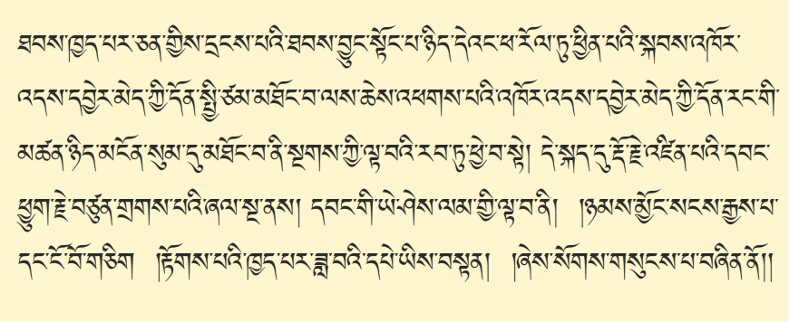དཔེ་དེ་བཞིན་དུ། གསང་སྔགས་རྡོ་རྗེ་ཐེག་པའི་ལྟ་སྒོམ་གསུམ་པོ་དེ་སྒྲ་ཇི་བཞིན། ༺སྨིན་༻གནད་དུ་བསྣུན་པ་ཞིག། ལམ་དུ་ལེན་ཐུབ་ན། ༺དཔེར་ན།༻ ཕྱི་རྒྱལ་གྱི་འཕྲུལ་འཁོར་གྱི་ནང་ནས། ནམ་གྲུ་ནང་སོང་ན། སྨི་ལེ་སྟོང་ཕྲག་མང་པོ་ཆུ་ཚོད་གཅིག། རྒལ་འགྲོ་བ་ལྟ་བུ་ཞིག་རེད་འགྲོ་རྒྱུ་རེད་དུས། དེའི་ཕྱིར་ན། གསང་སྔགས་རྡོ་རྗེ་ཐེག་པ། ཐབས་ཁྱད་པར་ཅན་དེ། ཉམས་སུ་ལེན། ཐབས་ཁྱད་པར་ཅན་དེས་དྲངས་འོངས་ན། དེ་ནས། ཐབས་བྱུང་སྟོང་པ་ཉིད་ཀྱི་ངོ་བོ། རྣམ་ཀུན་མཆོག་ལྡན་གྱི་སྟོང་ཉིད་དེའང་། ཕ་རོལ་ཏུ་ཕྱིན་པའི་སྐབས། འཁོར་འདས་དབྱེར་མེད་དོན་སྤྱི་ལྟར་དུ་མཐོང་བ་ལས། ཆེས་འཕགས་པར་འགྱུར་བ་ཟེར་དུས། རྒྱུ་ཡི་མཚན་ཉིད་ཐེག་པའི་ལྟ་བ་དེ་ག་ཚོད་བཤད་ནའང་། རྗེས་དཔག་གི་སྒོ་ནས་བཤད་རྒྱུ་མ་གཏོགས། མངོན་སུམ་དུ་གཏན་ནས་བཤད་ཐུབ་ཀྱི་ཡོད་མ་རེད། དེ་ནས། གསང་སྔགས་རྡོ་རྗེ་ཐེག་པའི་ལམ་འདི་ཡིན་ན། མངོན་སུམ་གྱི་སྒོ་ནས་གཏན་ལ་ཕབ་པ་རེད་དུས། མངོན་སུམ་མཐོང་བ་ནི࿏་ཆེས་འཕགས་པས། མར་འཁོར་བ་ཟེར་ན་སྤང་བྱ་མེད་པ། ཡར་མྱ་ངན་ལས་འདས་པ་ཟེར་ན། ཐོབ་བྱ་གསར་དུ་མི་དགོས་པ། དཱ། དེ་ལ་བསལ་བྱ་ཅི་ཡང་མེད། །བཞག་པར་བྱ་བ་ཅུང་ཟད་མེད། །ཡང་དག་ཉིད་ལ་ཡང་དག་ལྟ། །ཡང་དག་མཐོང་ན་རྣམ་པར་གྲོལ། །ཟེར་འདི་མདོ་སྔགས་ཀྱི་ཐེག་པ་རིམ་པ་དགུ་ལ་སྦྱར་བ། ཞེ་ཆེན་རྒྱལ་ཚབ་ཀྱི་བདེན་གཉིས་དབྱེར་མེད་ཀྱི་རྣམ་གཞག་ཟེར་མཁན་ཞིག་ཡོད་རེད་འདི་དཱ། དེ་ལྟ་བུའི་དོན་ཞིག། ཚུལ་བཞིན་དུ་རྟོགས་སོང་ན། རྟོགས་པ་དེའང་རྗེས་དཔག་གི་ལྟ་བ་མ་ཡིན་པ། རང་གིས་མངོན་སུམ་དུ་མཐོང་བ་ནི། གསང་སྔགས་རྡོ་རྗེ་ཐེག་པའི་ལམ་གྱི་ལྟ་བ་རབ་ཏུ་དབྱེ་བ་སྟེ། དེ་ཡིན་པའི་དབང་གིས། དེ་སྐད་དུ་རྡོ་རྗེ་འཛིན་པའི་དབང་ཕྱུག་ས་སྐྱ་པ་རྗེ་བཙུན་གྲགས་པ་རྒྱལ་མཚན་ཟེར་འདི་ཉིད་ཀྱི་༼འདི་༽ཞལ་སྔ་ནས། དབང་གི་ཡེ་ཤེས་ལམ་གྱི་ལྟ་བ་ནི། །ཉམས་མྱོང་སངས་རྒྱས་པ་དང་ངོ་བོ་གཅིག །རྟོགས་པའི་ཁྱད་པར་ཟླ་བའི་དཔེ་ཡིས་བསྟན། །ཞེས་སོགས་གསུངས་པ་རེད། དེ་ནས། དོན་གྱི་ཡེ་ཤེས་ཟེར་མཁན་དེ། དཔེར་ན། ༼ནམ་མཁའ་ནས་ཟླ་བ་༽ ཟླ་བ་དེ་ཉིད་ནམ་མཁའ་ལ་ཤར་འོང་བའི་སྐབས་ན། ས་གཞི་ནས་ཟླ་བ་བལྟས་ན། ཟླ་བ་གཅིག་ཤེས་ཤེས་ཀྱི་རེད། ཟླ་བ་ངོ་ཤེས་ཀྱི་རེད། ཟླ་བ་འདིའི་སྟེང་དུ་གྲོང་ཁྱེར་ག་འདྲ་ཡོད། ཟླ་བ་འདི་རྒྱ་ཆེ་ཆུང་ག་ཚོད་ཡོད་ཤེས་ཀྱི་མ་རེད། ༼དེ་སྐད་༽ ཟླ་བ་དངོས་གནས་ཀྱི་ནང་དུ། ཅིག་ཕྱིན་ན། ཟླ་བ་འདི་ཡི་ཕྱོགས་ཆ་དེ་ལ། རྒྱ་ཆེ་ཆུང་ག་འདྲ་འགི། དེའི་ནང་དུ། ལྷའི་གྲོང་ཁྱེར་ག་འདྲ་འགི། དེ་ལ་བདེ་སྐྱིད་ལོངས་སྤྱོད་ག་འདྲ་འགི། ཤེས་འོང་རྒྱུ་རེད་དུས། དཔེ་དེ་བཞིན་དུ། རྒྱུ་མཚན་ཉིད་ཐེག་པའི་ལམ་གྱི་དོན་དམ་་་་་༼དམ་༽ཡེ་ཤེས་ལྟ་བ་འདི་རྟོགས་འོངས་ན། ཕྲ་ཞིབ་ནས་ཟླ་བ་བལྟས་མཁན་ལྟ་བུ་རེད། གསང་སྔགས་རྡོ་རྗེ་ཐེག་པའི་ལམ་གྱི་དོན་གྱི་ཡེ་ཤེས་མངོན་སུམ་དུ། རྒྱུད་ལ་སྐྱེས་པའི་ལྟ་བ་ཞིག་རྟོགས་འོངས་ན། ཟླ་བ་ཁོ་རང་གི་ནང་དུ་སོང་ནས། དེ་ནས། ཟླ་བའི་བཀོད་པ་ཡོངས་སུ་རྫོགས་པ་༼ཆུད་༽ཁོང་དུ་ཆུད་སོང་བ་ལྟ་བུ་རེད་དུས། དེའི་ཕྱིར་ན། གསང་སྔགས་རྡོ་རྗེ་ཐེག་པའི་ལམ་ཟབ་པ་དང་མྱུར་བ། ཐབས་དུ་མ་ཡིན། ཞེས་པ་ལ་སོགས་པ་གསུངས་པ་བཞིན་དུ་ཤེས་པར་བྱའོ།། །།
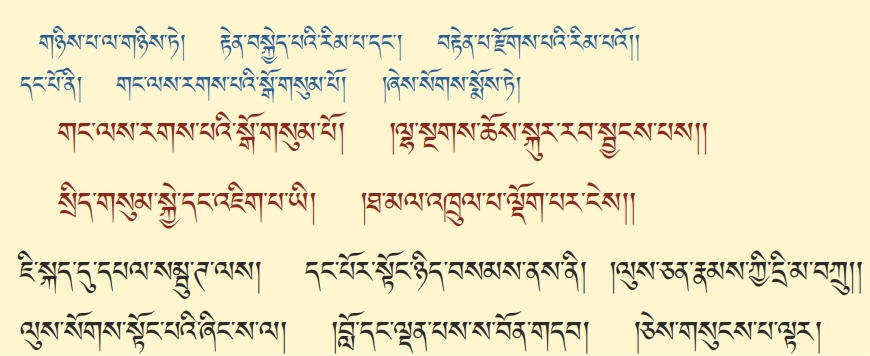་་་གཉིས་ཀྱི་ནང་ནས། དང་པོ་རྒྱས་པར་བཤད་པ་དེ་ལ། ཐུན་མོང་ཕ་རོལ་ཏུ་ཕྱིན་པའི་ལམ་བཤད་པ་དང་། ཁྱད་པར་གསང་སྔགས་རྡོ་རྗེ་ཐེག་པའི་ལམ་བཤད་པ་གཉིས་ཀྱི་ནང་ནས། དེ་ནས། ཐུན་མོང་ཕ་རོལ་ཏུ་ཕྱིན་པའི་ལམ་བཤད་པ་དེ་ཉིད་སོང་ཟིན་ཏེ། གཉིས་པ་གསང་སྔགས་རྡོ་རྗེ་ཐེག་པ་་་་་ལམ་གྱི་རིམ་པར་བཤད་པ་བྱེད་པ་དེ་ཉིད་ན་ཡང་། ་་་རྣམས་དང་། ལམ་འབྲས་བུ་དང་བཅས་པ་རྣམ་པར་དབྱེ་བ་གཉིས་ཡོད་པའི་ནང་ནས། དང་པོ་ལམ་གྱི་འཇུག་སྒོ་སྤྱིར་བསྟན་པ་དེ་ཉིད་སོང་ཟིན་ཏེ། གཉིས་པ་ལམ་གྱི་རིམ་པ་བཤད་པ་དེ་ལ། སྨིན་བྱེད་ཀྱི་དབང་༼དང་།༽གྱི་རྣམ་གཞག་༼དང་༽དེ་སོང་ཟིན་ཏེ། གཉིས་པ་ལ། མདོར་བསྟན་པ་དང་། རྒྱས་པར་བཤད་གཉིས་ཡོད་པའི་ནང་ནས། དེའང་མདོར་བསྟན་པའི་རིམ་པ་དེ་ཉིད་སོང་ཟིན་ཏེ། གཉིས་པ་རྒྱས་པར་བཤད་པ་ལ་གསུམ། གཞི་ལྟ་བས་ཐག་བཅད་པ། ལམ་བསྒོམས་པས་ཉམས་སུ་ལེན་པ། འབྲས་བུ་ཇི་ལྟར་འགྲུབ་པའི་ཚུལ་གྱིས་མཇུག་བ། ཞེས་བྱ་བ་རྣམ་པ་གསུམ་ཡོད་པའི་ནང་ནས། གཞི་ལྟ་བས་ཐག་བཅད་པའི་རིམ་པ་དེ་ཉིད་ཀྱི་རིམ་པ་སོང་ཟིན་ཏེ། གཉིས་པ་ལམ་བསྒོམས་པས་ཉམས་སུ་བླང་བ་དེ་ལ། རྟེན་བསྐྱེད་པའི་རིམ་པ་དང་། བརྟེན་པ་རྫོགས་པའི་རིམ་པའོ། །ཞེས་པ་སྟེ། རྟེན་ཞེས་པ་དེ། ད་ལྟ། བསྐྱེད་རིམ་གྱི་སྒོ་ནས་ཐམས་ཅད། སྣོད་བཅུད་རྒྱུད་གསུམ་གྱི་འཇིག་རྟེན་ལ་༼སྟེ།༽རྟེན་བྱས་ཏེ་བསྒོམ་པར་འགྱུར་བ་ཡིན་པ་དང་། བསྐྱེད་རིམ་གྱི་གྲུབ་འབྲས་མཐར་ཐུག་པ་འདི་གང་ཡིན་ཟེར་ན། ༼རང་གི་༽ རྫོགས་རིམ་རེད། རྫོགས་རིམ་དེ་ཉིད། རང་གི་རྡོ་རྗེ་གསུམ་གྱི་གྲོང་ཁྱེར་གྱི་གནས་པ་རྩ། གཡོ་བ་རླུང་། བཀོད་པ་བྱང་ཆུབ་ཀྱི་སེམས་ལ་བརྟེན་ནས་སྒྲུབ་དགོས་པ་དང་། དེ་བས་ཀྱང་། རྫོགས་རིམ་མཐར་ཐུག་དབང་བཞི་པའི་ཡེ་ཤེས་དེ་ཉིད་ནི། བུམ་དབང་མི་བཤིགས་པའི་ཐིག་ལེ་ལ། སྒྲུབ་དགོས་པ་ཡིན་པའི་ཚུལ་བཤད་པའི་ཕྱིར་ན། དེ་ནས། བརྟེན་པ་༺དབང་ཁ་༻གསུམ་པ་འདིའི་སྒོ་ནས། དང་པོ་རྟེན་བསྐྱེད་པའི་རིམ་པ་བཤད་པར་འགྱུར་བ་དེ་རེད་དུས། དེ་ནས། ་་་རགས་པའི་སྒོ་གསུམ་པོ། །ལྷ་སྔགས་ཆོས་སྐུར་རབ་སྦྱངས་པས། །སྲིད་གསུམ་སྐྱེ་དང་འཇིག་པ་ཡི། །ཐ་མལ་འཁྲུལ་པ་ལྡོག་པར་ངེས། །ཞེས་པ་སྨོས་ཏེ། དེ་ཡང་ཇི་སྐད་དུ། དཔལ་༼ཀྱེ་༽འགྱེད་པ་རྡོ་རྗེའི་བཤད་པའི་རྒྱུད་ཀྱི་རྒྱལ་པོ་དཔལ་སམྦུ་ཊ་ལས། དང་པོར་སྟོང་ཉིད་བསམས་ནས་ནི། །ལུས་ཅན་རྣམས་ཀྱི་དྲི་མ་བཀྲུ། །ལུས་སོགས་སྟོང་པའི་ཞིང་ས་ལ། །བློ་དང་ལྡན་པས་ས་བོན་གདབ། །ཅེས་གསུངས་པ་ལྟར་དུ།
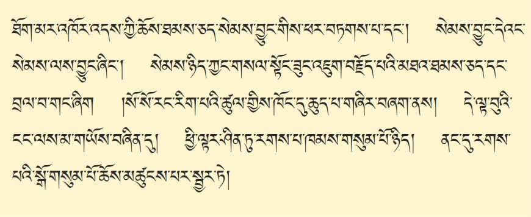དང་པོ། ཐོག་མ། སྤང་བྱ་འཁོར་བའི་ཆོས། ལས་དང་ཉོན་མོངས་པ་ཐམས་ཅད་དང་། བླང་བྱ་མྱ་ངན་ལས་འདས་པའི་ཆོས། སྐུ་དང་ཡེ་ཤེས་ཀྱི་ཆོས་ཐམས་ཅད་སེམས་བྱུང་གི་སྒོ་ནས་ཕར་སྒྲོ་བཏགས་པར་གྱུར་བ་དང་། སེམས་བྱུང་དེའང་། གང་ལས་བྱུང་ཟེར་ན། སེམས་ལས་འབྱུང་ཞིང་། སེམས་དེ་ཡང་གང་ལས་འབྱུང་ཟེར་ན། གསལ་སྟོང་ཟུང་འཇུག་བརྗོད་པའི་མཐའ་ཐམས་ཅད་དང་བྲལ་བ་གང་ཞིག་གི་གནས་ལུགས་དེ་ཡིན། གནས་ལུགས་མཐར་ཐུག་དེ་མངོན་དུ་བྱེད་པ་ལ། སོ་སོ་༼རིག་༽རང་རིག་པའི་ཚུལ་གྱིས་ཁོང་དུ་ཆུད་པ་གཞིར་བཞག་ནས་ཟེར། དེ་ནས། གསང་སྔགས་རྡོ་རྗེ་ཐེག་པའི་དབང་བཞི་པའི་ཡེ་ཤེས་དེ་ཡང་དག་པ་ཞིག་རྒྱུད་ལ་༼སྐྱེ་༽ཐེབས་ན། དེ་ནས། བསྐྱེད་པ་དང་རྫོགས་པ་ཐམས་ཅད། དེའི་༼རྗེས་༽རྗེས་འཐེབ་འགྲོ་བསྡད་རེད། དངོས་གྲུབ་ཀྱི་རྒྱུ་༺རེད་༻འགྲོ་རྒྱུ་རེད་དུས། དེའི་ཕྱིར་ན། དེ་ལྟ་བུའི་སོ་སོ་རང་རིག་པའི་ཡེ་ཤེས་ཀྱིས། གསལ་སྟོང་ཟུང་འཇུག་གི་ངོ་བོ་དེའི་ངང་ལས་མ་གཡོས་བཞིན་དུ། ཕྱི་ལྟར་ན། ཤིན་ཏུ་རགས་པ་ཁམས་གསུམ་པོ་དེ་ཟེར་དུས། འདོད་ཁམས། གཟུགས་ཁམས། གཟུགས་མེད་ཀྱི་ཁམས་གསུམ་པོ་འདི། ཕྱི་སྣོད་ཀྱི་འཇིག་རྟེན། ནང་བཅུད་ཀྱི་སེམས་ཅན། དེ་རྣམས་ཀྱི་རྒྱུད་ལས་ཉོན་མོངས་པ་དུག་ལྔ་ཡོད་པ་དེ་བསྐྱེད་རིམ་གྱི་སྦྱང་བྱ་ཡི་གཙོ་བོ་དེ་རེད། དེ་ནས། དེ་ཡི་རྗེས་སུ། ནང་དུ་རགས་པའི་སྒོ་གསུམ་པོ་གསུང་དུས་ཙ་ནས། ཇི་ལྟར་ཕྱི་རོལ་དེ་བཞིན་ནང་། །ཟེར་མཁན་དེ་རེད་དུས། ནང་ལ་རྡོ་རྗེ་ཕུང་པོའི་གྲོང་ཁྱེར་དུ། གནས་པ་རྩ། གཡོ་བ་རླུང་། བཀོད་པ་བྱང་ཆུབ་ཀྱི་སེམས་ཡོད་པ་དེ། སྒོ་ལུས་ངག་ཡིད་གསུམ་གྱི་༺རྟེན་དུ་༻འགྱུར་བ་ཆོས་མཚུངས་པར་སྦྱར་ཏེ།
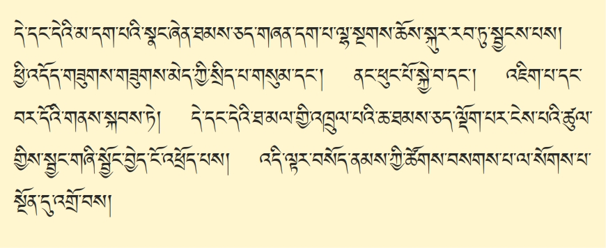དེ་ནས། དེ། སྣོད་བཅུད་རྒྱུད་གསུམ་ཟེར་ནའང་འདྲ། ལུས་ངག་ཡིད་གསུམ་ཟེར་ནའང་འདྲ། དེ་དང་དེ་ཡི་༼དེ་དག་༽མ་དག་པ་རྣམས་ཀྱི། ཀུན་འབྱུང་ལས་དང་ཉོན་མོངས་པ་ཡིས་སྐྱེ་༺སྡོད་པ࿏་དང་།༻ཕྱིར་སྣོད་ཀྱི་འཇིག་རྟེན་འབྱུང་བ་ལྔ། ནང་བཅུད་ཀྱི་སེམས་ཅན་ཕུང་པོ་ལྔ། དེའི་རྒྱུད་ཀྱི་ཉོན་མོངས་པ་ལྔ་དང་བཅས་སྣང་ཞེན་དེ་ཐམས་ཅད་མེད་པར། དེ་ནས། ཟག་བཅས་སྡུག་བསྔལ་གྱི་རང་བཞིན་མཐོང་བར་འགྱུར་བ་དེ། ཕར། དག་པར་བྱ་བའི་ཕྱིར་དུ། དེ་ནས། དེ་སྤང་བྱ་རུ་མི་ལྟ་བར། ལྷ་སྔགས་ཆོས་སྐུའི་རང་བཞིན་དུ་རབ་ཏུ་སྦྱངས་ཏེ། ཕྱི་སྣོད་ཀྱི་འཇིག་རྟེན་དེ། རང་གི་ཡི་དམ་ལྷག་པའི་ལྷ་གང་ཡིན་པ་དེའི་ཞིང་ཁམས། ནང་བཅུད་ཀྱི་སེམས་ཅན་ཐམས་ཅད། ལྷ་དེ་ཡི་གདན་གསུམ་ཚང་བའི་དཀྱིལ་འཁོར་གྲུབ་པར་བྱེད་པ་དང་། དེ་ནས། བསྐྱེད་རིམ་ཁོ་རང་ལའང་། བསྐྱེད་རིམ་གྱིས་བཟུང་འགྲོ་དུས། སྣོད། དང་པོ། ལྷ་ཡི་དཀྱིལ་འཁོར་དུ་བསྒོམ། དེ་ནས། དེ་ལ࿏་ང་རྒྱལ་བརྟན་པ། དག་པ་དྲན་པ། རྣམ་པ་གསལ་བ་གསུམ་རེད་ཚར་དུས། དེ་ནས། བསྐྱེད་རིམ་གྱི་ཏིང་ངེ་འཛིན་ལ་ཡུན་རིང་པོ་བསྒོམས་ནས། ༺སྐྱོ་འོང་བའི་སྐྱོ་བ་ཚང་བ་སྐྱེ་པ་་་་ཞེས།༻བསྐྱེད་རིམ་འདིའི་བོགས་འགྲོ་རྫི་བྱེད་པ་ལས། དཔེར་ན། མི་ཞིག་ཡིན་ན། ལུས་ངག་ཡིད་གསུམ་ལྷན་ཅིག་ཏུ་ཚོགས་ན། ཅིག། ལས་དང་བྱ་བ་གང་དགོས་ན་བྱེད་ནུས་ཀྱི་རེད་དུས། དཔེ་དེ་ལྟ་བུ་སྟེ། སྔགས་ཀྱིས་ཐུགས་རྒྱུད་བསྐུལ་ན། ལྷ་ཡི་ཡེ་ཤེས་དེ། སྔགས་ཀྱི་རོལ་པ་ལ་འཆར་འོང་དུས། སྔགས་འདི། ཡེ་ཤེས་ཀྱི་རོལ་པའི་སྔགས་འདི་ཡང་ནས་ཡང་དུ་བཟླས་ན། སྔགས་འདི་ཡིས། མཆོག་དང་ཐུན་མོང་གི་དངོས་གྲུབ་ཐམས་ཅད། མྱུར་དུ་འབྱིན་པར་བྱེད་རྒྱུ་རེད་དུས། དེའི་ཕྱིར་ན། དེ་ནས། བསྐྱེད་རིམ་བོགས་བྱིན་པའི་༺ཚུལ་༻དང་། སྔགས་དང་། དེ་ནས། ལྷ་དང་སྔགས་དེ་དག་ཐམས་ཅད་མེད་པའང་། ཐ་མལ་པའི་གཟུགས་ཀྱི། ཐ་མལ་པའི་སྔགས་ལྟ་བུའི་རྣམ་པར་མི་ལྟ་བར། སངས་རྒྱས་ཀྱི་ཡེ་ཤེས་རྣམ་པ་ཐམས་ཅད་པ་དེ། གདུལ་བྱ་ལ། སྐུ་ཡིས་འདུལ་བ་རྣམས་ལ་ལྷ། གསུང་གིས་འདུལ་བ་རྣམས་ལ་སྔགས། ཐུགས་ཀྱིས་འདུལ་བ་རྣམས་ལ། ཆོས་སྐུ་ཡི་རང་བཞིན་ཡིན་པར་ཤེས་ཏེ། རབ་ཏུ་སྦྱོང་བར་བྱེད་པ་དེ་ལ་བརྟེན་ཏེ། དེ་ནས། དོན་མ་དག་པ་ལས་དང་ཉོན་མོངས་པ་ཡིས་མཐོང་ན། སྣོད་བཅུད་སྡུག་བདེན་དུ་མཐོང་བ་ཕར་སྦྱངས་ཏེ། ཕྱི་འཇིག་རྟེན་ཁམས་ལ་ཡིན་ནའང། འདོད་ཁམས་དང་། གཟུགས་ཁམས། གཟུགས་མེད་ཁམས་གསུམ་གྱི་སྲིད་པ་གསུམ་དང་། ནང་གི་ཕུང་པོ་ལྔ་པོ་དེ་དག་ཡིན་ནའང་། དང་པོ་ཚུར་སྐྱེ་བ། ཐ་མར་ལུས་སེམས་གཉིས་སོ་སོར་བྲལ་ཏེ་འཇིག་པ་དང་འཆི་བ། བར་དོའི་གནས་སྐབས་ཏེ། འདི་རྣམ་པ་གསུམ་པོ་འདི། སྐྱེ་འཇིག་བར་དོ་གསུམ་འདི། སྐུ་གསུམ་གྱི་རང་བཞིན་དུ་སྦྱངས་ཏེ། དེ་ནས། ༼ཐབས་་་་༽ སྲིད་པ་གསུམ་དང་། སྐྱེ་འཆི་བར་དོ་གསུམ་གྱི་དེ་དང་དེའི་ཐ་མལ་གྱི་འཁྲུལ་པའི་ཆ་ཐམས་ཅད། བསྐྱེད་རིམ་དེ་ལ་བརྟེན་ཏེ་ལྡོག་པར་ངེས་པའི། དེ་ནས། སྦྱང་གཞི། གཉུག་མའི་རྡོ་རྗེ་གསུམ་ལ࿏། ཡེ་ཤེས་ཟེར། རང་མགོ་ལུས࿏་ངག་ཡིད་གསུམ་ན࿏་ཡོད་པ་དེ། སྦྱོང་བྱེད། ལྷ་སྔགས་ཆོས་སྐུའི་རོལ་གར་གྱིས་རབ་ཏུ་སྦྱངས། དེ་ལྟའི་སྦྱོང་བ་འདི། སྦྱོང་གཞི་དང་སྦྱོང་བྱེད་གཉིས་རྟོགས་བྱར་༺ཐུབ་ན།༻དེ་སྔགས་ཀྱི་ལམ་གྱི་གོ་བ་རྣལ་མ་རེད་དུས། དེ་ངོ་འཕྲོད་པར་བྱས། དེ་ནས། ངོ་འཕྲོད་པར་བྱས་པའི་རྗེས་སུ། དེ་ནས། མཆོག་དང་ཐུན་མོང་གི་དངོས་གྲུབ་སྒྲུབ་པ་དེ་ལ། བསོད་ནམས་ཀྱི་ཚོགས་བསགས་དགོས་རྒྱུ་རེད་དུས། དེ་ནས། བསོད་ནམས་ཀྱི་ཚོགས་བསག་པར་བྱ་བའི་ཕྱིར་དུ། སྐྱབས་སུ་འགྲོ་བ་དང་། སེམས་བསྐྱེད་པ་དང་། ཡན་ལག་བདུན་པ་ཡི་སྒོ་ནས། བསགས་སྦྱངས་བྱེད་པ་དང་། དེ་ནས། སྡོམ་པ་བཟུང་བ་དང་། སྣོད་བཅུད་ཡེ་ཤེས་ཀྱི་འཁོར་ལོར་བྱིན་བརླབས་པ་དང་། ༺ལྷ་སྔགས།༻ མཆོད་པ་བྱིན་གྱིས་རླབས་པ་ལ་སོགས་པ་སྔོན་དུ་འགྲོ་བས།
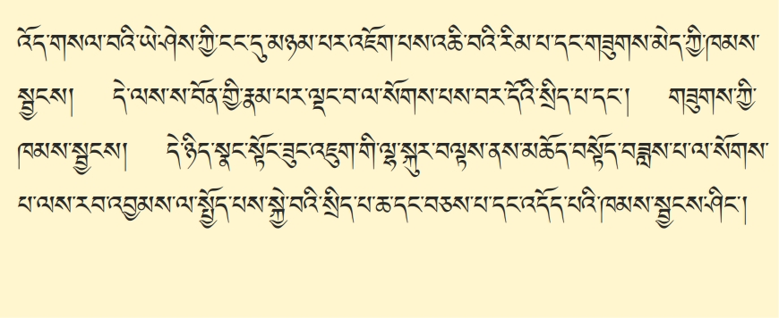དེ་ནས། ཐོག་མ་ཉིད་དུ། དཱ། སྣོད་བཅུད་རྒྱུད་གསུམ་པོ་ཐམས་ཅད། ཤཱུ་ནྱ་ཏཱའི་སྔགས་བརྗོད་པ་དང་མཉམ་དུ། ཕར། མི་དམིགས་པ་སྟོང་པ་ཉིད་ཀྱི་ངང་དུ་སྦྱངས། དེ་ནས། རྙིང་མ་ལྟ་བུ་ཡིན་ན། དེ་བཞིན་ཉིད་ཀྱི་ཏིང་ངེ་འཛིན་ཟེར་དུས། དེ་ནས། མཁའ་འགྲོ། བླ་མས་རང་ངོ་ངོ་འཕྲོད་པའི་དབང་དོན་གྱི་ཡེ་ཤེས་ཡོད་ན། དེའི་སྟེང་དུ་མཉམ་པར་བཞག། དབང་དོན་གྱི་ཡེ་ཤེས་ཉམས་མྱོང་མེད་མཁན་ཞིག་ཡིན་ནའང་། དེ་ནས། ཤཱུ་ནྱ་ཏཱའི་སྔགས་བརྗོད་སྡོད་དུས། སྣོད་བཅུད་ཐམས་ཅད་མི་དམིགས་པ། ནམ་མཁའ་ལ་འཇའ་ཡལ་བ་བཞིན་དུ་ཐད་བསམས། སེམས་ཀྱིས་སྟོང་ཉམས་ཅིག་ཤར་འོང་རྒྱུ། སྟོང་ཉམས་འདིའི་ངོ་བོ་ལས་ཚུར། གཡོ་མེད་མཉམ་པར་བཞག་སྟེ། ཉམས་མྱོང་གི་ངང་དུ། ཏིང་ངེ་འཛིན་མཉམ་པར་བཞག་པར་བྱ། དེ་ནས། འདི་ལྟ་བུ། བསྐྱེད་རིམ་གྱི་ངོ་བོ་དེ། ལམ་༺ངེས་རྫོགས་༻ཀྱི་དབང་དུ་བྱས་ན། དང་པོ། ཕྱི་སྣོད་ཀྱི་འཇིག་རྟེན། ནང་བཅུད་ཀྱི་སེམས་ཅན། བར་དུ་ཉོན་མོངས་དུག་ལྔ། མ་གྲུབ་པ་དེ་ཁར་རྩང་དབུ་མའི་རིགས་པ་ཡིས་དཔྱད་པ་དེ་ལྟ་བུས་༺གཅེས་སྤྲས་༻བྱེད། སློབ་མས་དེ་བསྒོམས། དེ་ནས། སྟོང་ཉིད་ཀྱི་ཉམས་མྱོང་ཕྲ་མོ་ཞིག་རྒྱུད་ལ་སྐྱེས་ཡོད་ན། དེ་ནས། དེའི་སྟེང་དུ་མཉམ་པར་བཞག་པ་དེ་འདྲ་རེད། མཉམ་པར་བཞག་པས། དེ། མཉམ་པར་བཞག་པ་དེ་བཞིན་ཉིད་ཀྱི་ཏིང་ངེ་འཛིན་འདིའི་སྦྱང་བྱ་གང་ཞིག་རེད་ཟེར་ན། ལུས་དང་སེམས་གཉིས། སོ་སོ་རུ་བྲལ་ཏེ་འཆི་བའི་སྲིད་པ་དེ་སྦྱང་རྒྱུ་རེད། ཁམས་གསུམ་གྱི་ནང་ནས་གཟུགས་མེད་ཀྱི་ཁམས་ལ་བག་ཆགས་དེ་སྦྱངས། དེ་ནས། དེའི་ནང་ནས། ༺སྙིང་པོའི་༻བསྐྱེད་རིམ་ལྟ་བུ་ཡིན་ན། སྟོང་ཉིད། དེ་ལྟ་བུའི་གནས་ལུགས་མ་རྟོགས་པའི་སེམས་ཅན་ཐམས་ཅད། སྙིང་རྗེ་ཆེན་པོ་ཞིག། བརྩེ་བའི་སྙིང་རྗེ་སྒོམ་དུས། དེ་ནས། ཀུན་སྣང་གི་ཏིང་ངེ་འཛིན་ཟེར་མཁན་འདི་རེད། དེ་ནས། སྟོང་དང་སྙིང་རྗེ་ཟུང་དུ་འཇུག་ན། ཐེག་པ་ཆེན་པོའི་ལམ་མ་ནོར་བ་རེད་རྒྱུ་རེད་དུས། འདི་རེད། དེ་ནས། འདི་སྦྱང་བྱ་གང་ཡིན་ཟེར་ན། སངས་རྒྱས་ཐམས་ཅད། ཆོས་སྐུ་ལས་གཟུགས་སྐུར་བཞེངས་པའི་ཚུལ་གྱི། འདི། བཞེང་མ་ཐུབ་པས། ལས་དང་ཉོན་མོངས་པའི་སྒྲིབ་པས་གཞིའི་ཆོས་ཉིད་ལས་ཚུར་འཁོར་བར་འཁྱམ་འོང་རྒྱུ། ༼དེ་ཕར་སྦྱོང་འགྲོ་དུས། ཆོས་སྐུ་ལས་གཟུགས་སྐུ་་་་་༽དེ་ཕར་སྦྱོང་འགྲོ་དུས། ཆོས་སྐུ་ལས་གཟུགས་སྐུ་བཞེང་པར་རྩོམ་པ་དེ་དང་མཚུངས་པ་དེ། སྦྱོང་བྱེད་བྱས། དེ་ནས། སྟོང་དང་སྙིང་རྗེ་ཟུང་དུ་འཇུག་པའི་ངོ་བོ་དེ་རེད། ས་བོན་གྱི་རྣམ་པ་ཡི་ཧཱུྃ་དང་ཧྲཱི་ལ་སོགས་པ་ལྡང་བ་དེ། རྒྱུ་ཡི་ཏིང་ངེ་འཛིན་ཟེར་རེད། དེ་ལྟ་བུ་སྒོམ་པར་བྱེད་པ་རེད། དེ་ནས། གསར་མ་ཡི་བསྐྱེད་རིམ་་་་་དེ། ས་བོན་གྱི་རྣམ་པ་ཡི་ཧཱུྃ་དང་ཧྲཱི་ལ་སོགས་པ་ལྡང་བ་དེ། རྒྱུ་ཡི་ཏིང་ངེ་འཛིན་ཟེར་རེད། དེ་ལྟ་བུ་སྒོམ་པར་བྱེད་པ་རེད། དེ་ནས། གསར་མ་ཡི་བསྐྱེད་རིམ་ལྟ་བུ་ཡིན་ན། ཤཱུ་ནྱ་ཏཱའི་སྔགས་ལ་སོགས་པ་བརྗོད་པས། སྣོད་བཅུད་ཐམས་ཅད་མི་དམིགས་པ་སྟོང་པ་ཉིད་དུ་སྦྱངས། དེ་ནས། སྟོང་པའི་ངང་ནས་བར་དོའི་ཤེས་པ། རྣམ་པར་ཤེས་པ་དེ་དང་། ལྷའི་ས་བོན་གྱི་ཚུལ་རྣམ་པ་བསྒོམ་པ་མ་གཏོགས། རྒྱུ་ཡི་དེ་བཞིན་ཉིད་ཀྱི་ཏིང་ངེ་འཛིན་དང་། ཀུན་སྣང་གི་ཏིང་ངེ་འཛིན། རྒྱུ་ཡི་ཏིང་ངེ་འཛིན་གསུམ་པོ་འདི་ཡོད་མ་རེད། འདིའི་ཏིང་ངེ་འཛིན་རྣམ་པ་གསུམ་པོ་དེ། གསང་སྔགས་རྙིང་མ་ཡི་ཁྱད་ཆོས་རེད། དེ་ལྟ་བུའི་རྣམ་པ་དང་། དོན་གྱིས། དེ་ནས། དང་པོ་སྟོང་ཉིད། ཕར་སྦྱངས་ཚར་དུས། དེ་ནས། སྣོད་བཅུད་ལྷ་སྔགས་ཆོས་སྐུའི་རྣམ་པ་རུ་སྦྱོང་འོང་རྒྱུ་འདི། སྦྱང་བྱ་ག་རེ་སྦྱོང་འོང་རེད་ཟེར་ན། བར་དོའི་སྲིད་པ་ལ་ནི། ད་ལྟ། ༼ཆོས་ཉིད་་་་ཆོས་ཉིད་ཀྱི་༽ཐ་མལ་པའི་འཁྲུལ་སྣང་ཐམས་ཅད། ཆོས་ཉིད་ཀྱི་ངོ་བོར་ཕར་སྦྱངས་ཚར་དུས། སླར་ཡང་སྣང་ཆ་ཞིག་ལྡང་འོང་དུས། དེ་ནས། སྐྱེ་བ་ག་ན་ལེན་དགོས་ན། བར་དོའི་སྲིད་པ་ཤར་འོང་རྒྱུ་དེ་དང་། དེ་ནས། གཟུགས་ཁམས་ཀྱི་ལྷ་ཡུལ་སྦྱངས། དེ་ནས། གང་བྱས་ནའང་། སྣང་སྟོང་ཟུང་འཇུག་གི་ངང་ནས། ས་བོན་དེ་ལས་རིམ་པ་བཞིན་དུ། ༺མངོན་འབྱུང་༻མངལ་སྐྱེས། རྡོ་རྗེའི་ཆོ་ག་གསུམ་སྐྱེས་ལ་སོགས་པ་ཡི་སྒོ་ནས། ལྷ་སྐུར་བལྟས་ཏེ། ལྷ་ཡི་རྣམ་པར་སྦྱོང་འོང་རྒྱུ། དེའི་སྟེང་ནས། དེ་ནས། ལྷ་ཡེ་ཤེས་པ་སྤྱན་འདྲེན། དམ་ཚིག་པ་ལ࿏་གཉིས་མེད་དུ་སྟིམ། དེ་ནས། དེ་ལ࿏་ཡང་། མཆོད་པ་ལ་སོགས་པ་ཕུལ་བར་བྱེད་དང་ནི། དེ་ནས། ལྷ་ཡི་ཆེ་བའི་ཡོན་ཏན་བརྗོད་པའི་བསྟོད་པ་བྱས་ཏེ། དེ་ནས། ད་ལྟ་ཞུས་པ་བཞིན་དུ། བསྐྱེད་རིམ་གྱི་བོགས་འབྱིན་ལ། བཟླས་པ་སྔགས་བརྗོད་རྣལ་འབྱོར་ལ་སོགས་པ་བསྒོམས་ནས། དེ་ནས། ལྷ་སྔགས་ཆོས་ཉིད་གསུམ་ལ་བརྟན་པ་ཐོབ་འོངས་ན། དེ་ནས། ཞི་རྒྱས་དབང་དྲག་གི་ལས་རབ་འབྱམས་དང་། མཆོག་གི་ཕྱག་རྒྱ་ཆེན་པོའི་དངོས་གྲུབ་ལ་སོགས་པ་ཚུལ་བཞིན་དུ་སྤྱོད་འོང་རྒྱུ་རེད། དེ་སྤྱོད་པར་བྱེད་པ་ནི། དེ་ནས། ཚུར། སྐྱེ་བའི་སྲིད་པ་བཟུང་ཚར་ནས། པུ་གུ་དེ། ༼དྲོད།༽ མངལ་སྐྱེས་ལྟ་བུ་ཡིན་ནའང་མ་ལས་སྐྱེ། སྐྱེས་ཚར་དུས། དེ་ནས། འཇིག་རྟེན་ལ࿏་བྱ་བ་རྩོམ་པར་བྱེད་པ། འདིའི་སྲིད་པ་ཆ་དང་བཅས་པ་དང་ནི། འདོད་པའི་ཁམས་ཀྱི་བག་ཆགས་ཐམས་ཅད་སྦྱངས་ཤིང་། དེ་ནས། སྦྱངས་ཟིན་པ་དེ་ལ་བརྟེན་ནས། སངས་རྒྱས་རྣམས་ཀྱང་། སངས་རྒྱས་མཆོག་གི་སྤྲུལ་པའི་སྐུ་འཇིག་རྟེན་དུ་བྱོན་ཚར་དུས། གཞན་དོན་གྱི་ཕྲིན་ལས་ཀྱི་མཛད་པ་རིམ་པ་བཞིན་དུ་༺སྐྱོང་བ་ལྟ་བུའི་ཁམས་ཀྱིས་༻སྦྱངས་ཤིང་།
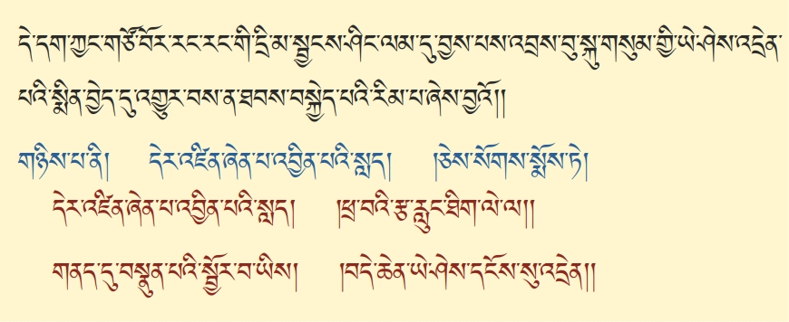དེ་དག་ཀྱང་གཙོ་བོར་རང་རང་གི་དྲི་མ་སྦྱངས་ཤིང་ཟེར། དཔེར་ན། སྣོད་བཅུད་ཐམས་ཅད་མི་དམིགས་པ་སྟོང་པར་སྦྱངས་ནས། འཆི་སྲིད་སྦྱངས་བ་འདི། གཙོ་བོ་ཡི་ཚུལ་དུ་སྨོས་རྫི་རེད་ཟེར་མ་གཏོགས། ཡང་བར་དོའི་སྲིད་པ་དང་། སྐྱེ་བའི་སྲིད་པའང་། སྟོང་པར་སྦྱོང་བ་འདིས་མི་སྦྱོང་བ་མ་རེད། དེ་ནས། ལྡོག་ཆ་ཡིས་ཕྱེས་ནས། སྐབས་སུ་སོ་སོ་ཕྱེས་རེད་མ་གཏོགས། ཡང་གཅིག་གིས་གཅིག་ལ࿏་ཕན་པ་མེད་པ་མ་རེད་དུས། གཙོ་བོ་ཡི་ཆ་ནས་སྨོས་དུས། རང་རང་གི་དྲི་མ་སྦྱངས་ཤིང་། དེ་ཡིས། འབྲས་བུ་ལམ་དུ་བྱེད་པ་ཟེར་དུས། སངས་རྒྱས་རྣམས་ནི། འཇིག་རྟེན་གྱི་ཁམས་ལ། དང་པོ་ཆོས་ཉིད་མཉམ་པ་ཉིད་ཀྱི་ངང་ནས། སེམས་ཅན་ལ་དམིགས་པ་མེད་པའི་ཐུགས་རྗེ་ཆེན་པོ་བསྐྱེད། ཐུགས་རྗེ་ཆེན་པོ་བསྐྱེད་པ་དེ་ལ་བརྟེན་ནས། གདུལ་བྱའི་དོན་དུ། དེ་ནས། སྤྲུལ་པའི་སྐུ་ཡི་རྣམ་པར་བཞེངས། སྤྲུལ་པའི་སྐུ་ཡིས། ༼སངས་རྒྱས་༽སེམས་ཅན་ཐམས་ཐར་པའི་ལམ་ལ་བཀོད་པའི་ཕྲིན་ལས་མཛད་པ། འདིའི་རྣམ་པ་འདི་དང་༺མཚུངས་༻རྒྱུ་རེད། མ་དག་པ་འཁོར་བའི་སྐབས་ཡིན་ན། དེ་ནས། བར་དོའི་རྣམ་པར་ཤེས་པ་དེ་ཕར་མངལ་ནང་དུ་ཞུགས། སྐྱེ་བའི་སྲིད་པ་སྦྱོང་དུས། སྔོན་ནས། ལུས་སེམས་ཕར་བྲལ་ཏེ་བར་དོར་སྐྱེས་པའི་དྲི་མ་དང་བཅས་པ་སྦྱངས་ཤིང་། ལམ་དུ་བྱས་པས། དེ་ནས། འབྲས་བུ་རིམ་པ་བཞིན་དུ། སངས་རྒྱས་སྐུ་གསུམ་གྱི་ཡེ་ཤེས་དེ། རྒྱུད་ལ་འདྲེན་པར་བྱེད་པ། སྨིན་བྱེད་སྔོན་འགྲོ་ལྟ་བུ་འགྱུར་བས་ན། དེ་ལས། ཐབས་ཀྱི་སྣང་ཆ་དེ་གཙོ་བོ་ཡིན་པ་དང་། དེ་ནས། འདིའི་ཐོག་ནས། སྣོད་བཅུད་རྒྱུད་གསུམ་གྱི་སྣང་ཆ་དེ། ལྷ་སྔགས་ཆོས་སྐུ་ལ། ཚུར་སེམས་ཀྱིས་སྤྲོ་སྟེ་བསྐྱེད་པར་གྱུར་བ་ཡིན་པའི་ཕྱིར་ན། དེ། བསྐྱེད་པའི་རིམ་པ་ཞེས་བྱ་བའི་ཚུལ་གྱིས་བསྟན་པར་མཛད་པའི་རྒྱུ་མཚན་དེ་འདྲ་རེད། དེ་ནས། དེ་ཡི་རྗེས་སུ་དཱ། ལམ་རྫོགས་པའི་རིམ་པ་བསྟན་པར་གྱུར་བ་དེ་རེད། དེ་ལ་བསྟན་པ། རྫོགས་པའི་རིམ་པ་བསྟན་པ་ནི། ༼དེར་འཛིན་ཞེན་པ་༽དེར་འཛིན་༼ཞེན་༽ཞེན་པ་འབྱིན་པའི་སླད། །ཕྲ་བའི་རྩ་རླུང་ཐིག་ལེ་ལ། །གནད་དུ་བསྣུན་པའི་སྦྱོར་བ་ཡིས། །བདེ་ཆེན་ཡེ་ཤེས་རྙེད་པར་འགྱུར། །ཞེས་པའི་སྒོ་ནས་སྨོས་པ་སྟེ།
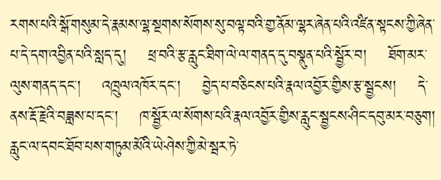དཱ། ད་ལྟ་བསྐྱེད་རིམ་འདི་རགས་པའི་རྣལ་འབྱོར་རེད་དུས། དེ་ནས། རགས་པ། ང་ཚོའི་གདོས་བཅས་འདོད་ཁམས་པའི࿏་ཤ་ཁྲག་གི་ལུས་ལྟ་བུ་འདི། སྒོ་གསུམ་པོ་དེ་རྣམས་ཐམས་ཅད། ལྷ་སྔགས་ཆོས་སྐུ་༺ཡོད་༻སུ་ལྟ་བུས། དེ་ནས། ལྷ་སྔགས་ཆོས་སྐུ། ༺གཞན་ལ་༻དེ་སངས་རྒྱས་ཀྱི་ཡེ་ཤེས་ཀྱི་རོལ་པ་ཡིན་བསམ་དུས། གྱ་ནོམ་ལྷར་ཞེན་པའི་འཛིན་པ་དེ། ཕར་ཞིག་དགོས་རྒྱུ་རེད་དུས། དེ་དག་ཞིག་པར་བྱ་བའི་ཕྱིར་དུ། དེ་ནས། རང་གི་རྡོ་རྗེ་ཕུང་པོའི་གྲོང་ཁྱེར་དེ་ལ། ཡེ་ཤེས་ཀྱི་རྩ། ཡེ་ཤེས་ཀྱི་རླུང་། ཡེ་ཤེས་ཀྱི་ཐིག་ལེ་ཡེ་ནས་གནས་ཡོད་པ་དེ་ལ། དེ་ནས། གནད་དུ་བསྣུན་པའི་སྦྱོར་བ་བྱས་ན། དེ་ནས། རྫོགས་པའི་རིམ་པ་དེ་བསྒོམ་རྒྱུ་རེད་དུས། དེ་ནས། རྫོགས་པའི་རིམ་པ་སྒོམ་འོང་དུས། ཐོག་མ་ཉིད་དུ། དེ་ནས། རྩ་འདི་གང་ལ་བརྟེན་ཡོད་ཟེར་ན། ལུས་ལ་བརྟེན་ཡོད་རེད། རྩ་འདི་ཡི་ནང་དེ་ན࿏། རྒྱུ་བ་འདི་རླུང་རེད། རླུང་གིས་ཕར་ཚུར་ཁྱེར་བར་བྱེད་པ་འདི་ཁམས་དཀར་དམར་རེད་དུས། དང་པོ་རྩ་འདི་དྲང་པོར་འགྲོ་དགོས་རེད། རྩ་དྲ་པོར་འགྲོ་བའི་ཐབས་སུ་གྱུར་བ་འདི་ལ། དེ་ནས། ལུས་གནད། རྫོགས་རིམ་སྒོམ་པའི་ཚེ་ན། རྣམ་པར་སྣང་མཛད་ཀྱི་ཆོས་བདུན་དང་ལྡན་པ་བཅའ་བར་བྱེད་པ་དང་། དེ་ནས། རྩ་ཡི་མདུད་པ་གྲོལ་རྫི་༼དང་༽ཡི་ཐབས་དང་། ལུས་ཀྱི་་་་བདེ་སྟོང་གི࿏་རླུང་དེ། ཡེ་ཤེས་ཀྱི་རྩ། ཡེ་ཤེས་ཀྱི་རླུང་འགྲོ་བར་བྱེད་པ་དེ་༺དཱ།༻ འཕྲུལ་འཁོར་དང་། དེ་ནས། འཕྲུལ་འཁོར་བྱེད་ཟིན་པ་དེ་ལ་བརྟེན་ཏེ། རྩ་འདི། ལུས་གནད་དྲང་པོར་སྲང་བ་དང་། འཕྲུལ་འཁོར་གྱིས་རྩ་ཡི་མདུད་པ་དཀྲོལ་ཚར་དུས། དེ་ནས། རླུང་ལམ་དུ་བྱེད་པའི་ཆེད་དུ། བྱེད་པ་ཅན་གྱི་སྦྱོར་བ་ཡི་སྒོ་ནས། རླུང་གི་བྱེད་པ་དེ་ཕར་བཅིངས། དེ་བྱས་དུས། ད་སྔ་རང་གི་ལུས་ལ་གནས་པའི་དེ་་་་། རླུང་དེ་དག། ཉོན་མོངས་པ་དུག་ལྔ་བསྐྱེད་པའི་ལས་དང་ཉོན་མོངས་པའི་རྩ་སྦུག་ལ་འགྲོ་ཡི་ཡོད་རེད་དུས། དེའི་ཕྱིར་ན། ལས་དང་ཉོན་མོངས་པའི་རྩ་སྦུག་གི་འགོ་འདི་ཕར་བཀག། ཡེ་ཤེས་ཀྱི་རྩ་སྦུག་ཚུར་རྒྱས་པར་བྱེད་པའི། འདིའི་རྣལ་འབྱོར་གྱི་སྒོ་ནས། ཐོག་མར་རྩ་སྦྱངས། རྩ་སྦྱོང་བ་འདིའི་ཐབས་སུ་འགྱུར་བ་དེ་ལ། རྡོ་རྗེའི་བཟླས་པ། ཕྲ་བའི་རྡོ་རྗེའི་བཟླས་པ་དང་། རགས་པའི་རྡོ་རྗེའི་བཟླས་པ་ཞེས་སྟེང་འོག་གི་རླུང་ཁ་སྦྱོར་བ་ལ་སོགས་པ། རྣལ་འབྱོར་གྱིས་རླུང་སྦྱངས། རླུང་སྦྱངས་བར་གྱུར་བ་དེ་ལ་བརྟེན་ཏེ། རླུང་འདི་གང་དུ་བཅུག་དགོས་རེད་ཟེར་ན། ལུས་ཀྱི་དབུས་སུ་ཡོད་པའི་དབུ་མའི་ནང་དུ་བཅུག། དེ་ནས། རླུང་བཏང་འགྲོ་བཞག་སྡོད་ལ་རང་དབང་ཐོབ། དབང་ཐོབ་འོང་དུས། གཏུམ་མོའི་ཡེ་ཤེས་ཀྱི་མེ་སྦར་ཏེ།
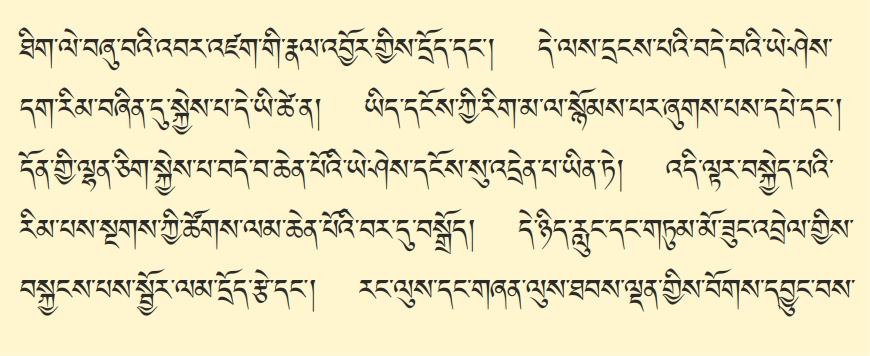སྤྱི་བོའི་ཐིག་ལེ་ཧཾ་ཡིག་ཞུ་བ་དེ་ལས། སྤྱི་བོའི་ཐིག་ལེ། ཡར་ཧེ་རུ་ཀའི་ངོ་བོ་དང་། གཏུམ་མོ་ཡུམ་རྡོ་རྗེ་རྣལ་འབྱོར་མས། མ་རྩ་ཡིས། རྣལ་འབྱོར་གྱི་ལུས་ལས། དྲོད་དང་། དྲོད་དེ་ལས་དྲངས་པའི་བདེ་བའི་ཡེ་ཤེས་སྐྱེས་པར་གྱུར་བའི་ཚེ་ན། དེ་ནས། ཁམས་ཞུས་པའི་བདེ་བ་དེ་ཉིད་སྐུ་རེད། དེ་ནས། འདི། བདེ་བ་ཡི་ངོ་བོ࿏། ཁམས་ཞུ་བ་འདི་སྐུ། འདི་ནས་བདེ་བ་སྐྱེས་པ་དེ་གསུང་། འདིའི་༼རྣམ་པ་་་༽འཁྲུལ་པའི་རྣམ་པར་རྟོག་པ་ཐམས་ཅད་ཕར་འགགས་ཏེ། ལྷན་སྐྱེས་པའི་ཡེ་ཤེས་རྒྱུད་ལ་སྐྱེ་འོང་རྒྱུ། ཐུགས་རེད་དུས། དེ་དག་རིམ་པ་བཞིན་དུ་ཤེས་པར་འགྱུར་བ་དེའི་ཚེ་ན། དེ་ནས། རྩ་དྲངས། རླུང་སྦྱངས། ཐིག་ལེ་༺ཏོག་ཙམ་བྱིན་ན།༻དང་པོ་ཡིད་ཀྱི་རིག་མ་ལ་བརྟེན་ཏེ། ཐབས་ཀྱི་ལམ་མངོན་དུ་བྱེད། དེ་ནས། བརྟན་པ་ཐོབ་སོང་ན། དངོས་གཞིའི་རིག་མ་ལ་སྙོམས་པར་ཞུགས་པས། དང་པོ་དཔེ་ཡི་ཡེ་ཤེས་ལ་བརྟེན་ཏེ་དོན་གྱི་ཡེ་ཤེས་རྒྱུད་ལ་འདྲེན། དོན་དམ་ལྷན་ཅིག་སྐྱེས་པའི་ཡེ་ཤེས་རྒྱུད་ལ་སྐྱེས་ཚར་ན། དཔེ་ཡི་ཡེ་ཤེས་དེའང་། བསྐྱེད་རིམ་རྫོགས་རིམ་ཐམས་ཅད་ལ། དེའི་རྗེས་འདེབས་བྱེད་དུས། མཆོག་གི་དངོས་གྲུབ་ཀྱི་༼ཉེ་བ་་་༽ཉེ་རྒྱུ་ལ࿏་འགྲོ་བ་ཡིན་པས། བདེ་བ་ཆེན་པོའི་ཡེ་ཤེས་དངོས་སུ་འདྲེན་པ་ཡིན་ཏེ། དེ་ཡིན་པའི་རྒྱུ་མཚན་གང་རེད་ཟེར་ན། དཔེར་ན། དེ་ནས། བསྐྱེད་རིམ་དང་རྫོགས་རིམ་གཉིས་ཀ་ཟུང་འཇུག་རེད་ཚར་ན། དེ་ནས། ཁང་བཟང་མཐོ་པོ་ཞིག་གི་མགོ་ལ་འགྲོ་དགོས་ན། ཐེམ་སྐས་ལ་འཛེག་སོང་ན། དེ་ནས། ཁང་བཟང་འདིའི་སྟེང་དུ་འགྲོ་ཐུབ་ཀྱི་རེད་དུས། དཔེ་དེ་བཞིན་དུ། འདི་ལྟར་བསྐྱེད་པའི་རིམ་པ་ཡི་སྒོ་ནས། ལམ་སྦྱངས། དབང་གིས་རྒྱུད་སྨིན། དེ་འདྲ་བྱེད་དུས། གསང་སྔགས་རྡོ་རྗེ་ཐེག་པའི་ལམ་གྱི་ཚོགས་ལམ་ཆེན་པོ་ཡི་བར་དུ། ས་འདིར་བསྒྲོད་འགྲོ་ཡི་རེད། དེ་ནས། བསྐྱེད་རིམ་འདི་༺བོགས་འབྱིན་པར་བྱ་བའི་ཕྱིར་དུ།༻ དེ་ཉིད་ཀྱི་རླུང་དང་གཏུམ་མོ་ཟུང་འབྲེལ་གྱི་སྒོ་ནས། ཉམས་ལེན་རྣལ་འབྱོར་བསྐྱངས་པས་ན། སྦྱོར་ལམ་གྱི་རྩེ་མོ་དྲོད་ལ་ཐུག། སྦྱོར་ལམ་རྩེ་མོ་དྲོད་ལ࿏་བརྟན་པ་ཐོབ་ཚར་དུས། དེ་ནས། རང་ལུས་ཐབས་ལྡན་དང་། གཞན་ལུས་ཕྱག་རྒྱའི་རྣལ་འབྱོར་གྱིས། དེའི་ཡེ་ཤེས་དེ་ལ་བོགས་དབྱུང་སྟེ།
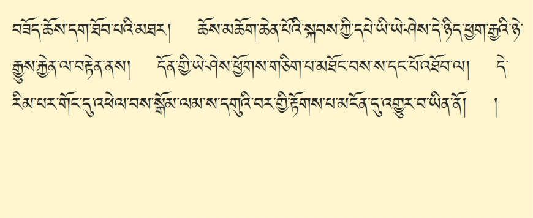གེགས་དག་ཐམས་ཅད་བསལ་བར་བྱེད་པའི་བཟོད་པ་དང་ཆོས་མཆོག་དག་ཐོབ་པའི་མཐར། ཆོས་མཆོག་ཆེན་པོའི་སྐབས་ཀྱི་དཔེ་ཡི་ཡེ་ཤེས་དེ་ཉིད་ཕྱག་རྒྱའི་ཡེ་ཤེས་ཀྱི་ཉེ་རྒྱུ་བྱེད་པ་ལ་བརྟེན་ནས། དོན་གྱི་ཡེ་ཤེས་མཐོང་ལམ་གྱི་བདེན་པ། ས་དང་པོ་དེ་མངོན་སུམ་དུ་མཐོང་བས། ཕྱོགས་གཅིག་པ་མཐོང་བས། ད་དང་པོ་འཐོབ། དེ་ནས། མཐོང་ལམ་གྱི་ཡེ་ཤེས་དེ་དང་། བསྐྱེད་རྫོགས་ཀྱི་ཏིང་ངེ་འཛིན་བརྟན་པ་ཐོབ་པ་སྟེ། རིམ་པས་གོང་ནས་གོང་དུ་འཕེལ་བར་བྱེད་པས། སྒོམ་ལམ་ས་དགུའི་བར་གྱི་རྟོགས་པ་མངོན་དུ་གྱུར་བ་དེ་ནི། དེ་ནས། གསང་སྔགས་རྡོ་རྗེ་ཐེག་པའི་མྱུར་ལམ་ལྟ་བུ་ཡིན་པས་ན། འདི་ལ་ཚུལ་བཞིན་དུ་ཉམས་སུ་ལེན་པར་བྱེད་ན། དེ་ནས། མཆོག་གི་དངོས་གྲུབ་བདེ་མྱུར་དུ་འཐོབ་པ་དང་། གང་ཟག་དབང་པོ་རབ་ཀྱིས། བརྩོན་འགྲུས་མཆོག་ཏུ་འགྱུར་བ་ཞིག་ཡིན་ན། ཚེ་གཅིག་ལུས་གཅིག་གི་སྟེང་དུ་འཐོབ་པ་དང་། དེ་ལྟར་མ་བྱུང་ནའང་། བར་དོའི་གནས་སྐབས་སུ། གྲོལ་བར་བྱེད་པ་ཐེ་ཚོམ་མེད་པས། དེ་ལྟ་བུའི་དགོས་པ་དང་ལྡན་པ་ཡིན་ནོ།། །།
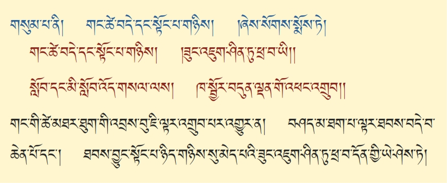གནད་འགག་གཅིག་ཏུ་བསྒྲིལ་ཏེ། སྤྱི་དོན་གཉིས་པ་མདོར་བསྡུས་ཏེ་གདམས་པ་ལ་བཞི་ལས། དང་པོ་ལམ་གྱི་གཞི་ངེས་འབྱུང་གི་བསམ་པ་ཐུགས་རྒྱུད་ལ་བསྐྱེད་དགོས་པར་གདམས་པ་སྟེ། བཤད་པ་དེ་ལ། སློབ་དང་མི་སློབ་འོད་གསལ་ལས། །ཁ་སྦྱོར་བདུན་ལྡན་གོ་འཕང་འགྲུབ། །ཞེས་པ་དེའི་སྒོ་ནས་བསྟན་པར་མཛད་པ་སྟེ། དེ་ལྟ་བུའི་གསང་སྔགས་རྡོ་རྗེ་ཐེག་པའི་ལམ་གཞི་ལྟ་བ་ཡིས་ཐག་བཅད་ནས། ལམ་བསྒོམ་པ་བསྐྱེད་རིམ་དང་རྫོགས་རིམ་གཉིས་ནི། ཉམས་ལེན་བྱས་པ་དེ་ལ་བརྟེན་ཏེ། དེ་ནས། ལམ་གྱི་འབྲས་བུ་༼ཐུག་༽གང་གི་ཚེ་མཐར་ཐུག་གི་འབྲས་བུ་ཇི་ལྟར་འགྲུབ་པར་འགྱུར་བསམ་ན། སྐྱེས་མ་ཐག་པ་ལྟར་དུ། ཐབས་བདེ་བ་ཆེན་པོ། ༼རྣམ་ཀུན་མཆོག་ལྡན་གྱི་སྟོང་པ་ཉིད་དང་།༽༼ཐབས་བྱུང་་་་།༽ མཆོག་ཏུ་མི་འགྱུར་བའི་བདེ་བ་ཆེན་པོ་དང་། ཐབས་བྱུང་རྣམ་ཀུན་མཆོག་ལྡན་གྱི་སྟོང་པ་ཉིད་གཉིས་སུ་མེད་པའི་ཟུང་འཇུག་ཤིན་ཏུ་ཕྲ་བ་དོན་གྱི་ཡེ་ཤེས་ཏེ། ཟུང་འཇུག་ཤིན་ཏུ་ཕྲ་བ་དོན་གྱི་ཡེ་ཤེས་དེ་ཉིད།
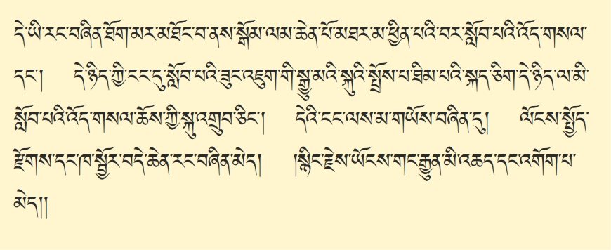༼རང་་་༽ དེ་ཡི་རང་བཞིན། ཐོག་མར། ཐོས་པ་དང་བསམ་པའི་རྗེས་དཔག་གིས་མཐོང་། དེ་ཡི་ཚེ་ན། བསྒོམ་པའི་ཉམས་ལེན་གྱིས་མཐོང་བས། སྒོམ་ལམ་ཆེན་པོ་མཐར་མ་ཕྱིན་བར་དུ་སློབ་པའི་འོད་གསལ་དང་། མཐར་ཕྱིན་པ་དེ་ཉིད་ཀྱི་ངང་དུ་སློབ་པའི་ཟུང་འཇུག་གི་སྒྱུ་མའི་སྐུའི་སྤྲོས་པ་ཐིམ། སྐད་ཅིག་དེ་ཉིད་ལ་མི་སློབ་པའི་འོད་གསལ་ཆོས་ཀྱི་སྐུ་མངོན་དུ་འགྲུབ་ཅིང་། མི་སློབ་པའི་འོད་གསལ་ཆོས་ཀྱི་སྐུ་དེ་ཡི་ངང་ནས་མ་གཡོས་བཞིན་དུ། ལོངས་སྤྱོད་རྫོགས་པའི་ཁ་སྦྱོར་བདེ་ཆེན་རང་བཞིན་མེད། །སྙིང་རྗེ་ཡོངས་གང࿏་རྒྱུན་མི་འཆད་དང་འགོག་པ་མེད། །གསུང་དུས་ཙ་ནས། དེ་ནས། མི་སློབ་པ་ཟུང་འཇུག་གི་གོ་འཕང་མངོན་དུ་གྱུར་ཟིན་པའི་གང་ཟག་དེ་ལ། གནས། དུས། སྟོན་པ། འཁོར། ཆོས། ཐམས་ཅད་ཀྱི་ཡོན་ཏན་མ་ལུས་པ་ཡོངས་སུ་རྫོགས་ཅིང་། ཡོན་ཏན་རྫོགས་པ་དེ་ལ་བརྟེན་ནས། འཕོ་འགྱུར་མེད་པ། བདེ་བ་ཆེན་པོའི་ཡེ་ཤེས་ལ་ལོངས་སྤྱོད་བཞིན་པ་ཡོད་པའི་ཕྱིར་ན། ལོངས་སྤྱོད་རྫོགས་པ་དང་། དེ་ནས། ཁ་སྦྱོར་ཞེས་པ་དེ་ནི། མཆོག་ཏུ་མི་འགྱུར་བའི་བདེ་བ་ཆེན་པོ་དང་། རྣམ་ཀུན་མཆོག་ལྡན་འདི། ༺ཡི་གེ་༻ཟུང་དུ་འཇུག་པས། ཡབ་ཡུམ་ཞལ་སྦྱོར་གྱི་ཚུལ་དུ་ཡོད་པའི་ཁ་སྦྱོར་ཟེར་བ་དང་། དེ་ལྟ་བུའི་ཁ་སྦྱོར་དེའང་། ཟག་བཅས་ཀྱི་བདེ་ལྟ་བུ་མ་ཡིན་པ། ནམ་ཡང་འཕེལ་འགྲིབ་དང་བྲལ་བའི་བདེ་བ་ཆེན་པོ་ཉིད་ཀྱི་ངོ་བོ་ལ་བཞུགས་ཤིང་། དེ་ནས། རྣམ་པ་དབྱེ་བ་ཡི་ཆ་ནས། སངས་རྒྱས་སྐུ་གསུམ། ཟག་པ་མེད་པའི་ཡོན་ཏན་གྱི་འབྲས་བུ། རྣམ་གྲངས་མང་པོ་ཞིག་བཤད་ནའང་། དོན་དུ། དངོས་པོ་དང་མཚན་མའི་རང་བཞིན་གཏན་ནས་གྲུབ་པ་མེད་པ་རྣམ་ཀུན་མཆོག་ལྡན་གྱི་སྟོང་ཉིད་ཟུང་དུ་འཇུག་པའི࿏་རང་བཞིན་གྱིས་ཡོད་པའི་ཕྱིར་ན། རང་བཞིན་མེད་པ་དང་། དེ་ནས། སངས་རྒྱས་རང་དོན་ནས། སྤང་རྟོགས་ཀྱི་ཡོན་ཏན་མཐར་ཕྱིན་ཏེ། མཆོག་ཏུ་ཞི་བ། མྱ་ངན་ལས་འདས་པ་ཆེན་པོའི་གོ་འཕང་མངོན་སུམ་དུ་རྙེད་ཟིན་ནའང་། ཆོས་ཉིད་ཀྱི་གཤིས་ཏེ། དགག་བཞག་ལྷུན་གྲུབ་ཀྱི་ཐུགས་རྗེ་ཆེན་པོ་ཡིས། དུས་རྟག་པར། ཡོངས་སུ་གང་བས་ན། གདུལ་བྱ་སེམས་ཅན་གྱི་དོན་ལ། འཕེལ་འགྲིབ་མེད་པ། དུས་རྟག་ཏུ། གང་ལ་གང་འདུལ་གྱིས་ཚུལ་དུ་འཇུག་པས་ན། སྙིང་རྗེས་ཡོངས་སུ་གང་བ་དང་། དེ་ནས། སངས་རྒྱས་ཀྱི་ཕྲིན་ལས་དེ་ཉིད། དུས། ཕྱོགས་དུས་གནས་སྐབས་གང་དུའང་གདུལ་བྱ་སེམས་ཅན་རྣམས་ཀྱིས་༺མཐོང་ལམ་པས་༻རྒྱུན་མི་འཆད་པར་འཇུག་པ་དང་། དེ་ལྟ་བུའི་སྐུ་དང་ཡེ་ཤེས་ཀྱི་སྣང་བ་དེ་ཉིད། དུས་གསུམ་ཆ་ལ་འཕེལ་འགྲིབ་དང་བྲལ་བའི་འགོག་པ་མེད་པ་སྟེ།

མདོར་ན། དེ་ཁ་སྦྱོར་ཡན་ལག་བདུན་ཞེས་བྱ་བ་དེ་སངས་རྒྱས་སྐུ་གསུམ་གྱི་ཡོན་ཏན་ཡིན་པའི་ཕྱིར་ན། སྐུ་གསུམ་ལ་ཁ་སྦྱོར་ཡན་ལག་བདུན་གྱིས་ཁྱད་པར་དུ་བྱས་པའི࿏་ཁྱབ་བདག་རྡོ་རྗེ་འཆང་ཆེན་པོའི་གོ་འཕང་མྱུར་དུ་འགྲུབ་པར་འགྱུར་རོ། །དེ་དག་གིས་རྡོ་རྗེ་ཐེག་པའི་བླ་མེད་ཀྱི་ལམ་དང་འབྲས་བུའི་རྣམ་པར་གཞག་པ་ཅུང་ཟད་བཤད་ཟིན་ནས།
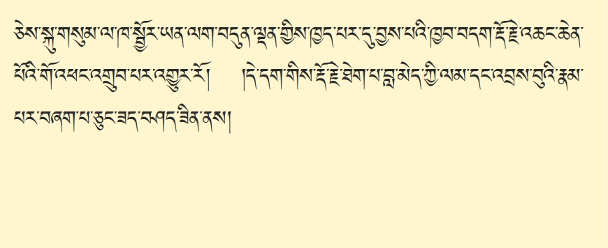སྤྱི་དོན་གཉིས་པ་མདོར་བསྡུས་ཏེ་གདམས་པ་ལ་བཞི་ལས། དང་པོ་ལམ་གྱི་གཞི་ངེས་འབྱུང་གི་བསམ་པ་བསྐྱེད་དགོས་པའི་ཚུལ་བསྟན་པར་གྱུར་བ་འདི་རེད་དུས། དེ་ནི། མདོར་་་་འདིའི་སྣང་ཤས་རབ་ལྡོག་ནས། །ཐར་པའི་གོ་འཕང་དོན་གཉེར་བ། །འདི་ནི་ལམ་རྣམས་ཀུན་གྱི་གཞི། །ཞེས་པ་སྟེ། མདོར་ན།
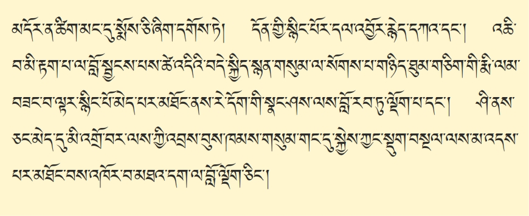གོང་དུ་བཤད་པ་དེ་ལྟ་བུའི་ཚིག་གི་སྤྲོས་པ་མང་དུ་ཞུས་པ་ཅི་དགོས་ཏེ། དོན་སྙིང་ཉམས་སུ་ལེན་པ་དེ་ཉིད་ལ། བླ་མའི་མན་ངག་གི་སྙིང་པོ་དགོས་པ་ཡིན་པའི་ཕྱིར་ན། དོན་གྱི་སྙིང་པོ། མདོ་སྔགས་ཐུན་མོང་གི་ལམ་དུ་འགྱུར་བ་ཐེག་༺པ་ཆེ་ཆུང་༻ཐུན་མོང་གི་༺དངོས་པོ།༻ ངོ་བོ་དལ་བ་བརྒྱད་ལ། ཁྱད་པར་གྱི་ཆོས་འབྱོར་བ་བཅུ་དང་ལྡན་པའི་མི་ལུས་རིན་པོ་ཆེ་དེ་ཉིད། རྒྱུ་དང་དཔེ་དང་གྲངས་གསུམ་གྱི་སྒོ་ནས་རྙེད་དཀའ་བ་དང་། རྙེད་པ་འདིའི་སྟེང་ནས། དམ་པའི་ཆོས་ལེ་ལོ་དང་ཕྱི་བཤོལ་གྱི་དབང་དུ་མ་ཤོར་བར། ཉིན་མཚན་རྟག་པར་མི་བརྗེད་པའི་སྒོ་ནས་བརྩོན་འགྲུས་རྩོམ་པར་མ་བྱས་ན། ཕྱིར་སྣོད་ཀྱི་འཇིག་རྟེན། ནང་བཅུད་ཀྱི་སེམས་ཅན། བར་དུ་༺སྐྱེ་དགུ་ཚུལ་ཆད་༻གང་ན་ཡང་། རྟག་པ་དང་བརྟན་པ་མེད་པ། ་་་རི་གཟར་ཅན། གློག། བར་སྣང་ལ་༺རི་གཟར་་་་་བབས་གདའ་༻དང་། བར་སྣང་གི་གློག་ལྟར་དུ་ཡིན། འཆི་བ་མི་རྟག་པ་འདིས་བསྐུལ་མ་བཏབ་ན། དེ་ནས། འཆི་བ་སྙིང་ལ་གཟུགས་ཚར་ནས། ཆོས་པ་རྣམ་པར་དག་པ་རང་ཤུགས་ཀྱིས་འོང་རྒྱུ་རེད་དུས། དེ་ནས། འཆི་བ་མི་རྟག་པ་ལ་བློ་སྦྱོང་བར་བྱས་ན། ཐོག་མ་ཉིད་དུ། འཇིག་རྟེན། ཚེ་འདི་ཡི་འཇིག་རྟེན་ཆོས་བརྒྱད་ཀྱི་བྱ་བ་ཡིས། དེ་ནས། ཟས། གོས། ནོར། ལོངས་སྤྱོད་ཀྱི་བདེ་བ་དང་། སྐྱིད་པ་དང་། སྙན་པར་གྲགས་པ་གསུམ་ལ་སོགས་པ། མདོར་ན་འཇིག་རྟེན་གྱི་ཆོས་བརྒྱད་བྱ་བ་ཐམས་ཅད་སྙིང་པོ་གང་ཡང་མེད་པར། རྨི་ལམ་དང་སྒྱུ་མ་ལྟ་བུས་གཉིད་ཐུམ་གཅིག་གི་རྨི་ལམ་བཟང་བ་ལྟར་སྙིང་པོ་མེད་པ་མཐོང་ནས། འཇིག་རྟེན་ཆོས་བརྒྱད་ཀྱི་བྱ་བ། དེ་ནས། དང་པོ་མི་འགྲུབ་ཀྱི་སྡུག་བསྔལ། བར་དུ་༺སྤེལ་༻མི་ཐུབ་པའི་སྡུག་བསྔལ། ཐ་མར་གྲུབ་ནའང་། ༺ཆགས་སྡང་གི་༻སྡུག་བསྔལ་མང་པོ་ཡོད། དེ་དག་རེ་དོགས་གི་སྣང་བ་ལས་བློ་ལྡོག་ཏེ། བློ་རབ་ཏུ་ལྡོག་པར་འགྱུར་ན། དེ་ནས། ས་སྐྱ་པའི་རྗེ་བཙུན་བརྩེ་བ་ཆེན་པོ་ལ། འཇམ་དཔལ་དབྱངས་ཀྱི་ཞལ་གདམས་ཞེན་པ་བཞི་དང་བྲལ་བ་ལས་ཡང་། ཚེ་འདི་ལ་ཞེན་ན་ཆོས་པ་མིན། །ཟེར་མཁན་འདི་རུ་འགྱུར་བ་དང་། ལུས་དང་སེམས་གཉིས་སོ་སོར་བྲལ་ནས་ཤི་ཚར་ན། དེ་ནས། མེ་ཤི་བའམ་ཆུ་བསྐམས་པ་ལྟ་བུ་མ་རེད། མེད་དུ་འགྲོ་ཡི་མ་རེད། དེ། རང་གི། གང་རེད་ཟེར་ན། ཤུལ་དུ་ལུས་པ་དེ་ལ། འཇིག་རྟེན་ཚེ་དེ་ཡི་གཅེས་པར་བསྐྱངས་བའི་ལུས་དང་ཟས་གོས་ལོངས་སྤྱོད་དང་བཅས་པ་བཞག་ནས། རྣམ་པར་ཤེས་པ་གཅིག་པུ་དེ། བར་དོའི་འཕྲང་ལ་༺སྦྲགས་ནས༻འགྲོ་དགོས་རེད། འདི་ཡིན་ནའང་། དེའི་རྗེས་སུ། ལས་དགེ་སྡིག་གང་བྱས་པ་དེ་ཐམས་ཅད་ལུས་དང་སྒྲིབ་མ་བཞིན་དུ། ས་བླ་མཐོན་པོར་གཤེགས་པའི་མཁའ་ལྡིང་གི། །གྲིབ་མ་རེ་ཞིག་ལྟ་བར་མི་མངའ་ཡང་། །གཟུགས་ཅན་ཉིད་དང་འདུ་འབྲལ་སྤོང་བ་ཡིས། །ཚོགས་ཤིང་དུས་ལ་བབས་ཚེ་ལྷག་པར་མངོན། །གསུངས་པ་དང་། ལུས་ཅན་རྣམས་ཀྱི་ནས་རྣམས་ནི། །བསྐདལ་པ་བརྒྱ་ཡང་ཆུད་མི་ཟ། །ཚོགས་ཤིང་དུས་ལ་བབས་པའི་ཚེ། །འབྲས་བུ་ཉིད་དུ་སྨིན་པར་འགྱུར། །ཞེས་པ࿏་ལྟ་བུ་ཡིན་པས་ན། ཐོག་ཏུ་མཐོ་རིས་གསུམ་གྱི་བདེ་སྐྱིད་ལོངས་སྤྱོད་དང་། དམའ་བ་ངན་སོང་གསུམ་གྱི་སྡུག་བསྔལ་ཐམས་ཅད་མེད་པར། ལས་ལས་བྱས་པ་ཡིན་ལ། མདོར་ན། མཐོ་སྲིད་པའི་རྩེ་མོ་ནས། དམའ་ན་རཀ་དམྱལ་ཁམས་ཡན་ཆོད་དང་དུ་སྐྱེས་ཀྱང་། དེ་ནས། ངན་སོང་གསུམ་པོ་ནི། སྡུག་བསྔལ་གྱི་སྡུག་བསྔལ། ལྷ་དང་མི་གཉིས་པོ་དེ་ལ། འགྱུར་བའི་སྡུག་བསྔལ། ལྷ་གོང་མ་ཐམས་ཅད་ཁྱབ་པ་འདུ་བྱེད་ཀྱི་སྡུག་བསྔལ་ལས་མ་འདས་པར་མཐོང་ནས། དེ་ནས། ནང་པ་སངས་རྒྱས་པའི་ཆོས་ཀྱི་རྩ་བ། ཁམས་གསུམ་འཁོར་བ་དེ་དུག་གི་ཟས་ལྟ་བུའི་རང་བཞིན࿏་དུ࿏་མཐོང་ན་ངེས་འབྱུང་རེད་དུས། དེའི་ཕྱིར་ན། ངེས་འབྱུང་ཡག་དག་པ་ཞིག་མེད་ན། མདོ་སྔགས་གཉིས་ཀྱི་ལམ་ནས་ལམ་གྱི་གཞི་རྟེན་གཏན་ནས་འཚུགས་རྒྱུ་མ་རེད་དུས། འཁོར་བ་མཐའ་དག་གི་སྙིང་པོ་ལ་བློ་ལྡོག་ཅིང་།
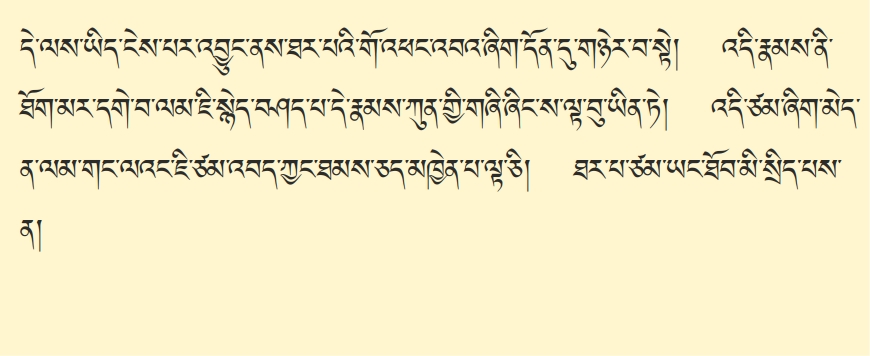འཁོར་བའི་སྡུག་བསྔལ་དེ་ལས་ནམ་ཞིག་ཐར་ན་བསམ། གསོན་པོ་མེ་དོང་དུ་བཅུག་པ་ལྟ་བུ། ཡིད་༺མཆོག་ཏུ་ངེས་པ་༻ཞིག་ཡོད་ན། ཆོས་པ་རྣམ་དག་མ་འོངས་པའི་ཐབས་ཅིག་ཡོད་རྒྱུ་མ་རེད་དུས། དེའི་ཕྱིར་ན། འཁོར་བ་དེ་ལས་ཡིད་ངེས་པར་འབྱུང་ནས། ཁམས་གསུམ་འཁོར་བ་སྡུག་བསྔལ་གྱི་རང་བཞིན་ཤེས་ཚར་ན། དེ་ནས། དོན་དུ་གཉེར་བྱ་ཐར་པ་དང་། ཐམས་ཅད་མཁྱེན་པའི་གོ་འཕང་མ་གཏོགས་གཞན་ཡོད་རྒྱུ་མ་རེད་དུས། ཐར་པའི་གོ་འཕང་འབའ་ཞིག་དོན་དུ་གཉེར་བ་སྟེ། དེ་ནས། འདི་རྣམས་ལ། ཐོག་མར། དམ་པའི་ཆོས་ནི་ཐོག་མར་དགེ་བ། བར་དུ་དགེ་བ། ཐ་མར་དགེ་བ་གསུང་དུས། འདི་རེད་དུས། དེ་ནས། ཐོག་མར་དགེ་བ་ལ། འཇིག་རྟེན་ཚེ་འདི་མཐོང་༺གཤིས་༻ལས། བློ་ལྡོག་པ་དང་། ཁམས་གསུམ་འཁོར་བ་སྡུག་བསྔལ་གྱི་རང་བཞིན་ཤེས་པ་དེ་དག་རེད་ན། ཆོས་པ་ཡང་དག་པ་གང་འདོད་དང་། དཔེར་ན། མཁར་ཆེན་པོ་ཞིག་བརྩིག་དགོས་ན། རྨང་ཡག་པོ་ཞིག་རེད་སོང་རྫི་རེད་དུས། དེའི་ཕྱིར་ན། ཇི་སྐད་བཤད་པ་དེ་རྣམས་ཀྱིས། ཀུན་གྱི་གཞི་འདིང་བར་མ་བྱས་ན། ཆོས་དངོས་གཞི་ལས་ཀྱང་སྔོན་འགྲོ་ཟབ་ཟེར་མཁན་འདི་རེད་དུས། དེ་ནས། ༺ང་ཚོ་༻དངོས་གཞིའི་ཉམས་མྱོང་རྒྱུད་ལ་སྐྱེ་བར་བྱེད་པ་དེ་ལའང་། སྔོན་འགྲོ་ཡི་རྡུལ་སྦྱོང་ཞིག་མ་སོང་ན། ཚེ་རབས་ཐོག་མེད་ནས་ད་ལྟ་ཡན་ཆོད་དུ་འཁྲུལ་པ་འབའ་ཞིག་ལ་གོམས་སོང་རྫི་འདི་ཡིས། བློ་ཕྱིན་ཅི་ལོག་པ་༼ལས་༽༺ངན་ངར་༻ཆེ་བསྡད་པ་འདི། སྔོན་འགྲོ་ཞིག་གིས࿏་མ་ཐུབ་ན། དངོས་གཞི་༺ཆིངས་པོའི་༻རྣལ་འབྱོར་གནད་དུ་འགྲོ་བ་ཞིག་རེད་རྒྱུ་མ་རེད་དུས། གཞི་གཏིང་བས་ན། དེ་ནི་ཞིང་ས་༺སྐྱོང་པ་༻བ་ལྟ་བུ་ཡིན་ཏེ། དེའི་ཕྱིར་ན། ངེས་འབྱུང་དང་། ཚེ་འདིའི་སྣང་བ་ལ་བློ་ལྡོག་པ་དང་། འཆི་བ་མི་རྟག་པ་ཙམ་ཞིག་མེད་ན། དེ་ནས། མདོ་ཡིན་ནའང་འདྲ། སྔགས་ཡིན་ནའང་འདྲ། རྫོགས་པ་ཆེན་པོ་དང་ཕྱག་རྒྱ་ཆེན་པོའི་ལམ་གང་ལ་ཡང་ཇི་ཙམ་འབད་ཀྱང་། ཐམས་ཅད་མཁྱེན་པ། འབྲས་བུ་སངས་རྒྱས་ཀྱི་གོ་འཕང་ལྟ་ཅི། ཐར་པ་ཙམ་ཡང་ཐོབ་མི་སྲིད་པས་ན།
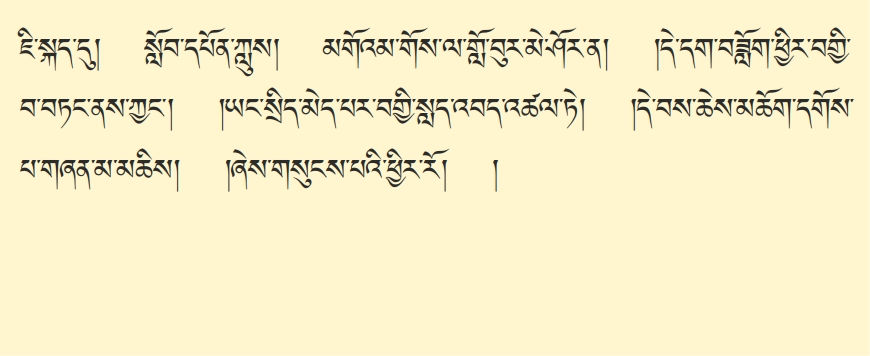ཇི་སྐད་དུ། སློབ་དཔོན་ཀླུ་སྒྲུབ་ཀྱིས། མགོའམ་གོས་ལ་གློ་བུར་མེ་ཤོར་ན། །དེ་དག་བཟློག་ཕྱིར་བགྱི་བ་བཏང་ནས་ཀྱང་། །ཡང་སྲིད་མེད་པར་བགྱི་སླད་འབད་འཚལ་ཏེ། །དེ་བས་ཆེས་མཆོག་དགོས་པ་གཞན་མ་མཆིས། །གསུངས། གང་ཟག་རབ་འགྱུར་བ་ཡིན་ན། ཁམས་གསུམ་འཁོར་བ་ལས་༺རྒྱ་ཆོད་༻དེ། ཐར་པ་དང་ཐམས་ཅད་མཁྱེན་པའི་ལམ་ཡང་དག་པ་ཞིག་ལ་བརྩོན་པར་བྱུང་ནས། ཆོས་མཐར་ཐུག་དེ་ཡིན་པས་དེ་ལྟར་དུ་བརྩོན་པ་གལ་ཆེ་བ་ཡིན་ཟེར།
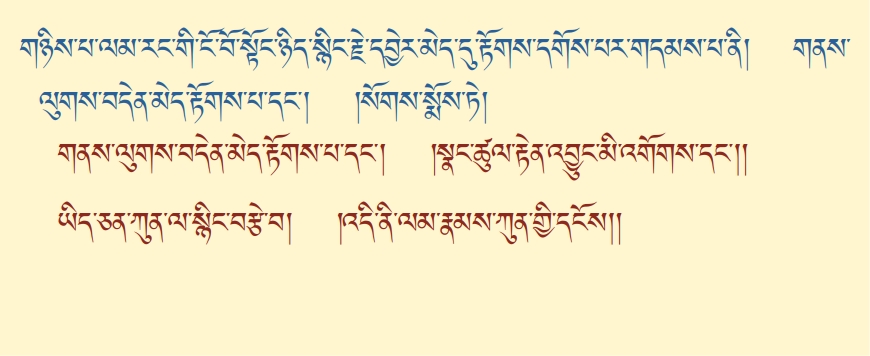དེ་ནས། གཉིས་པ་རང་གི་ངོ་བོ་སྟོང་ཉིད་སྙིང་རྗེ་དབྱེར་མེད་དུ་རྟོགས་དགོས་པར་གདམས་པར་འགྱུར་བ་དེ་རེད་དུས། དེ་ནི། གནས་ལུགས་བདེན་མེད་རྟོགས་པ་དང་། །སྣང་ཚུལ་རྟེན་འབྱུང་མི་འགོགས་པ། །ཡིད་ཅན་ཀུན་ལ་སྙིང་བརྩེ་བ། །འདི་ནི་ལམ་རྣམས་ཀུན་གྱི་དངོས། །ཟེར་དུས། དཱ། ལམ་གྱི་སྔོན་འགྲོ། ད་ལྟ་གོང་དུ་ཞུས་པ་ལྟར་དུ། སྤྱིར་དུ་དལ་འབྱོར་རྙེད་པར་དཀའ་བ། འཆི་བ་མི་རྟག་པ། ངེས་འབྱུང་བསམ་པ་གསུམ་པོ་འདི་རེད། དཱ། ལམ་གྱི་གཞུང་ཆིངས་ངོ་མ་དེ་ནི་གང་ཡིན་༼ན་༽ཟེར་ན།
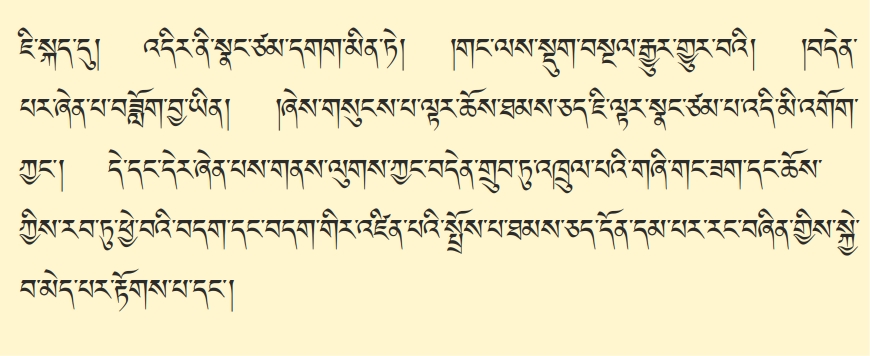ཇི་སྐད་དུ། འདིར་ནི་སྣང་ཙམ་དགག་མིན་ཏེ། །གང་ལས་སྡུག་བསྔལ་རྒྱུར་གྱུར་བའི། །བདེན་པར་ཞེན་པ་བཟློག་བྱ་ཡིན། །ཟེར། འཇིག་རྟེན་ཀུན་རྫོབ་ཏུ། སྣང་བ་འདི་ལ࿏་རྒྱུ་མེད། འབྲས་བུ་མེད། རྟེན་ཅིང་འབྲེལ་བར་འབྱུང་བ་མེད་ཟེར། གཏན་ནས་༺གཙོ་བོའི་༻བུམ་པ་རྐྱང་པ་ལྟ་བུ་ཞིག་མ་རེད། དེ། འཇིག་རྟེན་ཚེ་འདིའི་མཐོང་བ་འདི། རྟག་པ་དང་། བརྟན་པ་ཡིན་པ་ཞིག་ཇི་ཙམ་འབྱོར་དགོས་ན། ཆོག་ཤེས་མེད་པ། ཡང་ནས་ཡང་དུ་ཅིག། ཆགས་སྡང་གི་ལས་མང་པོ་བསགས་པ་འདི། བདེན་འཛིན་དེ་དགག་དགོས་ལེ་རེད་དུས། འདི། བདེན་འཛིན་དགག་པར་བྱེད་པ་དེ་ལ། གོང་དུ་ཇི་སྐད་གསུངས་པ་ལྟར། ཆོས་དང་གང་ཟག་གི་བདག་མེད་པའི་སྟོང་པ་ཉིད་ཀྱི་སྒོ་ནས་ཡིན་པས་ན། ཆོས་རྣམས། ༺ཚུལ།༻ ཇི་ཙམ་རྟེན་འབྱུང་གི་སྣང་བ་འདི་མི་བཀག་ཀྱང་། དེ་དང་དེར་ཞེན་པའི། གནས་ལུགས་ཀྱང་བདེན་གྲུབ་དུ་འཁྲུལ་དེ་སྲིད། བདེ་གཤེགས་སྙིང་པོ་ཡིས། སེམས་ཅན་ཀུན་ལ་ཏིལ་ལ་མར་བཞིན་དུ་ཁྱབ་ཡོད་རེད་དེ། འཁྲུལ་པའི་སྣང་བ་འདི་ཤུགས་ཆེ་སོང་རྫི་ཡིས། མཁྲིས་པའི་ནད་ཟིན་པའི་གང་ཟག་ཅིག་གིས། དུང་འདི་སེར་པོ་རེད་བསམ་བསྡད་མཁན་ལྟ་བུ་ཡིས། འདི། ཁམས་གསུམ་འཁོར་བའི་བདེ་སྡུག། གནས་རིས་དེ་ཐམས་ཅད་བདེན་པ་ཡོད། རྟག་པ་ཡོད། དེ་ནས། ཇི་ཙམ་ཞིག་གི་བར་དུ་སྒྲུབ་བསྡད་ན་ཡང࿏་། ཆོག་ཤེས་མེད་པ། ༺འདི་ཐོབ་པའི་དོན་དུ། ཉོན་མི་གདའ། སེམས་མི་ཉེན།༻སྒྲུབ་བསྡད་ན། ཆོག་ཤེས་མེད་པར་འགྱུར་བས། འདི། ཞེན་པ་འདི་དགག་རྒྱུ་རེད། འདི། ཞེན་པ་འདི་མ་བཀག་ནས་བཟུང་སྟེ། གནས་ལུགས་སྒྲ་ཇི་བཞིན་དུ་རྟོགས་རྒྱུ་ཞིག་གཏན་ནས་འོང་གི་མ་རེད། སྟོང་ཉིད་མངོན་སུམ་དུ་རྟོགས་ཚར་ནས། སྣང་ཆ་ཐམས་ཅད་སྒྱུ་མ་དང་། རྨི་ལམ་ལྟ་བུ་མི་ཤར་བའི་ཐབས་ཡོད་རྒྱུ་མ་རེད་དུས࿏། དེའི་ཕྱིར་ན། གནས་ལུགས་བདེན་གྲུབ་ཏུ་འཁྲུལ་པའི་གཞི། གང་ཟག་གི་བདག་དང་། ཆོས་ཀྱི་བདག་གིས་རབ་ཏུ་ཕྱེ་བའི་བདག་དང་བདག་གིར་འཛིན་པའི་སྤྲོས་པ་ཐམས་ཅད་དོན་དམ་པར་རང་བཞིན་གྱིས་སྐྱེ་བ་མེད་པ་དང་ནི། སྣང་ཚུལ་ཀུན་རྫོབ་ཀྱི་༺དབང་དུ་༻བྱས་ན། འཇིག་རྟེན་པ་རྣམས་ལ་ཇི་ལྟར་གྲགས་པ་བཞིན་དུ། རང་རང་གི་རྒྱུ་རྐྱེན་དེ་ལ་བརྟེན་ནས་༼འབྱུང་བ་སྟེ།༽འབྱུང་བའི་ཕྱིར་ན། ལས་དང་ལས་ཀྱི་འབྲས་བུ་ལ་སོགས་པ་དེ་ཉིད་ལ་ནི། དེ་ནས། མི་འགོག་པར་ཇི་ལྟར་སྣང་བ་བཞིན་དུ་བདེན་ཏེ། རྟོགས་པ་ནམ་མཁའ་བས་མཐོ་ན། རྒྱུ་འབྲས་ཀྱི་བག་ཕྱེ་བས་ཞིབ་ཟེར། ལས་དང་ལས་ཀྱི་འབྲས་བུ་ལ་ཡིད་ཆེས་ཀྱི་དད་པ་བརྟན་པོ་ཡིས་དགེ་སྡིག་བླང་འདོར་བྱ་བ། ཆོས་བྱེད་པ་དང་། དེ་ནས། དེ་ལྟ་བུའི་གནས་ལུགས་ཡང་དག་པ་སྒྲ་ཇི་བཞིན་པ་དང་། འཇིག་རྟེན་ཚེ་འདིའི་སྣང་བ་ཁོ་ན་ལ࿏་ཞེན་བསྡད་རྫི་ཡི་སེམས་ཅན་རྣམས། ཆོས་ཉིད་མ་རྟོགས་པའི་ཡིད་ཅན་རྣམས་ལ། བརྩེ་བའི་སྙིང་རྗེ་ཆེན་པོ། ཟུང་དུ་འཇུག་པ་ཡི་སྒོ་ནས་རྗེས་སུ་བརྩེ་བས། ལུས་ངག་ཡིད་གསུམ་གྱི་བྱ་བ་ཅི་བྱས་ནའང࿏་། མཁའ་ཁྱབ་ཀྱི་སེམས་ཅན་འདི་ཐམས་ཅད་རང་གི་ཕ་མར་འགྱུར་བ་རེད། ད་ལྟ་སྡུག་བསྔལ་གྱིས་མནར། ༺ཆགས་སྡང་༻རང་རྒྱུད་པ་ལ་སྤྱོད། སྨྱོན་པ་ཐང་དུ࿏་ལྷུང་བ་ལྟ་བུ་རེད་དུས། འདི་ཐམས་ཅད་ཐར་པའི་ལམ་དུ། བདག་གིས་ག་འདྲ་བྱས་བཀོད་ནུས་ན། ཅི་མ་རུང་སྙམ་པའི་གཞན་དོན་འགྱུར་བའི་ཐབས་ལ་དམིགས་པ་སྟེ། འདི་ནི་བར་དུ་དགེ་བ་ལམ་ཇི་སྙེད་བཤད་པ་ཟེར། མདོ། སྔགས། རྫོགས་པ་ཆེན་པོ། ཕྱག་རྒྱ་ཆེན་པོ་ཇི་ལྟར་བསྒོམས་ནའང་། དེ་ཐམས་ཅད། འདིའི་རང་བཞིན་ལས་འདས་རྒྱུ་མ་རེད་དུས། དེ་རྣམས་ཀུན་གྱི་དངོས་གཞིའི་ས་བོན་ལྟ་བུ་ཡིན། དཔལ་ལྡན་ཟླ་བ་གྲགས་པས། ཉན་ཐོས་སངས་རྒྱས་འབྲིང་རྣམས་ཐུབ་དབང་སྐྱེས། །སངས་རྒྱས་བྱང་ཆུབ་སེམས་དཔའ་ལས་འཁྲུངས་ཤིང་། །
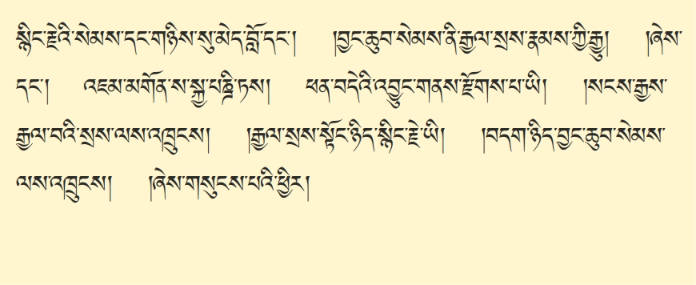སྙིང་རྗེའི་སེམས་དང་གཉིས་སུ་མེད་བློ་དང་། །བྱང་ཆུབ་སེམས་ནི་རྒྱལ་སྲས་རྣམས་ཀྱི་རྒྱུ། །ཞེས་པ་དང་། འཇམ་མགོན་ས་སྐྱ་པཎྜི་ཏས། ཕབ་བདེའི་འབྱུང་གནས་རྫོགས་པ་ཡི། །སངས་རྒྱས་རྒྱལ་བའི་སྲས་ལས་འཁྲུངས། །རྒྱལ་སྲས་སྟོང་ཉིད་སྙིང་རྗེ་ཡི། །བདག་ཉིད་༼ཆེན་༽བྱང་ཆུབ་སེམས་ལས་འཁྲུངས། །ཞེས་གསུངས་པས་ན། དེ་ལྟ་བུ་༼ལས་༽ལས་ཀྱང་ཡང་ནས་ཡང་དུ་གོམས་པར་བྱས་ན། དེ། མི་ཕམ་གྱིས་ལམ་ཐམས་ཅད་ལམ་གནད་གཅིག་ཏུ་བསྒྲིལ་ཏེ། རྣམ་པར་གྲོལ་བའི་ལུང་འཐོབ་པར་འགྱུར་བའི࿏་༼དགོས་༽དགོས་པ་ཡོད་པའི་ཕྱིར་ན། ལམ་གྱི་རང་བཞིན་གྱི་ངོ་བོ་བསྟན་པ་དང་།
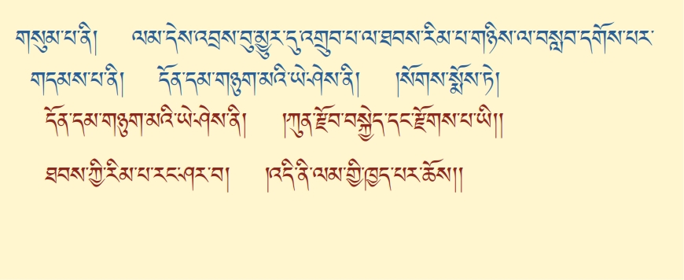དཱ། གསུམ་པ་དེ་ལྟ་བུས། ༼སྔོན་་་་༽ཐོག་མར་དགེ་བ། བར་དུ་དགེ་བའི་ལམ་དེ་བརྩམས་ན། འབྲས་བུ་མྱུར་དུ་འགྲུབ་པ་ལ་ཐབས་རིམ་པ་གཉིས་ལ་བསླབ་དགོས་པའི࿏་ཚུལ་གྱིས་བསྟན་པར་གྱུར་བ་དེ་ནི། དོན་དམ་གཉུག་མའི་ཡེ་ཤེས་ནི། །ཀུན་རྫོབ་བསྐྱེད་དང་རྫོགས་པ་ཡི། །ཐབས་ཀྱི་རིམ་པ་རང་ཤར་བ། །འདི་ནི་ལམ་གྱི་ཁྱད་པར་ཆོས། །
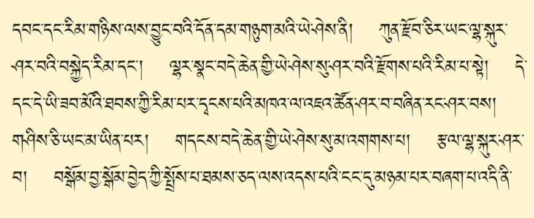ཞེས་པ་དེ། གོང་ནས་བཤད་པ་ལྟ་བུས། ཐོག་མར་སྨིན་བྱེད་ཀྱི་དབང་། དེ་ནས། གྲོལ་བྱེད་ཀྱི་བསྐྱེད་རིམ་དང་རྫོགས་རིམ་གྱི་རིམ་པ་གཉིས་ལས་བྱུང་བའི་མཐར་ཐུག་གི་རྟོགས་དོན་གང་རེད་ཟེར་ན། དོན་དམ་གཉུག་མ་ལྷན་ཅིག་སྐྱེས་པའི་ཡེ་ཤེས་དེ་ཉིད་མངོན་སུམ་དུ་འགྱུར་ན། ཀུན་རྫོབ་ཀྱི་སྣང་གྲགས་རིག་པའི་ཆོས་ཇི་ལྟར་སྣང་བ་ཐམས་ཅད་ལྷ་སྔགས་ཆོས་སྐུའི࿏་རོལ་པ་རུ་ཤར་བའི་བསྐྱེད་རིམ་དང་། དེ་ནས། ལྷ་སྔགས་ཆོས་སྐུའི࿏་རོལ་པ་དེའང་རང་བཞིན་གྱིས། འདོད་ཁམས་གཟུགས་ཁམས་ཀྱི་ལྷ་ལྟ་བུ་མ་ཡིན་པར། ལྷ་སྣང་དེ། མཆོག་ཏུ་མི་འགྱུར་བའི་བདེ་བ་ཆེན་པོའི་ཡེ་ཤེས་ཟེར། ཤར་བར་གྱུར་བས་བདེ་གསལ་མི་རྟོགས་པའི་རྫོགས་པའི་རིམ་པ་སྟེ། དེ་ལྟ་བུའི་བསྐྱེད་པ་དང་རྫོགས་པའི་རིམ་པ་དེ་དང་དེ་ལའང་། གེགས་སེལ་བ། བོགས་འདོན་པ། རང་རང་གི་ལམ་གྱི་འབྲས་བུ་མངོན་དུ་འགྱུར་བའི་ཐབས་ཀྱི་རིམ་པ་ཐམས་ཅད་དྭངས་པའི་མཁའ་ལ་འཇའ་ཚོན་ཤར་བ་བཞིན་དུ། གཅིག་གྲོགས་གཅིག་གིས་བྱས་ཏེ། ལམ་ཐམས་ཅད་གོ་ས་མེད་པར་རང་ཤར་བས། ཆོས་ཉིད་ངོ་བོ་མཐར་ཐུག་པ་མངོན་སུམ་དུ་རྟོགས་ན། གཤིས་ཅི་ཡང་མ་ཡིན་པར། གདངས་བདེ་ཆེན་གྱི་ཡེ་ཤེས་སུ་ཤར་བ་མི་འགགས་པ། རྩལ་ལྷ་སྐུར་ཤར་བ། བསྒོམ་བྱ་སྒོམ་བྱེད་ཀྱི་སྤྲོས་པ་ལས་འདས་པའི་ངང་དུ་མཉམ་པར་བཞག་པ་འདི་ནི་
ཐ་མར་དགེ་བ་ལམ་གྱི་འབྲས་བུ་མྱུར་དུ་འགྲུབ་པའི་ཐབས་ཟབ་མོ་སྟེ། ལོ་ཏོག་ལ་སྔགས་ཀྱིས་བཏབ་པའི་མྱུར་དུ་སྨིན་པ་ལྟ་བུའི་ཁྱད་པར་གྱི་ཆོས་ཡིན་ཏེ། སློབ་དཔོན་ཀླུས། བསྐྱེད་པའི་རིམ་ལ་ལེགས་གནས་ཤིང་། །རྫོགས་པའི་རིམ་པར་འདོད་རྣམས་ཀྱི། །ཐབས་འདི་རྫོགས་པའི་སངས་རྒྱས་ཀྱིས། །སྐས་ཀྱི་གདང་བུ་ལྟ་བུར་གསུངས། །ཞེས་གསུངས་པ་ལྟར་དུ། དཱ། ལམ། མ་རྩ། གང་ཟག་སྦྱོང་བ་སྔོན་དུ་སོང་བ་ལས་གཅིག་ཆར་བ་དང་། སྔོན་དུ་མ་སོང་བ་ལས་རིམ་གྱིས་པ་ཟེར་གཉིས་ཡོད་རེད་དེ། རིམ་གྱིས་པའི་ལམ་ལྟར་དུ་བཤད་ན། ཅིག་ཆར་བ་ཡང་། དེ་ལ་བརྟེན་ཏེ་ལམ་བདེ་བླག་ཏུ་རྟོགས་འགྲོ་ཡི་རེད། དེ་ནས། རིམ་གྱིས་པ་ཡིན་ན། ད་ལྟ་ཐོག་མཐའ་བར་གསུམ་དུ་དགེ་བའི་ལམ་གྱི་སྙིང་པོ་མདོར་བསྡུས་པ་འདི་ཚུལ་བཞིན་དུ་ཉམས་སུ་བླངས་ན། དེ་ནས། གསར་རྙིང་རིས་སུ་མ་ཆད་པའི་བསྟན་ཆོས་ཆེན་པོ་རྣམས་ལ་ལམ་རིམ་མེད་པ་གཅིག་ཡོད་མ་རེད་དེ། ལམ་རིམ་ཐམས་ཅད་ཀྱི་སྙིང་པོ། དོན་བསྡུས་བཞག་ན། ཚིག་ཉུང་ཉུང་། དོན་ཟབ་མོ། དེ་ཙམ་ཞིག་ཐུགས་ལ་ངེས་པ་རེད་སོང་ན། དེ་ནས། དོན་གནད་ཐམས་ཅད་ཚུལ་བཞིན་དུ་༺སྤྱད་དེ།༻བླ་མའི་མན་ངག་ཟེར་མཁན་འདི། ཅིག་གོ་སོང་ན། བྱ་སླ། ཚེགས་ཆུང་། མན་ངག་གོ་སོང་ན་འཕྲལ་དུ་ཐོས་བསམ་བྱ་སླ་བ། ཚེགས་ཆུང་ཆུང་ཞིག་གིས། མཐར་ཐུག་གི་འབྲས་བུ་མངོན་དུ་ཐོབ་པ་ལས། མན་ངག་ཟེར་འདི། དེ་ལྟ་བུའི་༺ཐུགས་༻ཀྱི་རིམ་པ་རྒྱུད་ལ་ངེས་པར་ཞུའོ།། །།
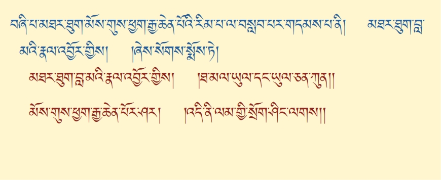་་་རྣམ་མཁྱེན་བླ་ན་མེད་པ་ཡང་དག་པ་རྫོགས་པའི་སངས་རྒྱས་ཀྱི་གོ་འཕང་རིན་པོ་ཆེ་ཐོབ་པར་བྱ། དེའི་ཕྱིར་དུ། དམ་པའི་ཆོས་ཟབ་མོ་གསན་ནས། དོན་ཚུལ་བཞིན་ཉམས་སུ་བཞེས་པར་བགྱིའོ་སྙམ་པ་བསམ་པ་རྒྱ་ཆེ་བ་བྱང་ཆུབ་མཆོག་ཏུ་ཐུགས་བསྐྱེད་པ་དང་། ཆོས་གསན་པའི་ཀུན་ཏུ་སྤྱོད་པའང་། མདོ་རྒྱུད་བསྟན་བཅོས་དྲི་མ་མེད་པ་རྣམས་ལས་ཇི་སྐད་གསུངས་པ་བཞིན་དུ་ལེགས་པར་གསལ་བཏབ་སྟེ་གསན་པར་གནང་བར་ཞུ། དེའང་་་་་གང་གསན་པར་བྱ་བའི་ཆོས་ཀྱི་རིམ་པ་ནི། མདོ་སྔགས་ཀྱི་ལམ་མ་བསྡུས་པ་རྣམས࿏་༺གཞུང་ལུགས་༻གཅིག་ཏུ་འགྲུབ་པ་སྟེ། ལམ་གྱི་རིམ་པ་བདུད་རྩི་སྙིང་པོ་ཞེས་བྱ་བ་ཀུན་མཁྱེན་བླ་མ་མཁྱེན་བརྩེ་དབང་པོས་མཛད་པ་དེ་ཉིད་ཀྱི་འཆད་ཁྲིད་འབུལ་བར་བྱེད་པ་དེ་ལ། ཐོག་མར་རྩོམ་པ་ལ་འཇུག་པ་སླད་ཀྱི་དོན་སོང་ཟིན་ཏེ། བརྩམ་པར་༼མཐར་༽བྱ་བ་གཞུང་གི་དོན་བཤད་པར་འགྱུར་བ་དེ་ཉིད་ལ་ཡང་གཉིས། རྒྱས་པར་བཤད་པ་དང་། མདོར་བསྡུས་ཏེ་བསྟན་པ་གཉིས་ཡོད་པའི་ནང་ནས། དང་པོ་རྒྱས་པར་བཤད་པ་དེ་ཉིད་སོང་ཟིན་ཏེ། གཉིས་པ། སྤྱི་དོན་གཉིས་པ་མདོར་བསྡུས་ཏེ་གདམས་པ་ལ་བཞི་ལས། དང་པོ་ལམ་གྱི་གཞི་ངེས་འབྱུང་གི་སྒོ་ནས་བསམ་པ་བརྟན་པོ་བསྐྱེད་དགོས་པ་དང་། ལམ་རང་གི་ངོ་བོ་སྟོང་ཉིད་སྙིང་རྗེ་ཟུང་འཇུག་སྒོམ་པ་དང་། ལམ་དེས་འབྲས་བུ་མྱུར་དུ་འགྲུབ་པར་བྱེད་པའི་ཐབས་སོང་ཟིན་ཏེ། བཞི་པ་མཐར་ཐུག་མོས་གུས་ཕྱག་རྒྱ་ཆེན་པོའི་ལམ་ལ་བསླབ་པའི་ཚུལ་བསྟན་པར་འགྱུར་བ་དེ་རེད་དུས། དེ་ནི་ཡང་། མོས་གུས་ཕྱག་རྒྱ་ཆེན་པོའི་ངང་ལྷག་པར་སྒོམ་པའི་ཚུལ་བཤད་པ་དེ་ཉིད་རེད་དུས། མཐར་ཐུག་བླ་མའི་རྣལ་འབྱོར་གྱིས། །ཐ་མལ་ཡུལ་དང་ཡུལ་ཅན་ཀུན། །མོས་གུས་ཕྱག་རྒྱ་ཆེན་པོར་ཤར། །འདི་ནི་ལམ་གྱི་སྲོག་ཤིང་ལགས། །ཞེས་པས་སྨོས་པ་སྟེ།
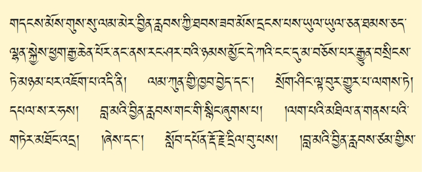དེ་ལྟར་རྒྱུ་མཚན་ཉིད་ཐེག་པ་དང་། འབྲས་བུ་གསང་སྔགས་རྡོ་རྗེ་ཐེག་པའི་ལམ་ཐམས་ཅད་ཀྱི་མཐར་ཐུག་པ་ནི། དེ་ནས། ཉམས་སུ་ལེན་བྱ་གང་ཡིན་ཟེར་ན། རྒྱུ། སེམས་ཅན་ཐམས་ཅད་ལ་བདེ་གཤེགས་སྙིང་པོས་ཁྱབ་བརྡལ་དུ་གནས་པའི་དུས་སུ། དེ་ཡི་ནུས་པ་དེ། ཚུར་སྨིན་པར་བྱེད་པ་དབང་ཞིག་བསྐུར་བའི་ཚེ་ན། དེ་ནས། གང་སྐུར་བ་པོའི་བླ་མ་དེ་ཉིད། དཀྱིལ་འཁོར་གྱི་གཙོ་བོ་གང་ཡིན་པ་འདིའི་སྐུར་བཞེངས་པ་བཞིན་དུ། ལམ་དུས་སུའང་། དེ་ནས། བླ་མ་༺ནི།༻རང་གི་ལྷག་པའི་ལྷ་ཡི་ཡི་དམ་གྱི་དཀྱིལ་འཁོར་དང་། གཙོ་བོ་དབྱེར་མེད་པ་སྐུ་བཞི་ཁྱབ་བརྡལ་ཆེན་པོ་བསྒོམ་པའི࿏་རྣལ་འབྱོར་གྱི་ཐབས་ཟབ་མོས་ཐ་མལ་གྱི་ཡུལ་སྣང་ཐམས་ཅད་བླ་མའི་སྐུ་གསུང་ཐུགས་སུ་ཤར་བ་དང་། སྐུ་གསུང་ཐུགས་ལ་དེ་དང་དེར་འཛིན་པའི་ཡུལ་ཅན་གཉུག་མའི་སེམས་འཁོར་དང་བཅས་པ་དེ་ཀུན་ཀྱང་། དོན་དམ་བླ་མའི་རྣལ་འབྱོར་གྱི་ཡེ་ཤེས་ཆེན་པོའི་ངོ་བོར་འཆར་བ་སྟེ། མདོར་ན་གཤིས་གསལ་རིག་ཏུ་ཆམ་མེ།
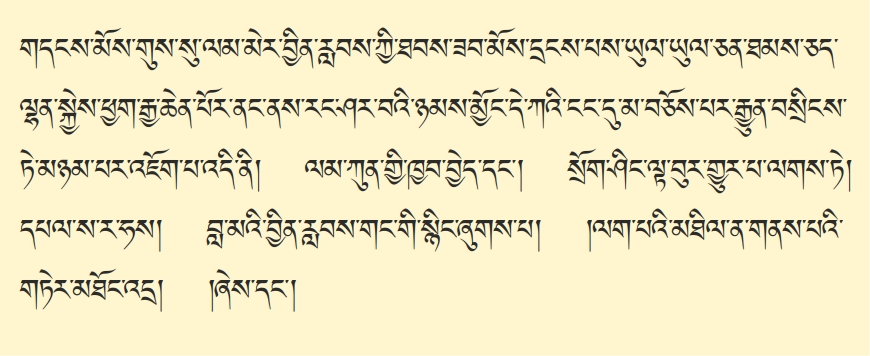གདངས་མོས་གུས་ལམ་མེ་བས། བྱིན་རླབས་ཀྱི་ཐབས་ལམ་ཟབ་མོས་དྲངས་པས་ཡུལ་དང་ཡུལ་ཅན་ཐམས་ཅད་ལྷན་སྐྱེས་ཕྱག་རྒྱ་ཆེན་པོར་ནང་ནས་འཆར་བའི་ཉམས་མྱོང་འདི་ཀའི་ངང་དུ་མ་བཅོས་པར་རང་རྒྱུན་བསྲིངས་ཏེ་མཉམ་པར་འཇོག་དགོས་ཏེ་ཞེས་པ་འདིའི་༺ནང་ན།༻དང་པོ་ཀུན་རྫོབ་ཕྱི་ཡི་བླ་མ་ལ་བརྟེན་ཏེ། དབང་བསྐུར། རྒྱུད་བཤད། མན་ངག་བསྟན། ཐར་པའི་ལམ་ལ་ཚུལ་བཞིན་དུ་འཛུགས་པར་མཛད་པ་དང་། དེ་ནས། བླ་མ་འདི་ཉིད་ཀྱི་ཞལ་གདམས་ལམ་དུ་བྱ་བའི་ཕྱིར་དུ། བསྐྱེད་རིམ་དང་རྫོགས་རིམ། དབང་བཞི་པོའི་ལམ་ཐམས་ཅད། བླ་མའི་ཡེ་ཤེས་ཀྱི་རོལ་པ། རྡོ་རྗེ་གསུམ་གྱི་ཆོ་འཕྲུལ་ལས་གཞན་མེད་པར་ཤེས་ཏེ། རྟག་ཏུ་ཉམས་སུ་ལེན་པ་དང་། མཐར་ཐུག། བླ་མའི་ཐུགས་རྒྱུད་ཀྱི་དགོངས་པ། སློབ་མའི་རྒྱུད་དུ་ཕོད་དེ། བླ་མ་དང་རང་སེམས་དབྱེར་མེད་གྱུར་ཚར་དུས། དེ་ནས། བློ་ལས་རུང་། བླ་མ་ཕྱི་རོལ་ན་མི་དགོས་གསུངས་པ་ལྟ་བུ་རང་གི་སེམས་ཉིད། གཉུག་མའི་ངོ་བོ་དེ་ཉིད་བླ་མའི་ཡེ་ཤེས་སུ་ཤར་བར་འགྱུར་བ་དེ་རེད་འོངས་ན། དེ་ནས། གཞི་ལམ་འབྲས་གསུམ་ཐམས་ཅད་ཀྱི། དེ་ན། ཉམས་སུ་ལེན་བྱ་ཡི་སྙིང་པོ་བླ་མའི་རྣལ་འབྱོར་ཡིན། བླ་མའི་རྣལ་འབྱོར་དེ་ལའང་། ལས་དང་པོ་པའི་ཀུན་རྫོབ་ཕྱི་ཡི་བླ་མའི་༼རྣལ་་་༽རྣལ་འབྱོར་ལ་བརྟེན་ཏེ་མོས་གུས་རྩལ་དུ་བཏབ། དེ་ནས། ལམ་ལ་བརྩོན་པའི་གང་ཟག་་་་བསྐྱེད་རྫོགས། རྫོགས་པ་ཆེན་པོའི་ལམ་གང་ཉམས་སུ་བླང་ནའང་། བླ་མའི་ཡེ་ཤེས་ཀྱི་རོལ་པ་ལས་གཞན་དུ་མེད་མཁན་ཞིག། ཡི་དམ་གྱི་བསྐྱེད་བཟླས་ལྟ་བུ་ཞིག་ཡིན་ནའང་། བླ་མ་དང་ཡི་དམ་དབྱེར་མེད་དུ་བསྒྲུབས་ན། མཆོག་དང་ཐུན་མོང་གི་དངོས་གྲུབ་ཐམས་ཅད་མྱུར་དུ་འགྲུབ་པར་འགྱུར་བ་དང་། དེ་ནས། རྫོགས་རིམ། རྡོ་རྗེ་གསུམ་གྱི་ཉམས་ལེན་བྱེད་ནའང་། བླ་མའི་སྐུ་གསུང་ཐུགས། བདེ་སྟོང་ཡེ་ཤེས་ཆེན་པོའི་རོལ་པ་ལས࿏་གཞན་དུ་མེད་པར་ཤེས་པ་དང་། དེ་ནས། མཐར་ཐུག་བླ་མ་རང་སེམས་དབྱེར་མེད། ལྷན་སྐྱེས་ཕྱག་རྒྱ་ཆེན་པོ། ༼རྒྱུད་་་་༽རྟོགས་པ་རྒྱུད་ལ་ཤར་འོང་ན། བླ་མའི་དགོངས་པ་རྒྱུད་ལ་ཤར་དུས། འདི། ལྟ་བ་ཀློང་ཆེན་རབ་འབྱམས་ཡིན། སྒོམ་པ་མཁྱེན་བརྩེ་འོད་ཟེར࿏་ཡིན࿏། སྤྱོད་པ་རྒྱལ་བའི་མྱུ་གུ་ཡིན་ཟེར་བ་ལྟར་དུ། ཕྱིའི་བླ་མ་ལ་ལྟོས་མ་དགོས་པར། ནང་དུ་འདྲེས་འགྲོ་བ་ཡིན་པའི་ཕྱིར་ན། དེ་ནས། བླ་མའི་རྣལ་འབྱོར་ལ་རྩེ་གཅིག་ཏུ་ཉམས་སུ་བླངས་ན། བླ་མའི་རྣལ་འབྱོར་འདི། རྒྱུ་མཚན་ཉིད་ཐེག་པ་ཡི། དཔེར་ན། སོ་ཐར་གྱི་སྡོམ་པ། དང་པོ་མཁན་སློབ་ལས་ནོད་པའི་དུས་ནས། བླ་མ་ལ་བཀུར་བསྟི་༺བཏང་རག་༻དང་། ཕུན་སུམ་ཚོགས་༺པའི་གསུམ་༻དགོས་པ་གསུངས་པ་དང་། བྱང་ཆུབ་སེམས་དཔའི་སྡོམ་པ། རྒྱུད་ལ་བླང་བའི་ཚེ་ནའང་། ཡུན་རིང་ནས་བཟུང་སྟེ་བླ་མ་བརྒྱ་དང་ལྔ་བཅུ་བསྟེན་ནས། བྱང་ཆུབ་སྤྱོད་པའི་རྒྱ་མཚོ་ལྟ་བུ་ལ་བསླབ་པ་དང་། བྱང་ཆུབ་སེམས་དཔའི་གཏམ་གྱི་ཆོས་འཕགས་བླ་མ་བསྟེན་པའི་ཚུལ་ལྟ་བུའི་བླ་མའི་ཞབས་ཏོག་ལུས་དང་སྲོག་ལ་མི་ལྟ་བར་བྱེད་པ་དང་། དེ་ནས། གསང་སྔགས་རྡོ་རྗེ་ཐེག་པའི་ལམ་ནས། ལྷག་པར་དུ་བླ་མ་སྐུ་ཡི་དཀྱིལ་འཁོར་དུ་བསྐྱེད་དེ། ཉམས་སུ་ལེན་དགོས་པ་ཡིན་པའི་ཕྱིར་ན། མདོ་སྔགས་ཀུན་གྱི་ཆ་བྱད་དུ་འགྱུར་བ་དང་། དེ་ནས། བླ་མའི་རྣལ་འབྱོར་རྩེ་གཅིག་ཏུ་ཉམས་སུ་བླངས་ན། བསྐྱེད་རྫོགས་རྫོགས་པ་ཆེན་པོ་གང་སྒོམ་ན། ལམ་ཐམས་ཅད་ཀྱི་གེགས་སེལ། བོགས་འདོན། བླ་མའི་རྣལ་འབྱོར་དེ་ཉམས་སུ་བླངས་ན། བླ་མའི་རྣལ་འབྱོར་རང་སྐྱ་ཐུབ་པ་ཞིག་རེད་སོང་ན། བསྐྱེད་རྫོགས་རྫོགས་ཆེན་ཐམས་ཅད། འདིའི་གཞུང་ནས་འགྲོ་བ་དང་། དེ་ནས། བསྐྱེད་རིམ་དང་། རྫོགས་རིམ། རྫོགས་ཆེན་ཐམས་ཅད། བླ་མའི་རྣལ་འབྱོར་ལྟ་བུའི་ལམ་གཞན་ལ་མ་བརྟེན་ན། ༺དང་།༻ གེགས་སེལ་དང་བོགས་འདོན་མེད་པའི་ཕྱིར་ན། སྲོག་ཤིང་ལྟ་བུར་གྱུར་བས་ན། ཀུན་གྱི་ཉམས་སུ་བླང་བྱའི་སྙིང་པོ། བྱ་སླ་ལ་ཆོད་བདེ་བ། རྩེ་གཅིག་ཏུ་ཉམས་སུ་༺མྱོང་བ་༻གལ་ཆེ་སྟེ། དཔལ་ས་ར་ཧས། བླ་མའི་བྱིན་རླབས་གང་གི་སྙིང་ཞུགས་པ། །ལག་པའི་མཐིལ་ན་གནས་པའི་གཏེར་མཐོང་འདྲ། །
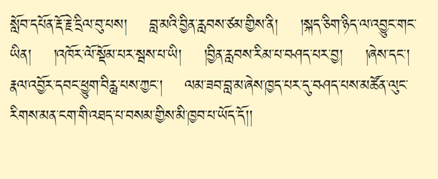ཞེས་དང་། སློབ་དཔོན་རྡོ་རྗེ་དྲིལ་བུ་པས། བླ་མའི་བྱིན་རླབས་ཙམ་གྱིས་ནི། །སྐད་ཅིག་ཉིད་ལ་འབྱུང་གང་ཡིན། །འཁོར་ལོ་སྡོམ་པར་སྦས་པ་ཡི། །བྱིན་རླབས་རིམ་པ་བཤད་པར་བྱ། །ཞེས་དང་། རྣལ་འབྱོར་དབང་ཕྱུག་བིརྺ་པས་ཀྱང་། ལམ་ཟབ་བླ་མ་ཞེས་ཁྱད་པར་དུ་བཤད་པས་མཚོན། རྒྱལ་བ་ཡི་ལུང་ཚད་མ་དང་ནི། མཁས་པའི࿏་རིགས་པ་ཚད་མ་དང་། ཉམས་མྱོང་གི་མན་ངག་ཚད་མ་གསུམ་གྱི་སྒོ་ནས་གཏན་ལ་ཕབ་ནས། དེ་ནས། བླ་མའི་རྣལ་འབྱོར་འདིའི་དགོས་པ་དང་། བྱིན་རླབས་ཆེ་བ། ལམ་ཐམས་ཅད་ཀྱི་སྙིང་པོ་ཡིན་པ་བསམ་གྱིས་མི་ཁྱབ་པ་ཡོད་དོ།
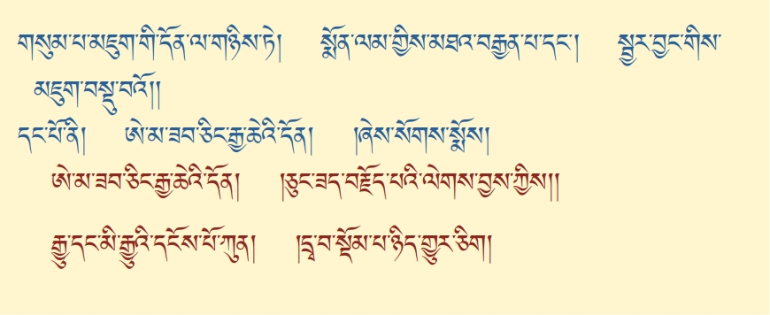གསུམ་པ་མཇུག་གི་དོན་ལ་གཉིས་ཏེ། སྨོན་ལམ་གྱིས་མཐའ་བརྒྱན་པ་དང་། སྦྱར་བྱང་གིས་མཇུག་བསྡུ་བ་གཉིས་ཡོད་པའི་ནང་ནས། དང་པོ་སྨོན་ལམ་གྱིས་མཐའ་བརྒྱན་པ། ཨེ་མ་ཟབ་ཅིང་རྒྱ་ཆེའི་དོན། །ཅུང་ཟད་བརྗོད་པའི་ལེགས་བྱས་ཀྱིས། །རྒྱུ་དང་མི་རྒྱུ་དངོས་པོ་ཀུན། །དྲྭ་བ་སྡོམ་པ་ཉིད་གྱུར་ཅིག །ཅེས་པའི་སྒོ་ནས་བསྟན་པ་སྟེ།
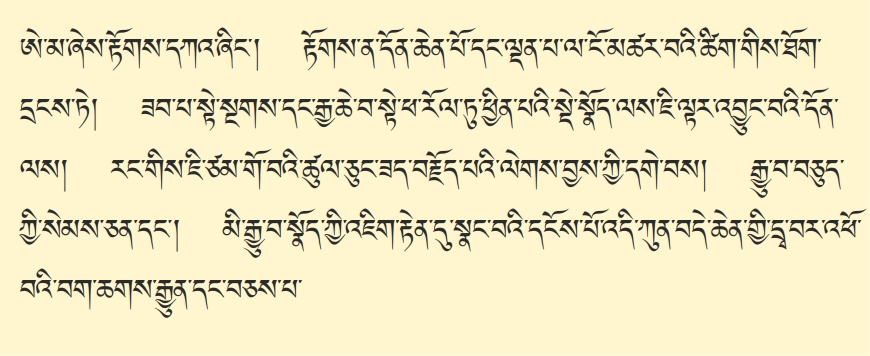ཨེ་མ་ཞེས། མདོ་སྔགས་ལམ་གྱི་རིམ་པ་ཤིན་ཏུ་ནས་ཀྱང་རྟོགས་དཀའ་ཞིང་། རྟོགས་ན་༺འབྲེལ་བ་ཐོག་ཅོག་གི་ཆོས་༻ཡིན་པའི་ཕྱིར་ན། དོན་ཆེན་པོ་དང་ལྡན་པས་ངོ་མཚར་བའི་ཚིག་གིས་ཐོག་དྲངས་ཏེ། དེ་ལྟ་བུ་ངོ་གང་ལ་མཚར་ལེ་ཡིན་ཟེར་ན། ཟབ་པ་སྟེ་གསང་སྔགས་དང་། རྒྱ་ཆེ་བ། དུས་རྒྱུན་མཚན་ཉིད་ཐེག་པའི་ཕ་རོལ་ཏུ་ཕྱིན་པའི་ནང་ནས་ཇི་ལྟར་འབྱུང་བའི་དོན་ཐམས་ཅད་མེད་པར། དེ་ནས། རང་གིས། གང་ཟག་གཅིག་གིས་ཉམས་སུ་ལེན་པ་དེ་ལ། ཚིག་ཉུང་ཉུང་། དོན་ཟབ་པོ། ལམ་གནད་ཐམས་ཅད་ཚང་བ་དེ་ཉིད་འཇམ་དབྱངས་མཁྱེན་བརྩེ་དབང་པོ་རང་གིས། དགེ་བའི་བཤེས་གཉེན་བརྒྱ་དང་ལྔ་བཅུ་ཙམ་ཞིག་བསྟེན་ཏེ། ཐོས་པ་ཕྱོགས་མེད་དུ་མཛད་ནས། མདོ་སྔགས་རིག་གནས་དང་བཅས་པའི࿏་དོན་མ་ལུས་པ་ཐུགས་སུ་ཆུད། གང་ཕྱིར། བསྟན་པ་ཡོངས་རྫོགས་ཀྱི་གདམས་ངག་སྨིན་གྲོལ་ཐམས་ཅད་ཐུགས་ཉམས་སུ་བཞེས། རྟོགས་པས་བདག་གྲོལ། ཐུགས་རྗེས་གཞན་སྒྲོལ་ནུས་པ་འདིས། ཐུགས་ལ་ཇི་ལྟར་མཁྱེན་པ་གཉིས་ཀ་ཡི་གོ་བའི་ཡུལ་དེ་ཉིད། གདུལ་བྱ་སེམས་ཅན་རྣམས་ལ་ཕན་པར་བྱ་བའི་ཕྱིར་དུ། མན་ངག་སྙིང་པོ་མདོར་བསྡུས་པ་བདུད་རྩི་སྙིང་པོ་ཞེས་མཚན་དང་དོན་མཐུན་པ་ཅུང་ཟད་བརྗོད་པའི་ལེགས་བྱས་ཀྱི་དགེ་བས། རྒྱུ་བ་བཅུད་ཀྱི་སེམས་ཅན་དང་། མི་རྒྱུ་བ་སྣོད་ཀྱི་འཇིག་རྟེན་སྣང་བའི་དངོས་པོ་འདི་དག་ཐམས་ཅད་མེད་པར། དོན་དམ་ལྷན་སྐྱེས་བདེ་བ་ཆེན་པོའི་ཡེ་ཤེས་གཅིག་གི་ངོ་བོ་ཡིན་པས་ན། དེ་དཔེར་ན། འཁོར་ལོ་བདེ་མཆོག་ལ་དྲྭ་བ་སྡོམ་པ་ཟེར་མཁན་དང་། སྒྱུ་འཕྲུལ་གསང་བ་སྙིང་པོ་ལ་སྒྱུ་འཕྲུལ་དྲྭ་བ་དང་། དོན་གཅིག་རེད་དུས། དྲྭ་བ་ཟེར་མཁན་འདི་ཕན་ཚུན་དྲྭ་བ་སྦྲེལ་བསྡད་པ་ལྟ་བུ། སྣང་ཚུལ་འཁོར་འདས་ཀྱི་ཆོས་དེ་ཐམས་ཅད་གཏན་ལ་ཕབ་བཞག་ན། སྟོང་ཉིད་དང་དབྱེར་མེད་པའི་བདག་ཉིད་རེད་དུས། སྟོང་དང་སྙིང་རྗེ་དབྱེར་མེད་པའི་དོན་དེ་རྟོགས་སོང་ན། འཁྲུལ་པ་རྒྱུ་དང་བཅད་པ། བག་ཆགས་ཐམས་ཅད་
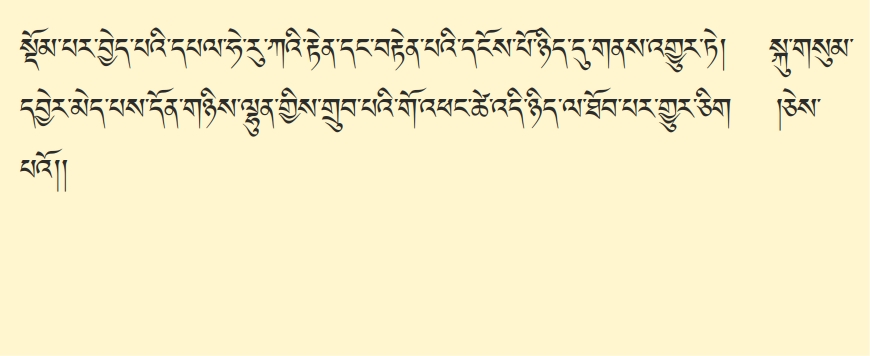ཆོས་ཉིད་བདེ་བ་ཆེན་པོའི་ཡེ་ཤེས་སུ་སྡོམ་པར་བྱེད་པ། དཔལ་ཧེ་རུ་ཀའི་རྟེན་དང་བརྟེན་པར་བཅས་པའི་དངོས་པོ་ཉིད་དུ་གནས་འགྱུར་ཏེ། ཟེར། དེ་ནས། ཧེ་ཞེས་བྱ་བ་༺དེ་ཡིས།༻ཆོས་ཉིད་སྟོང་པ་ཉིད་༼ཀྱི་དོན།༽ རྣམ་ཀུན་མཆོག་ལྡན་གྱི་སྟོང་ཉིད་དང་། རུ་སེམས་ཅན་ལ་རྗེས་སུ་ཆགས་པའི་བརྩེ་བའི་སྙིང་རྗེ་ཆེན་པོ་རྗེས་སུ་མཚོན་པར་བྱེད་པ་ཡིན་པའི་ཕྱིར་ན། དམིགས་མེད་ཀྱི་སྙིང་རྗེ་ཆེན་པོ། ཀ་དེ། སྟོང་དང་སྙིང་རྗེ་ཟུང་དུ་འཇུག་པའི་ཡེ་ཤེས་ཆེན་པོ་ཡིས། གཞི་ལམ་འབྲས་བུའི་ཧེ་རུ་ཀ་ཞེས་སྔགས་ཀྱི་རྒྱུད་སྡེ་རྒྱ་མཚོ་ནས་གསུངས་པ་ལྟ་བུའི་རྟེན་དང་བརྟེན་པའི་དངོས་པོ་ཉིད་དུ་གནས་འགྱུར་ཏེ། སྐུ་གསུམ་དབྱེར་མེད་པ། དོན་གཉིས་ལྷུན་གྱིས་གྲུབ་པའི་གོ་འཕང་ཚེ་འདི་ཉིད་དུ་ཐོབ་པའི་རྒྱུར་འགྱུར་ཅིག །ཅེས་བསྔོ་བ་ཡིས་མཐའ་བརྒྱན་པར་མཛད་པའོ།

གཉིས་པ་ཇི་ལྟར་སྦྱར་བྱང་གི་ཚུལ་བཤད་པ་ནི། ཅེས་པའང་ཁྱབ་བདག་རྡོ་རྗེ་བཙུན་མོའི་ཡེ་ཤེས་གཟིགས་པའི་བདུད་རྩིས་བློ་གྲོས་ཀྱི་པདྨོ་ཁ་བྱེ་བ་ལས་ཕྱི་ནང་རིག་པའི་གནས་དུ་མར་མི་འཇིགས་ཤིང་། སྙིང་པོའི་སྒྲུབ་པ་ལ་རྩེ་གཅིག་ཏུ་ཡང་། ཐེག་པ་མཆོག་གི་རྣལ་འབྱོར་པ་ཆོས་དབྱིངས་དཔལ་ལྡན་གྱིས་བཀའ་སྩལ་བ་དང་དུ་བླངས་ཏེ།
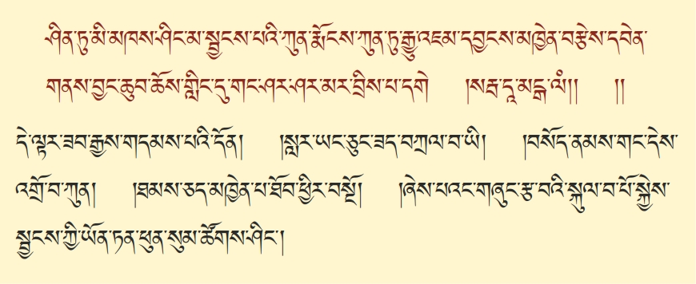ཤིན་ཏུ་མི་མཁས་ཤིང་མ་སྦྱངས་པའི་ཀུན་རྨོངས་ཀུན་ཏུ་རྒྱུ་འཇམ་དབྱངས་མཁྱེན་བརྩེ་དབང་པོས࿏་དབེན་གནས་བྱང་ཆུབ་ཆོས་གླིང་དུ་གང་ཤར་ཤར་མར་བྲིས་པ་དགེ་ཟེར། སརྦ་དཱ་མངྒ་ལཾ་ཞེས་པ། སྨོས་པས་གོ་སླ་བས་མ་སྤྲོས་སོ། །དེ་ལྟར་ཟབ་རྒྱས་གདམས་པའི་དོན། །སླར་ཡང་ཅུང་ཟད་བཀྲལ་བ་འདི། །བསོད་ནམས་གང་དེས་འགྲོ་བ་ཀུན། །ཐམས་ཅད་མཁྱེན་པ་ཐོབ་ཕྱིར་བསྔོ། །ཞེས་པའང་གཞུང་རྩ་བའི་སྐུལ་བ་པོ་སྐྱེས་སྦྱངས་ཀྱི་ཡོན་ཏན་ཕུན་སུམ་ཚོགས་ཤིང་།
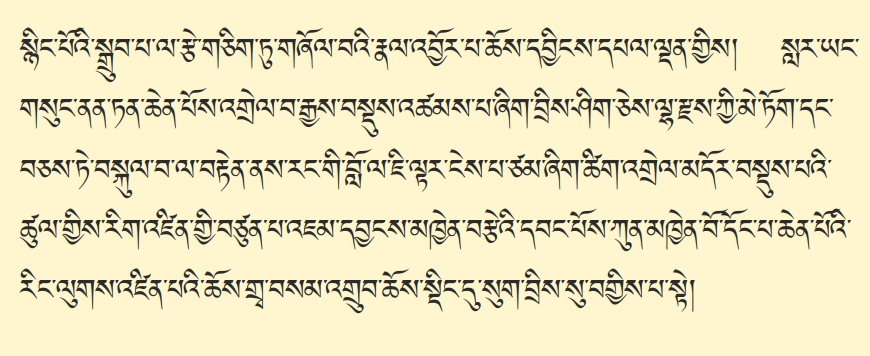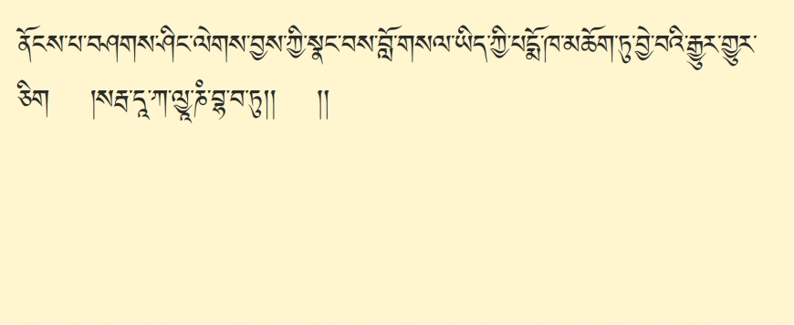
སྙིང་པོའི་སྒྲུབ་པ་ལ་རྩེ་གཅིག་ཏུ་གཞོལ་བའི་རྣལ་འབྱོར་པ་ཆོས་དབྱིངས་དཔལ་ལྡན་གྱིས། སླར་ཡང་གསུང་ནན་ཏན་ཆེན་པོས་འགྲེལ་བ་རྒྱས་བསྡུས་འཚམས་པ་ཞིག་བྲིས། བྲིས་ཤིག་ཅེས་ལྷ་རྫས་ཀྱི་མེ་ཏོག་དང་བཅས་ཏེ་བསྐུལ་བ་ལ་བརྟེན་ནས་རང་གི་བློ་ལ་ཇི་ལྟར་ངེས་པ་ཙམ་ཞིག་ཚིག་འགྲེལ་མདོར་བསྡུས་པའི་ཚུལ་གྱིས་༼རིག་འཛིན་༽རིག་འཛིན་གྱི་བཙུན་པ་འཇམ་དབྱངས་མཁྱེན་བརྩེའི་དབང་པོས་ཀུན་མཁྱེན་བོ་དོང་པ་ཆེན་པོའི་རིང་ལུགས་འཛིན་པའི་ཆོས་གྲྭ་བསམ་འགྲུབ་ཆོས་སྡིང་དུ་སུག་བྲིས་བགྱིས་པ་སྟེ། ནོང་པ་བཤགས་ཤིང་། ལེགས་བྱས་ཀྱི་སྣང་བས་བློ་གསལ་ཡིད་ཀྱི་པདྨོ་མཆོག་ཏུ་ཁ་བྱེ་བར་གྱུར་ཅིག །སརྦ་དཱ་ཀ་ལྱཱ་ཎཾ་བྷ་བ་ཏུ།། །། ཞེས་པ་འདིས་མདོ་སྔགས་ཀྱི་ལམ་ཡོངས་སུ་རྫོགས་པ། ཚིག་ཉུང་ལ་དོན་ཟབ་པའི་སྒོ་ནས། བསྟན་ཟིན་པ་རེད།